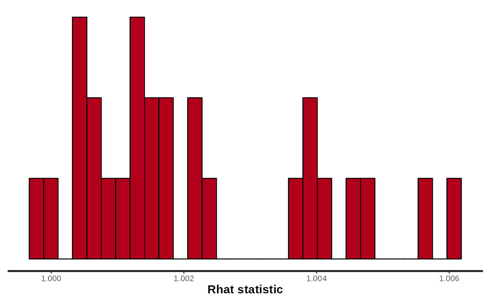
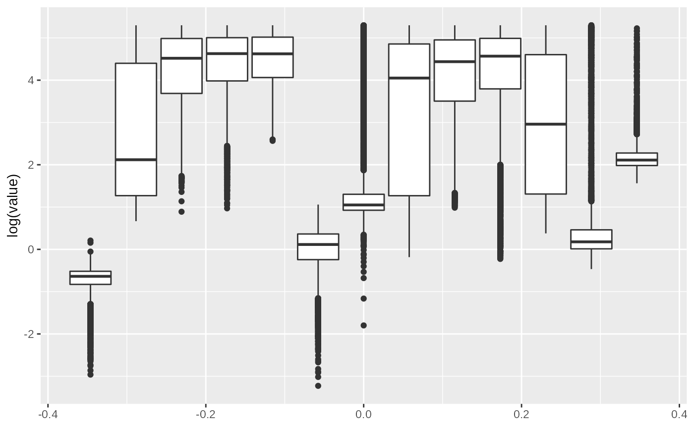
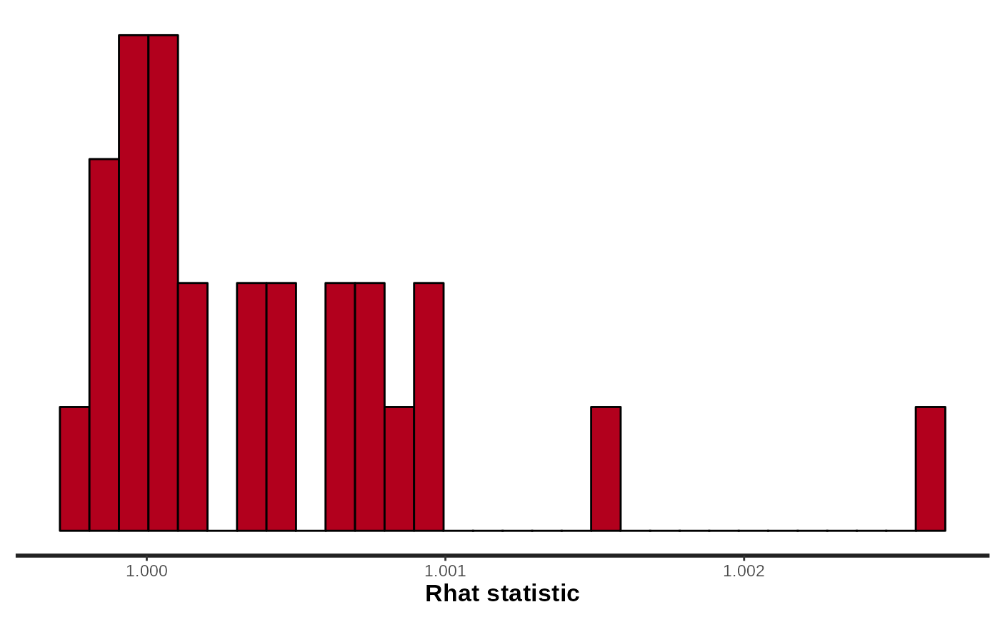
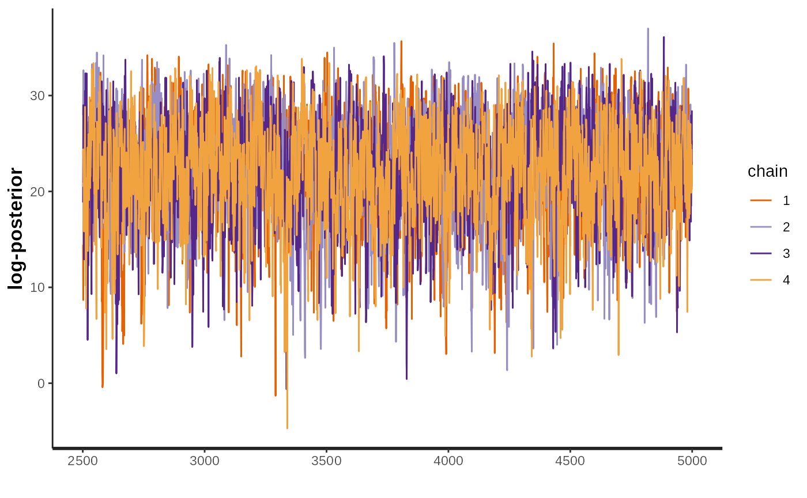
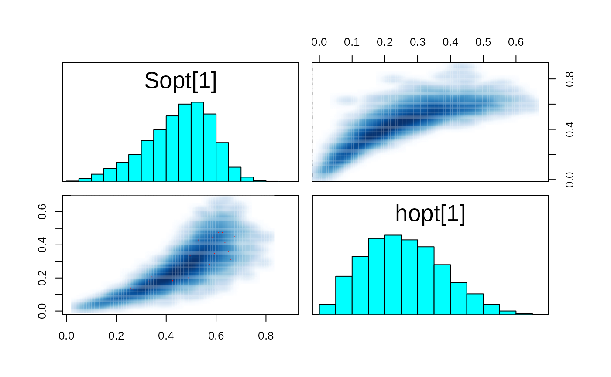
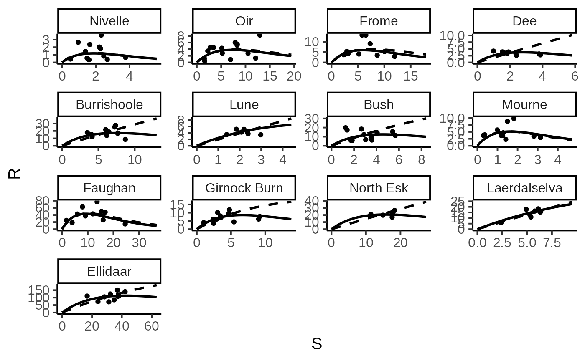
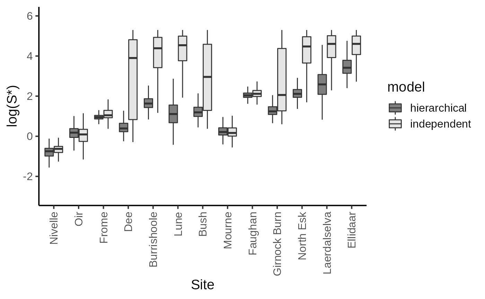

Hierarchical Stock Recruitment
hierarchical-stock-recruitment.Rmd
library(hbm4ecology)
library(rstan)
#> Loading required package: StanHeaders
#> Loading required package: ggplot2
#> rstan (Version 2.21.5, GitRev: 2e1f913d3ca3)
#> For execution on a local, multicore CPU with excess RAM we recommend calling
#> options(mc.cores = parallel::detectCores()).
#> To avoid recompilation of unchanged Stan programs, we recommend calling
#> rstan_options(auto_write = TRUE)
library(tidyverse)
#> ── Attaching packages ─────────────────────────────────────── tidyverse 1.3.1 ──
#> ✔ tibble 3.1.7 ✔ dplyr 1.0.9
#> ✔ tidyr 1.2.0 ✔ stringr 1.4.0
#> ✔ readr 2.1.2 ✔ forcats 0.5.1
#> ✔ purrr 0.3.4
#> ── Conflicts ────────────────────────────────────────── tidyverse_conflicts() ──
#> ✖ tidyr::extract() masks rstan::extract()
#> ✖ dplyr::filter() masks stats::filter()
#> ✖ dplyr::lag() masks stats::lag()Parent E. and Rivot E. - An introduction to Hierarchcial Modeling of Ecological Data Chapman et al. 2012
Stan program for Hierarchical Stock-recruitment analysis (with covariates Latitude) Chapter 9 - section 9.3
Model without covariates
Ricker model with lognormal errors and management related parametrization
- \(\log(R_{k,t}) = h_{k}^{*} + \log(\frac{S_{k,t}}{1-h^{*}{t}}) - \frac{h^{*}_{k}}{S^{*}_{k}}S_{k,t} + \epsilon_{k,t}\)
- \(\epsilon_{k,t} \overset{iid}{\sim} Normal(0, \sigma_k^2)\)
Defining priors for the model
- \(h_k^* \sim Beta(1,1)\)
- \(\tau = \sigma^{-2} \sim Gamma(p = 10^{-3},q = 10^{-3})\) with \(\sigma_k = k\), \(\forall k\)
With two different elicitation for \(S^*_k\):
A more refined gamma elicitation:
- \(\mu_{S^*} = 40 \text{eggs/$m^2$}\)
- \(CV_{S^*} = 1\)
- \(a = CV_{S^*}^{-2}\)
- \(b = \mu_{S^*}^{-1}CV_{S^*}^{-2}\)
- \(S_k^* \sim Gamma(a,b) \mathbf{1}_{S_k^* < 200}\)
A simple uniform:
- \(S_k^* \sim Uniform(0,200)\)
Writing the model in stan
hsr_model_stan <- "
data {
int n_riv; // Number of rivers
int n_obs[n_riv]; // Number of observations by rivers
int n; // Total number of observations
int riv[n]; // River membership (indices k)
vector[n] S; // Stock data
vector[n] R; // Recruitment data
}
parameters {
vector<lower=0, upper=200>[n_riv] Sopt;
vector<lower=0, upper=1>[n_riv] hopt;
real<lower=0> tau;
}
transformed parameters {
vector<lower=0>[n_riv] alpha;
vector<lower=0>[n_riv] beta ;
real<lower=0> sigma;
// real Copt;
// real Ropt;
vector[n] LogR;
// real Slope;
for (k in 1:n_riv) {
alpha[k] = exp(hopt[k])/(1-hopt[k]) ;
beta[k] = hopt[k]/Sopt[k] ;
}
sigma = tau^-0.5 ;
// Copt = hopt*Sopt/(1-hopt);
// Ropt = Sopt + Copt;
// Slope = exp(alpha);
for (t in 1:n) {
LogR[t] = log(S[t]) + log(alpha[riv[t]]) - beta[riv[t]]*S[t] ; // LogR[t] is the logarithm of the Ricker function
}
}
model {
tau ~ gamma(.001, .001) ; // Diffuse prior for the variance
for (k in 1:n_riv) {
hopt[k] ~ beta(1,1) ;
Sopt[k] ~ uniform(0, 200) ;
}
//
log(R) ~ normal(LogR, sigma) ;
}
"
data("HsrAsalmon")
# data <- list(
#
# n_riv = 13,
#
# n_obs = c(12,14,12,9,12,7,13,13,11,12,6,8,10),
#
# n = 139,
#
# riv = c(
# 1, 1, 1, 1, 1, 1, 1, 1, 1, 1, 1, 1,
# 2, 2, 2, 2, 2, 2, 2, 2, 2, 2, 2, 2, 2, 2,
# 3, 3, 3, 3, 3, 3, 3, 3, 3, 3, 3, 3,
# 4, 4, 4, 4, 4, 4, 4, 4, 4,
# 5, 5, 5, 5, 5, 5, 5, 5, 5, 5, 5, 5,
# 6, 6, 6, 6, 6, 6, 6,
# 7, 7, 7, 7, 7, 7, 7, 7, 7, 7, 7, 7, 7,
# 8, 8, 8, 8, 8, 8, 8, 8, 8, 8, 8, 8, 8,
# 9, 9, 9, 9, 9, 9, 9, 9, 9, 9, 9,
# 10, 10, 10, 10, 10, 10, 10, 10, 10, 10, 10, 10,
# 11, 11, 11, 11, 11, 11,
# 12, 12, 12, 12, 12, 12, 12, 12,
# 13, 13, 13, 13, 13, 13, 13, 13, 13, 13),
#
# S = c(0.957, 0.501, 2.286, 1.481, 1.596, 2.679, 2.323, 1.645, 2.210, 3.764, 2.470, 1.391,
# 12.956, 12.084, 10.523, 2.762, 8.278, 6.943, 5.135, 1.540, 2.262, 3.437, 8.305, 5.231, 7.889, 1.621,
# 5.785, 6.504, 7.325, 10.052, 11.969, 8.660, 5.192, 2.354, 2.494, 3.172, 2.887, 2.921,
# 2.399, 3.793, 0.989, 1.621, 1.538, 1.822, 3.872, 1.913, 2.364,
# 4.059, 7.377, 8.705, 6.032, 6.159, 7.653, 3.477, 7.250, 4.134, 6.441, 6.062, 6.013,
# 2.199, 1.844, 2.364, 1.395, 2.979, 2.388, 2.080,
# 1.384, 3.584, 5.665, 4.057, 5.441, 1.254, 2.886, 3.513, 3.040, 3.548, 2.661, 1.727, 1.833,
# 0.296, 1.284, 0.992, 0.366, 1.193, 1.496, 1.818, 1.258, 1.169, 2.813, 3.136, 1.189, 1.414,
# 3.914, 16.788, 9.091, 1.678, 5.970, 15.327, 11.944, 7.955, 13.640, 16.008, 24.593,
# 4.765, 2.467, 3.454, 9.036, 9.206, 3.540, 2.382, 4.680, 2.876, 1.021, 3.046, 5.428,
# 11.381, 11.425, 18.308, 14.920, 17.584, 17.733,
# 6.331, 5.269, 6.369, 4.913, 6.129, 5.782, 5.383, 2.376,
# 37.010, 37.303, 28.337, 16.790, 37.955, 42.157, 32.309, 34.869, 24.022, 31.268),
#
# R = c(2.647, 0.444, 1.801, 0.573, 0.356, 0.390, 3.598, 2.357, 2.026, 0.665, 0.834, 1.433,
# 8.247, 1.328, 2.744, 4.511, 5.174, 0.846, 4.278, 1.237, 3.429, 4.491, 5.440, 2.797, 5.997, 0.442,
# 13.278, 13.266, 9.062, 5.269, 2.919, 3.467, 4.080, 3.757, 3.828, 4.397, 4.640, 5.370,
# 2.617, 3.141, 4.205, 3.655, 3.898, 3.333, 2.792, 3.877, 3.290,
# 15.226, 27.525, 8.615, 16.634, 13.926, 16.805, 17.668, 25.368, 12.232, 18.723, 16.516, 21.778,
# 5.114, 5.145, 4.207, 3.491, 3.412, 3.759, 4.248,
# 17.341, 6.301, 11.328, 14.334, 15.589, 19.808, 12.307, 9.313, 6.717, 10.268, 18.339, 5.982, 5.817,
# 3.727, 4.675, 5.681, 3.932, 3.653, 8.789, 9.800, 3.715, 4.419, 3.435, 2.991, 4.184, 2.309,
# 18.657, 47.897, 37.326, 24.859, 42.626, 50.024, 42.996, 62.642, 76.854, 26.009, 14.744,
# 11.766, 3.594, 8.026, 6.119, 7.735, 7.152, 5.919, 9.419, 6.065, 4.016, 10.110, 4.438,
# 20.154, 20.791, 26.458, 19.724, 16.823, 21.693,
# 15.323, 13.202, 15.969, 17.781, 18.242, 16.253, 10.899, 5.724,
# 150.747, 108.681, 104.854, 110.264, 111.579, 139.799, 124.208, 85.049, 73.261, 71.534)
#
# )
#options(mc.cores = parallel::detectCores())
# Number iteration for the "warm up" phase
n_warm <- 2500
# Number iteration for inferences
n_iter <- 5000
n_thin <- 1
# Number of chains
n_chains <- 4
#STAN_model_SRMargaree_Ricker_LogN_Management <-
# STAN_model_SRMargaree_Ricker_LogN_Management.stan
# ------------------------------------------------------------------------------------
# HMC config.
# ------------------------------------------------------------------------------------
# Run model
# ------------------------------------------------------------------------------------
# Load/check model, load data and inits
# model_code <- stanc(file = "./STAN_SRMargaree_Ricker_LogN_Management.stan")
model_name <-"HSR_Ricker_LogN_Management"
sm <- stan_model(model_code = hsr_model_stan,
model_name = model_name
)
params<-c("Sopt","hopt","tau")
# Inferences
fit <- sampling(object = sm,
data = HsrAsalmon,
pars = NA, #params,
chains = n_chains,
iter = n_iter,
warmup = n_warm,
thin = n_thin,
control = list("adapt_delta" = .85)
#control = list("max_treedepth" = 12)
)
#>
#> SAMPLING FOR MODEL 'HSR_Ricker_LogN_Management' NOW (CHAIN 1).
#> Chain 1:
#> Chain 1: Gradient evaluation took 4.1e-05 seconds
#> Chain 1: 1000 transitions using 10 leapfrog steps per transition would take 0.41 seconds.
#> Chain 1: Adjust your expectations accordingly!
#> Chain 1:
#> Chain 1:
#> Chain 1: Iteration: 1 / 5000 [ 0%] (Warmup)
#> Chain 1: Iteration: 500 / 5000 [ 10%] (Warmup)
#> Chain 1: Iteration: 1000 / 5000 [ 20%] (Warmup)
#> Chain 1: Iteration: 1500 / 5000 [ 30%] (Warmup)
#> Chain 1: Iteration: 2000 / 5000 [ 40%] (Warmup)
#> Chain 1: Iteration: 2500 / 5000 [ 50%] (Warmup)
#> Chain 1: Iteration: 2501 / 5000 [ 50%] (Sampling)
#> Chain 1: Iteration: 3000 / 5000 [ 60%] (Sampling)
#> Chain 1: Iteration: 3500 / 5000 [ 70%] (Sampling)
#> Chain 1: Iteration: 4000 / 5000 [ 80%] (Sampling)
#> Chain 1: Iteration: 4500 / 5000 [ 90%] (Sampling)
#> Chain 1: Iteration: 5000 / 5000 [100%] (Sampling)
#> Chain 1:
#> Chain 1: Elapsed Time: 4.78813 seconds (Warm-up)
#> Chain 1: 3.32478 seconds (Sampling)
#> Chain 1: 8.11292 seconds (Total)
#> Chain 1:
#>
#> SAMPLING FOR MODEL 'HSR_Ricker_LogN_Management' NOW (CHAIN 2).
#> Chain 2:
#> Chain 2: Gradient evaluation took 3.3e-05 seconds
#> Chain 2: 1000 transitions using 10 leapfrog steps per transition would take 0.33 seconds.
#> Chain 2: Adjust your expectations accordingly!
#> Chain 2:
#> Chain 2:
#> Chain 2: Iteration: 1 / 5000 [ 0%] (Warmup)
#> Chain 2: Iteration: 500 / 5000 [ 10%] (Warmup)
#> Chain 2: Iteration: 1000 / 5000 [ 20%] (Warmup)
#> Chain 2: Iteration: 1500 / 5000 [ 30%] (Warmup)
#> Chain 2: Iteration: 2000 / 5000 [ 40%] (Warmup)
#> Chain 2: Iteration: 2500 / 5000 [ 50%] (Warmup)
#> Chain 2: Iteration: 2501 / 5000 [ 50%] (Sampling)
#> Chain 2: Iteration: 3000 / 5000 [ 60%] (Sampling)
#> Chain 2: Iteration: 3500 / 5000 [ 70%] (Sampling)
#> Chain 2: Iteration: 4000 / 5000 [ 80%] (Sampling)
#> Chain 2: Iteration: 4500 / 5000 [ 90%] (Sampling)
#> Chain 2: Iteration: 5000 / 5000 [100%] (Sampling)
#> Chain 2:
#> Chain 2: Elapsed Time: 5.04502 seconds (Warm-up)
#> Chain 2: 5.51493 seconds (Sampling)
#> Chain 2: 10.5599 seconds (Total)
#> Chain 2:
#>
#> SAMPLING FOR MODEL 'HSR_Ricker_LogN_Management' NOW (CHAIN 3).
#> Chain 3:
#> Chain 3: Gradient evaluation took 3.2e-05 seconds
#> Chain 3: 1000 transitions using 10 leapfrog steps per transition would take 0.32 seconds.
#> Chain 3: Adjust your expectations accordingly!
#> Chain 3:
#> Chain 3:
#> Chain 3: Iteration: 1 / 5000 [ 0%] (Warmup)
#> Chain 3: Iteration: 500 / 5000 [ 10%] (Warmup)
#> Chain 3: Iteration: 1000 / 5000 [ 20%] (Warmup)
#> Chain 3: Iteration: 1500 / 5000 [ 30%] (Warmup)
#> Chain 3: Iteration: 2000 / 5000 [ 40%] (Warmup)
#> Chain 3: Iteration: 2500 / 5000 [ 50%] (Warmup)
#> Chain 3: Iteration: 2501 / 5000 [ 50%] (Sampling)
#> Chain 3: Iteration: 3000 / 5000 [ 60%] (Sampling)
#> Chain 3: Iteration: 3500 / 5000 [ 70%] (Sampling)
#> Chain 3: Iteration: 4000 / 5000 [ 80%] (Sampling)
#> Chain 3: Iteration: 4500 / 5000 [ 90%] (Sampling)
#> Chain 3: Iteration: 5000 / 5000 [100%] (Sampling)
#> Chain 3:
#> Chain 3: Elapsed Time: 4.99873 seconds (Warm-up)
#> Chain 3: 5.43342 seconds (Sampling)
#> Chain 3: 10.4322 seconds (Total)
#> Chain 3:
#>
#> SAMPLING FOR MODEL 'HSR_Ricker_LogN_Management' NOW (CHAIN 4).
#> Chain 4:
#> Chain 4: Gradient evaluation took 3.4e-05 seconds
#> Chain 4: 1000 transitions using 10 leapfrog steps per transition would take 0.34 seconds.
#> Chain 4: Adjust your expectations accordingly!
#> Chain 4:
#> Chain 4:
#> Chain 4: Iteration: 1 / 5000 [ 0%] (Warmup)
#> Chain 4: Iteration: 500 / 5000 [ 10%] (Warmup)
#> Chain 4: Iteration: 1000 / 5000 [ 20%] (Warmup)
#> Chain 4: Iteration: 1500 / 5000 [ 30%] (Warmup)
#> Chain 4: Iteration: 2000 / 5000 [ 40%] (Warmup)
#> Chain 4: Iteration: 2500 / 5000 [ 50%] (Warmup)
#> Chain 4: Iteration: 2501 / 5000 [ 50%] (Sampling)
#> Chain 4: Iteration: 3000 / 5000 [ 60%] (Sampling)
#> Chain 4: Iteration: 3500 / 5000 [ 70%] (Sampling)
#> Chain 4: Iteration: 4000 / 5000 [ 80%] (Sampling)
#> Chain 4: Iteration: 4500 / 5000 [ 90%] (Sampling)
#> Chain 4: Iteration: 5000 / 5000 [100%] (Sampling)
#> Chain 4:
#> Chain 4: Elapsed Time: 4.89426 seconds (Warm-up)
#> Chain 4: 5.92171 seconds (Sampling)
#> Chain 4: 10.816 seconds (Total)
#> Chain 4:
#> Warning: There were 28 divergent transitions after warmup. See
#> https://mc-stan.org/misc/warnings.html#divergent-transitions-after-warmup
#> to find out why this is a problem and how to eliminate them.
#> Warning: Examine the pairs() plot to diagnose sampling problems
#> Warning: Bulk Effective Samples Size (ESS) is too low, indicating posterior means and medians may be unreliable.
#> Running the chains for more iterations may help. See
#> https://mc-stan.org/misc/warnings.html#bulk-ess
#> Warning: Tail Effective Samples Size (ESS) is too low, indicating posterior variances and tail quantiles may be unreliable.
#> Running the chains for more iterations may help. See
#> https://mc-stan.org/misc/warnings.html#tail-ess
stan_rhat(fit,pars = params )
#> `stat_bin()` using `bins = 30`. Pick better value with `binwidth`.
summary(fit)
#> $summary
#> mean se_mean sd 2.5% 25%
#> Sopt[1] 3.752986073 3.9652315261 20.622160076 0.2154714566 0.443972155
#> Sopt[2] 1.105195006 0.0077308842 0.460079398 0.2558961917 0.771535371
#> Sopt[3] 18.557126793 1.9654441350 42.147583097 1.9912047410 2.520247780
#> Sopt[4] 72.421589672 1.6283799152 64.998357505 1.0791727319 4.431305495
#> Sopt[5] 90.678083228 0.9455965405 60.244948549 4.6301465684 34.345584180
#> Sopt[6] 98.610263525 0.7396626189 58.093848303 4.0458851074 47.978089899
#> Sopt[7] 56.605210937 1.3965199449 61.815354002 2.0794082877 3.869670506
#> Sopt[8] 10.339392783 1.5368215503 32.760005232 0.8063107662 1.004400607
#> Sopt[9] 9.831436272 0.4297487876 10.288635214 5.9950010243 7.256273797
#> Sopt[10] 48.630564680 1.5278888671 60.100195267 2.5032007220 3.629450894
#> Sopt[11] 94.960486991 0.7899783187 58.167193502 7.9928590934 42.380649641
#> Sopt[12] 101.659760512 0.7427789410 56.777761466 9.2967124280 51.912609697
#> Sopt[13] 104.163015810 0.8700762928 52.120313354 22.8211819405 57.502761343
#> hopt[1] 0.301686728 0.0095118656 0.134550635 0.0274946636 0.207221241
#> hopt[2] 0.149128452 0.0012188408 0.080434506 0.0250621318 0.087362586
#> hopt[3] 0.350851643 0.0074199542 0.164546184 0.0238977079 0.243678174
#> hopt[4] 0.305015507 0.0055477385 0.161374662 0.0854601381 0.197243537
#> hopt[5] 0.481373633 0.0017639641 0.085540072 0.3476181764 0.428705222
#> hopt[6] 0.307518041 0.0013144061 0.089839473 0.1327163071 0.249497949
#> hopt[7] 0.622365487 0.0026590127 0.100231851 0.4701542689 0.546656314
#> hopt[8] 0.738614030 0.0041878152 0.093111670 0.5003794232 0.701288692
#> hopt[9] 0.800471822 0.0014172853 0.061738663 0.6492716712 0.769132541
#> hopt[10] 0.383903461 0.0038610276 0.136233149 0.1618625364 0.275856703
#> hopt[11] 0.201771191 0.0018072899 0.120395022 0.0215438491 0.119306898
#> hopt[12] 0.428317457 0.0010704401 0.075741182 0.2802554588 0.378329547
#> hopt[13] 0.582067567 0.0014684147 0.085298962 0.4381870430 0.525214066
#> tau 3.679284245 0.0290771135 0.569900926 2.6243047059 3.284893916
#> alpha[1] 2.090939399 0.0329948933 0.747187554 1.0569362364 1.551826044
#> alpha[2] 1.393952382 0.0037293617 0.270564884 1.0517376138 1.195756693
#> alpha[3] 2.455621513 0.0355724467 0.994865963 1.0492604666 1.687024778
#> alpha[4] 2.298027267 0.0481928095 1.507149245 1.1910012756 1.517322763
#> alpha[5] 3.353942698 0.0359574862 1.569975026 2.1700353241 2.687348917
#> alpha[6] 2.042290557 0.0098959155 0.647619587 1.3166695125 1.710029885
#> alpha[7] 5.659159240 0.0692034191 2.829501460 3.0202018202 3.810502509
#> alpha[8] 9.199280168 0.1112976847 3.584978546 3.3011991433 6.750161220
#> alpha[9] 12.411005058 0.0668759983 4.419030374 5.4576332547 9.346893535
#> alpha[10] 2.639104687 0.0290250384 1.109633257 1.4027515361 1.819610896
#> alpha[11] 1.662832709 0.0180972249 1.354986087 1.0442753030 1.279351060
#> alpha[12] 2.774514607 0.0098343543 0.655947921 1.8388022210 2.348260150
#> alpha[13] 4.674364427 0.0394651894 2.097824602 2.7587380533 3.561227563
#> beta[1] 0.572006963 0.0197874130 0.189012275 0.0005050777 0.462311683
#> beta[2] 0.129831022 0.0003743228 0.029688504 0.0751825347 0.109726009
#> beta[3] 0.123980636 0.0033014995 0.072873930 0.0002434729 0.078934596
#> beta[4] 0.098138948 0.0066115792 0.185222273 0.0006824632 0.001741412
#> beta[5] 0.019417639 0.0009915011 0.039855292 0.0021188254 0.003161707
#> beta[6] 0.013037783 0.0010149856 0.049743234 0.0009938703 0.001970244
#> beta[7] 0.097265312 0.0033726405 0.122784814 0.0028325001 0.005279029
#> beta[8] 0.601104676 0.0118285026 0.278929226 0.0037778490 0.463005832
#> beta[9] 0.096325000 0.0005972500 0.028120718 0.0348769594 0.079117105
#> beta[10] 0.071945907 0.0023486654 0.079163197 0.0011933181 0.003020606
#> beta[11] 0.006543220 0.0002431252 0.015323416 0.0002051178 0.001046737
#> beta[12] 0.009388892 0.0003171940 0.017879603 0.0017895542 0.002770042
#> beta[13] 0.008795967 0.0001641003 0.008389256 0.0025629996 0.003624014
#> sigma 0.526150606 0.0024824019 0.041814610 0.4541866666 0.496466330
#> LogR[1] 0.088858546 0.0034534538 0.193080802 -0.2473171063 -0.046237961
#> LogR[2] -0.297503569 0.0107884074 0.254142149 -0.7125599205 -0.491205683
#> LogR[3] 0.199416745 0.0235650135 0.206015362 -0.1591175476 0.071758687
#> LogR[4] 0.225796320 0.0055965051 0.155710435 -0.0693603633 0.117364949
#> LogR[5] 0.234798483 0.0081832463 0.154952970 -0.0570932794 0.128700745
#> LogR[6] 0.133258034 0.0317053127 0.261047914 -0.3132864261 -0.028402455
#> LogR[7] 0.194308376 0.0243394118 0.210693357 -0.1726607796 0.064195512
#> LogR[8] 0.237010027 0.0092555746 0.155554649 -0.0557959595 0.130555315
#> LogR[9] 0.209078224 0.0219599347 0.196837616 -0.1391561617 0.086223437
#> LogR[10] -0.147330890 0.0533568444 0.443170191 -0.9092407175 -0.424837780
#> LogR[11] 0.171582049 0.0274017415 0.230440358 -0.2211438231 0.029755530
#> LogR[12] 0.214582324 0.0033579140 0.158395198 -0.0836492493 0.103441879
#> LogR[13] 1.194811903 0.0030390945 0.277438426 0.6451034550 1.011110304
#> LogR[14] 1.238347817 0.0027537060 0.254282991 0.7387520672 1.070248784
#> LogR[15] 1.302695117 0.0022472300 0.214398561 0.8804494596 1.160441895
#> LogR[16] 0.972705399 0.0019232163 0.129600356 0.7608741333 0.879526625
#> LogR[17] 1.354203818 0.0016882573 0.163137520 1.0353211493 1.245227321
#> LogR[18] 1.351660797 0.0015417814 0.138989461 1.0796994391 1.259765059
#> LogR[19] 1.284741171 0.0015750322 0.120191425 1.0547924533 1.201901974
#> LogR[20] 0.547186270 0.0022104547 0.147914335 0.3223117993 0.436682223
#> LogR[21] 0.837915233 0.0020317584 0.136226301 0.6229547365 0.737670255
#> LogR[22] 1.103713402 0.0017929161 0.122953210 0.8919645818 1.017664038
#> LogR[23] 1.353954730 0.0016929875 0.163688175 1.0341215932 1.244629812
#> LogR[24] 1.290800014 0.0015682849 0.120664049 1.0596885949 1.208128994
#> LogR[25] 1.356576076 0.0016272849 0.155446490 1.0535207808 1.253380940
#> LogR[26] 0.587930783 0.0021887075 0.146493359 0.3648630477 0.478436273
#> LogR[27] 1.852809750 0.0016364220 0.144560214 1.5607956332 1.763642823
#> LogR[28] 1.880816685 0.0036073455 0.163680410 1.5572970642 1.771614638
#> LogR[29] 1.897904366 0.0063127308 0.200587649 1.5193100915 1.756968193
#> LogR[30] 1.876287637 0.0153335837 0.369151897 1.2444398366 1.607263278
#> LogR[31] 1.813165113 0.0216587087 0.501061616 0.9757419434 1.448120193
#> LogR[32] 1.899811785 0.0107362417 0.278175767 1.4035394763 1.698819007
#> LogR[33] 1.818180886 0.0013806475 0.142016167 1.5428160387 1.721367050
#> LogR[34] 1.379034959 0.0101470450 0.261514368 0.8973701663 1.187989471
#> LogR[35] 1.419449508 0.0096867998 0.252992225 0.9536643263 1.236018012
#> LogR[36] 1.575865094 0.0074528373 0.213812726 1.1854474866 1.418582094
#> LogR[37] 1.517055172 0.0083927622 0.229802085 1.0943126961 1.349913264
#> LogR[38] 1.524547953 0.0082808133 0.227854079 1.1057002621 1.359017009
#> LogR[39] 1.344532486 0.0017445274 0.174213705 1.0126071574 1.226248808
#> LogR[40] 1.665832072 0.0097374847 0.333558768 0.7778226014 1.546080967
#> LogR[41] 0.596795472 0.0090002101 0.290085121 0.1619426154 0.399521636
#> LogR[42] 1.028875847 0.0048687546 0.207765433 0.6548412384 0.884423869
#> LogR[43] 0.984461008 0.0054043819 0.216761258 0.6025019792 0.832982235
#> LogR[44] 1.126041474 0.0035319751 0.189411004 0.7708954510 0.994696859
#> LogR[45] 1.678693002 0.0102562382 0.346177749 0.7494451442 1.563146454
#> LogR[46] 1.165848722 0.0029259482 0.182996498 0.8187102563 1.039374436
#> LogR[47] 1.333270465 0.0016813888 0.173305545 1.0029351591 1.215589321
#> LogR[48] 2.477875116 0.0025591155 0.175213026 2.1546432358 2.360855241
#> LogR[49] 3.010877803 0.0016521504 0.162076452 2.6804244678 2.904734934
#> LogR[50] 3.150621700 0.0027167910 0.185191522 2.7330787345 3.047066469
#> LogR[51] 2.835706107 0.0013259790 0.154433309 2.5346676670 2.731474860
#> LogR[52] 2.854075862 0.0013135707 0.154377330 2.5530131991 2.749577177
#> LogR[53] 3.042249211 0.0018567343 0.165758427 2.6975844787 2.935769469
#> LogR[54] 2.334409397 0.0030718704 0.187302571 2.0030586512 2.211161276
#> LogR[55] 2.995978260 0.0015638693 0.160607107 2.6707568383 2.889423525
#> LogR[56] 2.494727616 0.0024950834 0.173819161 2.1727064608 2.378550678
#> LogR[57] 2.893369469 0.0013150366 0.154845676 2.5922986874 2.789124009
#> LogR[58] 2.840084725 0.0013223280 0.154405120 2.5385079922 2.735635383
#> LogR[59] 2.832920203 0.0013285187 0.154455946 2.5320030440 2.728604295
#> LogR[60] 1.443553610 0.0024839014 0.197468718 1.0566927900 1.310838612
#> LogR[61] 1.272116436 0.0025243844 0.198969054 0.8816816139 1.137787989
#> LogR[62] 1.513754763 0.0024844952 0.197306223 1.1255579615 1.381597958
#> LogR[63] 0.998927691 0.0026438741 0.203062090 0.6042379986 0.861974091
#> LogR[64] 1.736969101 0.0025859118 0.199693789 1.3382988373 1.605330564
#> LogR[65] 1.523542953 0.0024856010 0.197311020 1.1356369590 1.391434508
#> LogR[66] 1.389470288 0.0024919146 0.197797331 1.0013452871 1.256193798
#> LogR[67] 1.829482925 0.0061379177 0.257150269 1.4203835611 1.643989494
#> LogR[68] 2.567000877 0.0018806014 0.155453350 2.2564008764 2.465027565
#> LogR[69] 2.822419162 0.0084806355 0.344651093 2.0133914928 2.617025647
#> LogR[70] 2.644958673 0.0032776109 0.184947011 2.2541888547 2.528287746
#> LogR[71] 2.803862565 0.0077430112 0.319888096 2.0546895883 2.614960535
#> LogR[72] 1.743488001 0.0065699861 0.270503789 1.3235827395 1.547468634
#> LogR[73] 2.418284030 0.0015637164 0.147217314 2.1266349338 2.320849474
#> LogR[74] 2.553897592 0.0016970686 0.152450105 2.2500745335 2.453364468
#> LogR[75] 2.455291227 0.0013594703 0.144775379 2.1716129645 2.358473675
#> LogR[76] 2.560406997 0.0017857334 0.153876189 2.2539249868 2.459148866
#> LogR[77] 2.358999257 0.0020524806 0.154920347 2.0568366343 2.255259290
#> LogR[78] 2.017528865 0.0050030917 0.223565407 1.6387921421 1.859600103
#> LogR[79] 2.066786912 0.0046517573 0.213798217 1.6971655514 1.916220194
#> LogR[80] 0.741602552 0.0135891789 0.345301867 -0.0281073859 0.552790947
#> LogR[81] 1.615087161 0.0022060585 0.150613486 1.3165417144 1.515902011
#> LogR[82] 1.532597350 0.0052960384 0.188168480 1.1432846683 1.411748174
#> LogR[83] 0.911799103 0.0127571150 0.327709232 0.1824201346 0.730667844
#> LogR[84] 1.596278625 0.0031257511 0.158828162 1.2808685257 1.492256091
#> LogR[85] 1.640467644 0.0014398294 0.147513201 1.3491201343 1.539319521
#> LogR[86] 1.641854055 0.0044774540 0.183668460 1.2964355731 1.515178163
#> LogR[87] 1.610258836 0.0024682173 0.152575269 1.3083563901 1.510385153
#> LogR[88] 1.590382676 0.0033750459 0.161590609 1.2682522120 1.484521909
#> LogR[89] 1.480269436 0.0161682644 0.415555832 0.7766573174 1.194438851
#> LogR[90] 1.394809198 0.0199780302 0.500914215 0.5532958811 1.052412154
#> LogR[91] 1.595324518 0.0031670438 0.159272359 1.2784901890 1.490911350
#> LogR[92] 1.633385916 0.0013963204 0.145905051 1.3450673847 1.534360242
#> LogR[93] 3.444192134 0.0046742195 0.262231177 2.8980931609 3.277965365
#> LogR[94] 3.660208566 0.0033181943 0.217376588 3.2435865823 3.513133085
#> LogR[95] 3.788242656 0.0020362167 0.169127368 3.4516632360 3.677007683
#> LogR[96] 2.812617573 0.0059455983 0.314989934 2.1514339311 2.616113465
#> LogR[97] 3.668334994 0.0035299962 0.218497892 3.2174976923 3.527568458
#> LogR[98] 3.709891024 0.0025519147 0.191071297 3.3407854777 3.581028196
#> LogR[99] 3.786371579 0.0014887536 0.156805434 3.4820467867 3.681433699
#> LogR[100] 3.764183604 0.0025013034 0.183811302 3.3936053140 3.644750569
#> LogR[101] 3.755781972 0.0017167197 0.168230263 3.4255568859 3.643118295
#> LogR[102] 3.687766318 0.0029064227 0.202722320 3.2970051218 3.551545587
#> LogR[103] 3.290189448 0.0077345740 0.402294744 2.5511456081 3.020243950
#> LogR[104] 2.113878692 0.0015111355 0.154091639 1.8197709223 2.011009178
#> LogR[105] 1.620915687 0.0048142556 0.211665200 1.2315869532 1.470449486
#> LogR[106] 1.886435219 0.0026611933 0.166279016 1.5588184881 1.775259822
#> LogR[107] 2.446516785 0.0108952182 0.400536475 1.5760631037 2.157749758
#> LogR[108] 2.452924828 0.0112911581 0.413039041 1.5555697123 2.152735067
#> LogR[109] 1.904841618 0.0024874918 0.163500378 1.5809158414 1.795483258
#> LogR[110] 1.591968722 0.0050065987 0.216449615 1.1970131358 1.436436653
#> LogR[111] 2.101994667 0.0014467391 0.152788479 1.8086190214 2.000142871
#> LogR[112] 1.744887413 0.0038988718 0.190295835 1.3809406334 1.613657739
#> LogR[113] 0.842729170 0.0081336713 0.303282245 0.3562363329 0.610535028
#> LogR[114] 1.790085424 0.0035261559 0.182370710 1.4370722574 1.665449402
#> LogR[115] 2.196451761 0.0026484613 0.173122564 1.8568731697 2.078654997
#> LogR[116] 2.799250102 0.0024843842 0.199458220 2.4646493726 2.651723593
#> LogR[117] 2.802820839 0.0024790997 0.199240001 2.4683756305 2.655406318
#> LogR[118] 3.229318044 0.0021703347 0.193084738 2.9162175949 3.093041666
#> LogR[119] 3.046850944 0.0021760835 0.188918004 2.7283356789 2.909247189
#> LogR[120] 3.193706610 0.0021332131 0.191020144 2.8791761138 3.057583546
#> LogR[121] 3.201169583 0.0021396701 0.191394312 2.8867280969 3.065126044
#> LogR[122] 2.782698258 0.0022279176 0.185761019 2.4213565332 2.655235287
#> LogR[123] 2.609051651 0.0022666885 0.185889659 2.2493697889 2.482431677
#> LogR[124] 2.788325750 0.0022275519 0.185792379 2.4264317838 2.660810531
#> LogR[125] 2.542438258 0.0022917404 0.186366223 2.1805419606 2.414672642
#> LogR[126] 2.752168217 0.0022310223 0.185635974 2.3925781534 2.623977966
#> LogR[127] 2.697144202 0.0022408933 0.185585122 2.3382958078 2.568466310
#> LogR[128] 2.629386566 0.0022598915 0.185782897 2.2701938965 2.503006457
#> LogR[129] 1.839791525 0.0026004784 0.195813496 1.4663025316 1.706357583
#> LogR[130] 4.765504079 0.0014627667 0.166448094 4.4357989511 4.655012727
#> LogR[131] 4.770812467 0.0014757728 0.166926213 4.4389611145 4.659897965
#> LogR[132] 4.574771724 0.0016997383 0.168700042 4.2456224628 4.462840719
#> LogR[133] 4.152953853 0.0032493357 0.214235377 3.7738090502 4.010495391
#> LogR[134] 4.782404992 0.0015092556 0.168114288 4.4472134354 4.671162582
#> LogR[135] 4.850443836 0.0018480392 0.179619819 4.4761523358 4.735791977
#> LogR[136] 4.671011602 0.0014471587 0.163706753 4.3515069951 4.562832844
#> LogR[137] 4.724746280 0.0014094124 0.164033597 4.4013028267 4.616345692
#> LogR[138] 4.447528027 0.0021809205 0.181051103 4.1034936461 4.327895136
#> LogR[139] 4.647417585 0.0014929104 0.164378130 4.3254444872 4.537879741
#> lp__ 25.691448547 0.4632056989 5.633782677 13.1271177123 22.301395688
#> 50% 75% 97.5% n_eff Rhat
#> Sopt[1] 0.534102417 0.604897541 54.03816842 27.04775 1.1126162
#> Sopt[2] 1.105675269 1.431208861 1.98971778 3541.66299 1.0014270
#> Sopt[3] 2.833167836 3.601093157 167.57186072 459.85821 1.0134114
#> Sopt[4] 60.121409133 130.214415202 192.55598836 1593.28435 1.0040174
#> Sopt[5] 87.796359274 142.608070048 194.59316158 4059.09790 0.9999101
#> Sopt[6] 99.091256343 148.918298229 194.07334516 6168.69007 1.0004075
#> Sopt[7] 26.043791503 104.508245390 188.77541396 1959.28871 1.0009475
#> Sopt[8] 1.181238553 1.520780350 140.41301381 454.40284 1.0129591
#> Sopt[9] 8.278223061 9.792822517 18.98282566 573.17365 1.0059850
#> Sopt[10] 10.028947956 89.359449512 187.35788474 1547.27758 1.0012668
#> Sopt[11] 92.230714266 145.878553343 195.18397846 5421.58007 1.0002347
#> Sopt[12] 101.034778752 150.700308520 195.25606948 5843.01993 1.0001099
#> Sopt[13] 102.438551285 148.648481131 193.66343489 3588.38775 1.0003456
#> hopt[1] 0.306337678 0.396401523 0.55624173 200.09678 1.0182174
#> hopt[2] 0.139806788 0.200059536 0.32972637 4355.02663 1.0010493
#> hopt[3] 0.382388032 0.475289535 0.60743986 491.78263 1.0115469
#> hopt[4] 0.262204690 0.361379832 0.70249643 846.13319 1.0084197
#> hopt[5] 0.472156663 0.517120864 0.72161882 2351.57998 1.0005932
#> hopt[6] 0.307469926 0.363683972 0.47803116 4671.70333 1.0005914
#> hopt[7] 0.597004088 0.698482665 0.82873737 1420.92347 1.0027801
#> hopt[8] 0.761668698 0.802504425 0.86281119 494.34849 1.0105975
#> hopt[9] 0.809894050 0.842959453 0.89239932 1897.57896 1.0025189
#> hopt[10] 0.361919373 0.493503627 0.64779481 1244.97256 1.0010260
#> hopt[11] 0.186123581 0.262939159 0.50698163 4437.73558 1.0002580
#> hopt[12] 0.429693135 0.478142155 0.57212100 5006.55999 1.0007107
#> hopt[13] 0.572737684 0.628049083 0.78486949 3374.34923 1.0000163
#> tau 3.656023653 4.057143786 4.84764981 384.14585 1.0096902
#> alpha[1] 1.958360578 2.462673705 3.93030506 512.82100 1.0086574
#> alpha[2] 1.336968903 1.526957983 2.07465658 5263.49055 1.0009443
#> alpha[3] 2.373303662 3.065461744 4.67629150 782.17093 1.0071362
#> alpha[4] 1.761725172 2.247515227 6.78575440 978.02066 1.0075653
#> alpha[5] 3.037735732 3.473315994 7.39188667 1906.36846 1.0011640
#> alpha[6] 1.963784622 2.260856928 3.09002305 4282.80200 1.0000720
#> alpha[7] 4.507906926 6.668603937 13.37375947 1671.72463 1.0027421
#> alpha[8] 8.986848659 11.297071460 17.27410033 1037.53048 1.0047595
#> alpha[9] 11.823248203 14.793837374 22.68553840 4366.29845 1.0008481
#> alpha[10] 2.250629608 3.234071094 5.42672686 1461.54881 1.0009713
#> alpha[11] 1.480041792 1.764776403 3.36756686 5605.90460 1.0002618
#> alpha[12] 2.694664860 3.091023334 4.14140799 4448.84234 1.0010863
#> alpha[13] 4.149943900 5.038167707 10.18972536 2825.59534 0.9998247
#> beta[1] 0.578351101 0.692911462 0.91614820 91.24351 1.0366650
#> beta[2] 0.128405982 0.148743982 0.19298481 6290.48340 1.0002483
#> beta[3] 0.136027329 0.177272176 0.24367408 487.21642 1.0115308
#> beta[4] 0.003771338 0.065635055 0.62597483 784.83076 1.0087340
#> beta[5] 0.005191774 0.013680144 0.15298055 1615.79238 1.0011787
#> beta[6] 0.003039060 0.006305526 0.09685960 2401.86312 1.0008624
#> beta[7] 0.021812136 0.180673642 0.39329670 1325.40683 1.0033026
#> beta[8] 0.644516930 0.793218728 1.05458151 556.06877 1.0088372
#> beta[9] 0.097384014 0.115542270 0.14717689 2216.87147 1.0018242
#> beta[10] 0.032076704 0.135819789 0.24370881 1136.06808 1.0015566
#> beta[11] 0.001909251 0.004430748 0.05627135 3972.38554 1.0009038
#> beta[12] 0.004151847 0.008158291 0.05281346 3177.35549 1.0014838
#> beta[13] 0.005427704 0.010398569 0.03383443 2613.53440 1.0000270
#> sigma 0.522992549 0.551746168 0.61729518 283.73434 1.0127456
#> LogR[1] 0.074206026 0.214480765 0.49432068 3125.86990 1.0024680
#> LogR[2] -0.307359865 -0.130266274 0.24002395 554.93066 1.0088357
#> LogR[3] 0.185051617 0.303298768 0.83644754 76.42999 1.0417734
#> LogR[4] 0.222639170 0.332751621 0.53387488 774.10813 1.0079767
#> LogR[5] 0.229948477 0.337330883 0.53902308 358.54904 1.0129252
#> LogR[6] 0.113394387 0.259023391 0.99461973 67.79168 1.0466539
#> LogR[7] 0.179019718 0.300064718 0.85241485 74.93445 1.0425298
#> LogR[8] 0.231635604 0.338116722 0.54899355 282.46147 1.0153317
#> LogR[9] 0.195774972 0.310326728 0.80264186 80.34412 1.0399583
#> LogR[10] -0.179669298 0.070268611 1.33411280 68.98598 1.0466335
#> LogR[11] 0.154676683 0.284487717 0.91341054 70.72301 1.0448327
#> LogR[12] 0.210890364 0.325821378 0.53337592 2225.07621 1.0050316
#> LogR[13] 1.196707862 1.377006134 1.75172583 8333.83335 1.0000593
#> LogR[14] 1.239302512 1.404512535 1.74788893 8527.06295 1.0000643
#> LogR[15] 1.302717115 1.441879418 1.73498406 9102.24840 1.0000927
#> LogR[16] 0.957466025 1.052394589 1.26328193 4541.04835 1.0012279
#> LogR[17] 1.353776509 1.459383608 1.68152720 9337.49620 1.0002359
#> LogR[18] 1.350710334 1.442045138 1.62954703 8126.77317 1.0004413
#> LogR[19] 1.281653709 1.363335556 1.52895280 5823.28587 1.0008872
#> LogR[20] 0.525526293 0.636379808 0.88581845 4477.72364 1.0011703
#> LogR[21] 0.820914295 0.920522144 1.14508716 4495.49805 1.0012169
#> LogR[22] 1.092742648 1.180094724 1.37264415 4702.83548 1.0012008
#> LogR[23] 1.353282760 1.459441757 1.68251090 9348.18119 1.0002329
#> LogR[24] 1.287934284 1.369752822 1.53472040 5919.78429 1.0008621
#> LogR[25] 1.355612499 1.456176530 1.66824245 9125.03777 1.0002835
#> LogR[26] 0.566417344 0.676168485 0.92315453 4479.81874 1.0011768
#> LogR[27] 1.851719106 1.947608052 2.13813623 7803.81484 1.0001984
#> LogR[28] 1.884352281 1.989350280 2.20366691 2058.81783 1.0024037
#> LogR[29] 1.887607827 2.041280530 2.28889750 1009.65694 1.0052312
#> LogR[30] 1.820836325 2.130837377 2.58020894 579.59266 1.0094630
#> LogR[31] 1.732116503 2.139075509 2.74530238 535.20129 1.0103316
#> LogR[32] 1.866421845 2.111752567 2.44003783 671.32687 1.0080733
#> LogR[33] 1.814943175 1.913487076 2.10475663 10580.59111 1.0000779
#> LogR[34] 1.397085658 1.567333474 1.86270319 664.21998 1.0085274
#> LogR[35] 1.435664357 1.600949485 1.88933255 682.10888 1.0083010
#> LogR[36] 1.580998534 1.729175866 1.98692264 823.04546 1.0068707
#> LogR[37] 1.526540647 1.682439860 1.95266493 749.71827 1.0075465
#> LogR[38] 1.533473035 1.688682507 1.95618474 757.12507 1.0074720
#> LogR[39] 1.340926839 1.460986667 1.68997335 9972.61527 0.9997632
#> LogR[40] 1.740922175 1.881177554 2.12649154 1173.41367 1.0050929
#> LogR[41] 0.542843877 0.733535161 1.31983166 1038.83269 1.0070477
#> LogR[42] 1.016917803 1.163395575 1.47158695 1821.00368 1.0040844
#> LogR[43] 0.968781084 1.120010684 1.45586018 1608.68592 1.0046254
#> LogR[44] 1.121318760 1.254207210 1.50673837 2875.90910 1.0026248
#> LogR[45] 1.760078638 1.901152188 2.14671594 1139.25803 1.0052907
#> LogR[46] 1.163124439 1.290763537 1.52942808 3911.58069 1.0019402
#> LogR[47] 1.330107759 1.449172376 1.67789691 10624.01354 0.9997776
#> LogR[48] 2.473139629 2.585462180 2.85073112 4687.62650 1.0002581
#> LogR[49] 3.015642010 3.120147302 3.31768603 9623.66861 1.0001965
#> LogR[50] 3.162259294 3.271534215 3.47067137 4646.54062 1.0004548
#> LogR[51] 2.836580245 2.938662151 3.13515813 13564.65267 1.0000553
#> LogR[52] 2.855390767 2.957059255 3.15273526 13812.11290 1.0000584
#> LogR[53] 3.047931520 3.153746180 3.35151421 7969.87885 1.0002470
#> LogR[54] 2.324857883 2.440495532 2.75389232 3717.76291 1.0003608
#> LogR[55] 2.999912003 3.103916111 3.30199875 10546.99242 1.0001748
#> LogR[56] 2.490473241 2.602582840 2.86142405 4853.16622 1.0002452
#> LogR[57] 2.894936413 2.996903015 3.19300163 13865.08230 1.0000739
#> LogR[58] 2.840884166 2.942964963 3.13971587 13634.68131 1.0000558
#> LogR[59] 2.834093550 2.936053407 3.13241913 13516.80068 1.0000550
#> LogR[60] 1.442755640 1.576331777 1.83315536 6320.15775 1.0009625
#> LogR[61] 1.271357698 1.405016369 1.66509493 6212.40953 1.0008542
#> LogR[62] 1.513449291 1.646498123 1.90087980 6306.74454 1.0010132
#> LogR[63] 0.997681535 1.133240892 1.40039723 5898.96954 1.0007249
#> LogR[64] 1.738771928 1.872103928 2.12458077 5963.50643 1.0011934
#> LogR[65] 1.523225322 1.656384365 1.91091952 6301.44054 1.0010205
#> LogR[66] 1.389215969 1.522528574 1.77955144 6300.49291 1.0009260
#> LogR[67] 1.786074622 1.985682181 2.40605844 1755.22114 1.0022250
#> LogR[68] 2.567955484 2.672697648 2.86488942 6832.92485 1.0001617
#> LogR[69] 2.924380657 3.073498282 3.28929996 1651.59106 1.0026230
#> LogR[70] 2.656562372 2.774204339 2.97615761 3184.04979 1.0010507
#> LogR[71] 2.889388866 3.036564767 3.25150710 1706.77544 1.0025187
#> LogR[72] 1.693057716 1.907896998 2.35229839 1695.18773 1.0023326
#> LogR[73] 2.419707103 2.515629223 2.70554239 8863.42970 0.9998725
#> LogR[74] 2.554811216 2.657686003 2.84794644 8069.68653 1.0000440
#> LogR[75] 2.455183136 2.552373595 2.73672522 11340.96335 0.9997402
#> LogR[76] 2.561109847 2.665116896 2.85598207 7425.22426 1.0001006
#> LogR[77] 2.357691438 2.462152208 2.66779078 5697.16500 1.0002243
#> LogR[78] 1.990392390 2.155626528 2.50913811 1996.78947 1.0018625
#> LogR[79] 2.044797566 2.200017209 2.53028113 2112.38977 1.0017231
#> LogR[80] 0.784209584 0.978394951 1.32779026 645.67121 1.0079671
#> LogR[81] 1.615468512 1.715399873 1.90923638 4661.15619 1.0013770
#> LogR[82] 1.541990199 1.658788208 1.88352833 1262.38405 1.0045943
#> LogR[83] 0.950952457 1.135740132 1.47198375 659.89131 1.0078272
#> LogR[84] 1.599907036 1.702520952 1.90424246 2581.94050 1.0023630
#> LogR[85] 1.640409715 1.739552882 1.93015108 10496.38388 1.0004162
#> LogR[86] 1.637230612 1.762159062 2.01320096 1682.70082 1.0027475
#> LogR[87] 1.611682788 1.711895015 1.90741428 3821.21534 1.0016402
#> LogR[88] 1.593811564 1.698636565 1.90317565 2292.30751 1.0026420
#> LogR[89] 1.432820996 1.702147998 2.40064834 660.58994 1.0072512
#> LogR[90] 1.332383476 1.659379570 2.50508114 628.66804 1.0076581
#> LogR[91] 1.599278033 1.701809968 1.90426206 2529.13895 1.0024092
#> LogR[92] 1.634569144 1.731943814 1.92333479 10918.68936 1.0004871
#> LogR[93] 3.450910960 3.617007125 3.93953526 3147.38919 1.0013878
#> LogR[94] 3.655322595 3.797949201 4.10971413 4291.62636 1.0005477
#> LogR[95] 3.789825005 3.901093389 4.11624953 6898.89928 1.0003500
#> LogR[96] 2.824932007 3.021269091 3.40185229 2806.74025 1.0015749
#> LogR[97] 3.673278775 3.814258521 4.08739167 3831.29891 1.0010943
#> LogR[98] 3.705818886 3.832237420 4.10132362 5606.07119 1.0002669
#> LogR[99] 3.785158479 3.888096306 4.09848782 11093.70378 0.9998371
#> LogR[100] 3.766264367 3.888886329 4.11635325 5400.22262 1.0006549
#> LogR[101] 3.753230294 3.864853575 4.09574422 9603.05641 0.9999565
#> LogR[102] 3.682676206 3.816896442 4.10504295 4865.03080 1.0004015
#> LogR[103] 3.278264083 3.538813317 4.15532304 2705.30305 1.0013374
#> LogR[104] 2.112725749 2.215182923 2.42563637 10398.03581 1.0001513
#> LogR[105] 1.610123847 1.767548307 2.04579045 1933.03906 1.0003839
#> LogR[106] 1.887059129 1.999699385 2.20941162 3904.11013 0.9999548
#> LogR[107] 2.555975876 2.758437379 3.01587931 1351.48825 1.0015705
#> LogR[108] 2.568989040 2.775029489 3.03242306 1338.15133 1.0015780
#> LogR[109] 1.906118095 2.014557162 2.22229815 4320.30288 0.9999268
#> LogR[110] 1.580033964 1.741226780 2.02706209 1869.08075 1.0004199
#> LogR[111] 2.100728818 2.202576786 2.41073025 11153.23341 1.0000969
#> LogR[112] 1.740925435 1.876327254 2.11931538 2382.21331 1.0002002
#> LogR[113] 0.794037058 1.061905140 1.48196920 1390.33911 1.0008539
#> LogR[114] 1.786828106 1.914607229 2.14719002 2674.89755 1.0001225
#> LogR[115] 2.198896547 2.313645798 2.53507337 4272.87400 1.0006271
#> LogR[116] 2.781094443 2.929348731 3.22140833 6445.64486 1.0000039
#> LogR[117] 2.784878242 2.933025072 3.22433321 6458.99692 1.0000038
#> LogR[118] 3.217221111 3.356900271 3.63191086 7914.84614 1.0002625
#> LogR[119] 3.032084640 3.174449525 3.44931879 7536.94900 1.0000709
#> LogR[120] 3.180560204 3.320397219 3.59357747 8018.43913 1.0002145
#> LogR[121] 3.188372715 3.327924949 3.60116831 8001.37083 1.0002242
#> LogR[122] 2.784424461 2.909498341 3.14306652 6952.01848 0.9999120
#> LogR[123] 2.611400946 2.736310402 2.97044279 6725.53393 1.0000293
#> LogR[124] 2.789994574 2.915063419 3.14855805 6956.64967 0.9999084
#> LogR[125] 2.544483243 2.669820629 2.90419454 6613.07700 1.0000751
#> LogR[126] 2.754127991 2.878622327 3.11362778 6923.35287 0.9999319
#> LogR[127] 2.699281182 2.823744943 3.05823038 6858.73376 0.9999688
#> LogR[128] 2.631634794 2.756589757 2.99071233 6758.28157 1.0000153
#> LogR[129] 1.839976704 1.970754392 2.22241858 5669.94358 1.0004556
#> LogR[130] 4.767653518 4.875345095 5.08841069 12948.14401 1.0001608
#> LogR[131] 4.772966329 4.880635942 5.09403393 12794.11048 1.0001644
#> LogR[132] 4.575118707 4.685946259 4.90602133 9850.68076 1.0000305
#> LogR[133] 4.140226101 4.279936242 4.62698978 4347.03586 0.9999245
#> LogR[134] 4.785546661 4.893597487 5.10835865 12407.48170 1.0001721
#> LogR[135] 4.856960188 4.969727783 5.18670490 9446.83115 1.0002083
#> LogR[136] 4.671809431 4.779804349 4.99252440 12796.78485 1.0000924
#> LogR[137] 4.726462907 4.833423397 5.04496622 13545.32513 1.0001317
#> LogR[138] 4.445436048 4.565184577 4.81806823 6891.64160 0.9999753
#> LogR[139] 4.648499570 4.755264821 4.96914261 12123.29329 1.0000758
#> lp__ 26.214706620 29.727847654 35.02002487 147.92868 1.0240662
#>
#> $c_summary
#> , , chains = chain:1
#>
#> stats
#> parameter mean sd 2.5% 25% 50%
#> Sopt[1] 13.477310374 39.691577608 0.2201319983 0.460118271 0.547161139
#> Sopt[2] 1.119546790 0.460579241 0.3234719129 0.770265668 1.112687129
#> Sopt[3] 23.139156743 46.404100774 1.9983454133 2.543969414 2.883452503
#> Sopt[4] 70.139818289 65.172117554 1.0774464544 3.129566486 54.823310988
#> Sopt[5] 90.080713691 60.333131993 4.3422112291 33.638283990 86.550922680
#> Sopt[6] 99.273991464 58.152998145 4.9392581853 48.770757312 100.619001361
#> Sopt[7] 60.332769543 61.796397319 2.1988942821 4.759239504 35.001131113
#> Sopt[8] 11.713407101 34.604689359 0.8089513854 1.001734226 1.181833329
#> Sopt[9] 10.236114672 9.646695813 5.9415315488 7.246982052 8.285758760
#> Sopt[10] 49.171902901 60.491855472 2.5316371986 3.645834493 9.854096609
#> Sopt[11] 96.932748863 57.882267979 7.7422142353 46.555068243 94.582054866
#> Sopt[12] 101.471981784 58.038110023 8.4542799992 49.102300302 102.628970125
#> Sopt[13] 103.524103592 51.148796339 23.7952780901 59.153615637 101.267583573
#> hopt[1] 0.276172789 0.149747418 0.0068122099 0.173130635 0.291938411
#> hopt[2] 0.151471512 0.080702922 0.0309361629 0.087703178 0.142642760
#> hopt[3] 0.337820412 0.173821717 0.0248256909 0.196157043 0.373641358
#> hopt[4] 0.312029342 0.161952196 0.0943590240 0.199960388 0.266237013
#> hopt[5] 0.482649164 0.085877901 0.3502623550 0.430286416 0.474900993
#> hopt[6] 0.309073747 0.087065312 0.1334956881 0.253052890 0.309589110
#> hopt[7] 0.610989598 0.094451641 0.4699155555 0.542513271 0.587219641
#> hopt[8] 0.733533750 0.098099725 0.4896683024 0.692637894 0.760769373
#> hopt[9] 0.797202517 0.067558419 0.6178318663 0.765303433 0.809000453
#> hopt[10] 0.385629411 0.136431225 0.1702983796 0.274914497 0.365180358
#> hopt[11] 0.202633603 0.125361153 0.0189503337 0.120588675 0.182669100
#> hopt[12] 0.430703115 0.076759680 0.2859026044 0.381578356 0.431506888
#> hopt[13] 0.583213070 0.083193774 0.4447020211 0.527520071 0.574249059
#> tau 3.616565541 0.613690071 2.4732260775 3.187763839 3.593829337
#> alpha[1] 1.989024082 0.750560207 1.0137413646 1.437979856 1.891107734
#> alpha[2] 1.401327851 0.272246272 1.0643464633 1.196610600 1.345200889
#> alpha[3] 2.404557161 1.029865868 1.0512340493 1.513626471 2.319783083
#> alpha[4] 2.330980681 1.448996569 1.2134564496 1.526617380 1.778563999
#> alpha[5] 3.367441314 1.511051890 2.1846357038 2.699071850 3.062003507
#> alpha[6] 2.037126614 0.484957861 1.3188820326 1.724287280 1.973991207
#> alpha[7] 5.327064103 2.504595413 3.0181212204 3.760382507 4.358200724
#> alpha[8] 9.047771975 3.559829772 3.1974925150 6.503670176 8.945020447
#> alpha[9] 12.330214752 4.569262797 4.8536287426 9.159259471 11.757422622
#> alpha[10] 2.653856347 1.118556908 1.4290188279 1.815535011 2.269579804
#> alpha[11] 1.664691548 0.840724128 1.0388174098 1.282859053 1.468704015
#> alpha[12] 2.797221952 0.678627503 1.8638405309 2.368278088 2.708169608
#> alpha[13] 4.671671368 2.067300436 2.8093501782 3.586870466 4.170974945
#> beta[1] 0.518956956 0.241509027 0.0000633589 0.419356093 0.559352321
#> beta[2] 0.130433742 0.030271945 0.0744053077 0.109813919 0.129804608
#> beta[3] 0.117884465 0.076913661 0.0002232382 0.050811602 0.133928734
#> beta[4] 0.105079272 0.188084574 0.0007443663 0.001772305 0.004200791
#> beta[5] 0.019688228 0.040381569 0.0021131489 0.003162858 0.005275153
#> beta[6] 0.010279712 0.029515291 0.0010102608 0.002006254 0.003087740
#> beta[7] 0.082209678 0.112580693 0.0028639808 0.005024735 0.016058016
#> beta[8] 0.591039182 0.286926163 0.0036148125 0.443411235 0.638480394
#> beta[9] 0.095249618 0.030241359 0.0214337288 0.078030084 0.097298701
#> beta[10] 0.072233950 0.079261483 0.0012560317 0.003013076 0.032456007
#> beta[11] 0.006696363 0.016121730 0.0001802411 0.001054946 0.001842688
#> beta[12] 0.010206085 0.019786820 0.0017611702 0.002750879 0.004113263
#> beta[13] 0.008702837 0.008125472 0.0026009979 0.003721376 0.005536554
#> sigma 0.531760947 0.046977090 0.4554859924 0.497812000 0.527498557
#> LogR[1] 0.080894284 0.180999471 -0.2421588167 -0.034676152 0.055761101
#> LogR[2] -0.329658635 0.257376325 -0.7065134842 -0.547476747 -0.341194536
#> LogR[3] 0.261955943 0.271192301 -0.1372639652 0.090950265 0.203388483
#> LogR[4] 0.245630262 0.155685679 -0.0454839959 0.133199773 0.235733694
#> LogR[5] 0.260733176 0.163259623 -0.0327369017 0.144405168 0.244044060
#> LogR[6] 0.216645884 0.353663652 -0.2897668919 -0.004450552 0.134314345
#> LogR[7] 0.258810424 0.278619214 -0.1513062917 0.083539697 0.198261350
#> LogR[8] 0.265544170 0.167784697 -0.0292660628 0.146581528 0.246177471
#> LogR[9] 0.267585621 0.256239426 -0.1109043840 0.103912934 0.214548554
#> LogR[10] -0.006383782 0.600736659 -0.8685414898 -0.380274360 -0.141377242
#> LogR[11] 0.243882448 0.308916707 -0.2062602658 0.052909143 0.178587610
#> LogR[12] 0.229641766 0.153047800 -0.0700716031 0.118803913 0.227681496
#> LogR[13] 1.192156761 0.284751811 0.6439064407 1.001841847 1.192593400
#> LogR[14] 1.236218246 0.261047203 0.7334943314 1.064067856 1.235573846
#> LogR[15] 1.301506391 0.220148362 0.8773255334 1.155195750 1.300840179
#> LogR[16] 0.976194380 0.130066884 0.7672495253 0.878233376 0.959308910
#> LogR[17] 1.354368198 0.167306567 1.0261891224 1.244944564 1.355237977
#> LogR[18] 1.352629808 0.142113834 1.0744797347 1.259669815 1.353204933
#> LogR[19] 1.286799899 0.121847244 1.0544587122 1.201732213 1.282863181
#> LogR[20] 0.551411774 0.148355922 0.3302823596 0.436627808 0.526670798
#> LogR[21] 0.841705574 0.136638508 0.6285511206 0.736809512 0.822473770
#> LogR[22] 1.106795547 0.123604525 0.8979015352 1.017625489 1.095415933
#> LogR[23] 1.354102836 0.167877459 1.0249345352 1.244331104 1.354942010
#> LogR[24] 1.292800880 0.122393583 1.0598098004 1.207674902 1.289612523
#> LogR[25] 1.356974914 0.159320013 1.0438533831 1.252189265 1.357347510
#> LogR[26] 0.592107467 0.146926029 0.3726879468 0.478312369 0.568661614
#> LogR[27] 1.857959558 0.141236642 1.5635585141 1.772860156 1.856303199
#> LogR[28] 1.890349639 0.162260739 1.5637141676 1.784174344 1.896264830
#> LogR[29] 1.912442276 0.202716488 1.5301651928 1.769866282 1.902093548
#> LogR[30] 1.907449804 0.383894598 1.2689994272 1.614073834 1.845990352
#> LogR[31] 1.856013638 0.524168307 1.0147667946 1.454111704 1.755039772
#> LogR[32] 1.922488082 0.286584168 1.4219694783 1.708440376 1.886015684
#> LogR[33] 1.819715664 0.138880287 1.5449642186 1.727545489 1.815197688
#> LogR[34] 1.363268806 0.271534815 0.8951946043 1.145261505 1.382827548
#> LogR[35] 1.404536819 0.262318415 0.9517477410 1.197734460 1.420123411
#> LogR[36] 1.565085608 0.219690648 1.1820987802 1.395261988 1.571046376
#> LogR[37] 1.504538278 0.237146352 1.0897497448 1.321270596 1.513475607
#> LogR[38] 1.512238329 0.235024625 1.1008315579 1.331015518 1.519154312
#> LogR[39] 1.345354548 0.170469984 1.0236211973 1.231969217 1.339194121
#> LogR[40] 1.656979321 0.338748850 0.7537610674 1.535264796 1.733223452
#> LogR[41] 0.607403390 0.286790716 0.1789403947 0.404902866 0.551707649
#> LogR[42] 1.035097480 0.202519317 0.6725316112 0.890222723 1.019255138
#> LogR[43] 0.991258688 0.211701298 0.6200386079 0.838791624 0.973189239
#> LogR[44] 1.130868103 0.183910049 0.7887964852 1.001146954 1.119924577
#> LogR[45] 1.669291966 0.351743628 0.7295730721 1.549168605 1.752484366
#> LogR[46] 1.170043780 0.177502702 0.8355604451 1.045807820 1.161806347
#> LogR[47] 1.334335438 0.169345347 1.0137621961 1.219769564 1.327996371
#> LogR[48] 2.480805691 0.174803892 2.1607208337 2.365934880 2.479947966
#> LogR[49] 3.012910564 0.161655763 2.6842088702 2.906644978 3.019712935
#> LogR[50] 3.152295118 0.185534502 2.7079175584 3.047206194 3.166678364
#> LogR[51] 2.838102810 0.153618217 2.5383051957 2.734649592 2.841654016
#> LogR[52] 2.856438201 0.153575998 2.5579938220 2.753223296 2.860546231
#> LogR[53] 3.044207289 0.165475483 2.7021890446 2.936845186 3.052973521
#> LogR[54] 2.337497455 0.187172823 2.0087981704 2.215916515 2.330734854
#> LogR[55] 2.998045386 0.160128296 2.6709606092 2.891829434 3.004708840
#> LogR[56] 2.497637898 0.173377579 2.1784912178 2.383078260 2.497263740
#> LogR[57] 2.895655501 0.154093697 2.5944403627 2.791426676 2.899356134
#> LogR[58] 2.842473311 0.153592799 2.5431846970 2.739395679 2.846102424
#> LogR[59] 2.835322047 0.153639254 2.5352020667 2.731567201 2.838801697
#> LogR[60] 1.452449306 0.201939476 1.0574828656 1.319042789 1.448625623
#> LogR[61] 1.280033017 0.203054232 0.8818902302 1.145766141 1.275798032
#> LogR[62] 1.523105541 0.201604709 1.1296154312 1.389852287 1.519889273
#> LogR[63] 1.005605898 0.205223091 0.6037736819 0.869974809 1.001281919
#> LogR[64] 1.748016093 0.201392210 1.3547108486 1.616242132 1.744660839
#> LogR[65] 1.532959924 0.201565772 1.1396845530 1.399604163 1.529755971
#> LogR[66] 1.398037774 0.202253366 1.0020065862 1.264539928 1.394074653
#> LogR[67] 1.802491502 0.242085146 1.4172530034 1.632720427 1.760391596
#> LogR[68] 2.573131848 0.155299045 2.2615731821 2.472033197 2.574475708
#> LogR[69] 2.859880907 0.323124025 2.0586302277 2.706080842 2.954025689
#> LogR[70] 2.658210959 0.180907778 2.2716604328 2.548296163 2.672229400
#> LogR[71] 2.837951848 0.300822840 2.0965474483 2.691732720 2.918996839
#> LogR[72] 1.714539345 0.253933437 1.3190762744 1.536418419 1.666452364
#> LogR[73] 2.413906169 0.147553073 2.1237317644 2.317861520 2.414848649
#> LogR[74] 2.558959613 0.152692322 2.2552283733 2.457065801 2.560912341
#> LogR[75] 2.453231933 0.145697189 2.1723801930 2.357561484 2.453138350
#> LogR[76] 2.565995966 0.153930977 2.2578773836 2.464885722 2.568117565
#> LogR[77] 2.351233878 0.153778650 2.0540508421 2.249637246 2.348442492
#> LogR[78] 1.995701524 0.212497847 1.6324764909 1.846958236 1.968856427
#> LogR[79] 2.046555468 0.203965776 1.6910257997 1.903594294 2.025308686
#> LogR[80] 0.723637777 0.356771656 -0.0618119545 0.516607941 0.781827580
#> LogR[81] 1.607067095 0.155078910 1.2942321057 1.504237039 1.613096705
#> LogR[82] 1.521638160 0.194497481 1.1141245708 1.393157383 1.539158700
#> LogR[83] 0.894538914 0.338646387 0.1499938108 0.698264606 0.948876778
#> LogR[84] 1.587342599 0.163823144 1.2518555640 1.478777047 1.595279695
#> LogR[85] 1.634581463 0.151133683 1.3324667641 1.532984053 1.637671211
#> LogR[86] 1.639208963 0.187516337 1.2800211798 1.507177280 1.637282275
#> LogR[87] 1.601977067 0.157184815 1.2852067980 1.497046409 1.608778352
#> LogR[88] 1.581205079 0.166735379 1.2401471242 1.471075859 1.590207680
#> LogR[89] 1.487639510 0.425578468 0.7746489552 1.191912297 1.437057296
#> LogR[90] 1.405430428 0.513366228 0.5511938536 1.048979203 1.336476578
#> LogR[91] 1.586348230 0.164292058 1.2502795945 1.477418312 1.593833596
#> LogR[92] 1.626674364 0.149770036 1.3267904711 1.528729189 1.631675897
#> LogR[93] 3.434743902 0.276483702 2.8332714135 3.266617031 3.442449324
#> LogR[94] 3.664604797 0.226242454 3.2465748458 3.511290767 3.652068676
#> LogR[95] 3.784361674 0.172755433 3.4268545194 3.672764637 3.785236394
#> LogR[96] 2.800764787 0.334258384 2.0583493922 2.601582050 2.816011457
#> LogR[97] 3.661097746 0.228185314 3.1875847943 3.518251741 3.670952068
#> LogR[98] 3.712716122 0.196983750 3.3460529524 3.579672557 3.702108173
#> LogR[99] 3.785558661 0.158480210 3.4654839652 3.682531416 3.780683842
#> LogR[100] 3.759080989 0.189397590 3.3751710255 3.636498058 3.763893771
#> LogR[101] 3.756792901 0.171350096 3.4218057855 3.642025623 3.751215408
#> LogR[102] 3.691323751 0.209973304 3.3053235053 3.551210786 3.679650080
#> LogR[103] 3.302979033 0.428344863 2.5299311455 3.013213238 3.271149167
#> LogR[104] 2.117350983 0.151248297 1.8247806558 2.018635343 2.113591987
#> LogR[105] 1.625049901 0.211911593 1.2473884691 1.468798768 1.613944973
#> LogR[106] 1.890285134 0.165273152 1.5751825329 1.774984961 1.889356406
#> LogR[107] 2.448758845 0.397731798 1.5873929481 2.159937065 2.560642241
#> LogR[108] 2.455117920 0.410267672 1.5696542816 2.157458669 2.574019337
#> LogR[109] 1.908666762 0.162364287 1.5994481040 1.797407598 1.907953602
#> LogR[110] 1.596127420 0.216780834 1.2124848239 1.434541521 1.583947762
#> LogR[111] 2.105491442 0.150030591 1.8171870307 2.006608118 2.101875149
#> LogR[112] 1.748903817 0.190083522 1.3964601378 1.611680466 1.742311204
#> LogR[113] 0.847279894 0.304599337 0.3747426669 0.608732505 0.799012454
#> LogR[114] 1.794052860 0.181942030 1.4525975354 1.663034630 1.789157770
#> LogR[115] 2.199733079 0.169862332 1.8684580587 2.088441059 2.199873340
#> LogR[116] 2.800699863 0.203777216 2.4648099527 2.655614693 2.774947012
#> LogR[117] 2.804263861 0.203543037 2.4686631785 2.659398857 2.778756409
#> LogR[118] 3.229706981 0.197232204 2.9142780168 3.092664504 3.213076316
#> LogR[119] 3.047758731 0.192530217 2.7243242193 2.912054431 3.027331738
#> LogR[120] 3.194206423 0.194955415 2.8775112589 3.058353841 3.177524288
#> LogR[121] 3.201646577 0.195369168 2.8849992014 3.064950437 3.185349885
#> LogR[122] 2.784512007 0.184867000 2.4264720178 2.663036510 2.789670662
#> LogR[123] 2.611733259 0.184936804 2.2565901927 2.491209074 2.617069921
#> LogR[124] 2.790108446 0.184908760 2.4276644023 2.668859027 2.795288462
#> LogR[125] 2.545410787 0.185493710 2.1876644372 2.424750313 2.550947253
#> LogR[126] 2.754147039 0.184696246 2.3999662252 2.633696316 2.759327148
#> LogR[127] 2.699406590 0.184604675 2.3444928891 2.577560184 2.703550773
#> LogR[128] 2.631975014 0.184814876 2.2750423426 2.510825583 2.637221483
#> LogR[129] 1.844837273 0.196854313 1.4755712808 1.715561878 1.845951022
#> LogR[130] 4.771589074 0.162791962 4.4435499276 4.668128706 4.774146812
#> LogR[131] 4.776924748 0.163235182 4.4473177929 4.673514887 4.779379372
#> LogR[132] 4.580049008 0.165402499 4.2679070347 4.475292050 4.579237408
#> LogR[133] 4.157155772 0.209556200 3.7911983188 4.015097069 4.143398531
#> LogR[134] 4.788577993 0.164340979 4.4553573512 4.683760942 4.791496896
#> LogR[135] 4.857008167 0.175183087 4.4838453382 4.749285947 4.862395582
#> LogR[136] 4.676658795 0.160414465 4.3602863187 4.575804400 4.677696944
#> LogR[137] 4.730631884 0.160590739 4.4096751127 4.628625314 4.731827175
#> LogR[138] 4.452403457 0.177438448 4.1265938278 4.334945494 4.448775288
#> LogR[139] 4.652967830 0.161112658 4.3408120976 4.552262949 4.654939777
#> lp__ 24.753663308 6.745619104 8.8371627543 21.222575595 25.671588072
#> stats
#> parameter 75% 97.5%
#> Sopt[1] 0.627175721 162.09934089
#> Sopt[2] 1.456418311 1.99933469
#> Sopt[3] 4.207649151 169.47405940
#> Sopt[4] 127.347167042 191.34742376
#> Sopt[5] 143.438970245 194.12583345
#> Sopt[6] 149.305808747 194.12287193
#> Sopt[7] 110.520683003 189.00318988
#> Sopt[8] 1.580252109 146.65099050
#> Sopt[9] 9.856142948 28.08390152
#> Sopt[10] 89.449073869 187.02576137
#> Sopt[11] 146.673682734 195.35569704
#> Sopt[12] 151.744282486 195.32001394
#> Sopt[13] 144.546764098 193.22561786
#> hopt[1] 0.383725163 0.54455032
#> hopt[2] 0.203255597 0.33064303
#> hopt[3] 0.473809347 0.60097565
#> hopt[4] 0.374683795 0.70126779
#> hopt[5] 0.517599136 0.75015557
#> hopt[6] 0.367515880 0.47363961
#> hopt[7] 0.673985448 0.81684947
#> hopt[8] 0.801006867 0.85808316
#> hopt[9] 0.842910768 0.89485249
#> hopt[10] 0.495583466 0.65711996
#> hopt[11] 0.262592208 0.54399225
#> hopt[12] 0.478029068 0.58541044
#> hopt[13] 0.624330364 0.77730736
#> tau 4.035239163 4.82003303
#> alpha[1] 2.381635500 3.78492755
#> alpha[2] 1.537990891 2.07940392
#> alpha[3] 3.052317286 4.57090473
#> alpha[4] 2.326073683 6.74954795
#> alpha[5] 3.478422845 8.47459460
#> alpha[6] 2.283287025 3.05081495
#> alpha[7] 6.018263187 12.35792385
#> alpha[8] 11.195275182 16.61984155
#> alpha[9] 14.788534846 23.27187443
#> alpha[10] 3.254167112 5.62677668
#> alpha[11] 1.763334839 3.77821164
#> alpha[12] 3.090004198 4.33133887
#> alpha[13] 4.969779712 9.76959525
#> beta[1] 0.675428635 0.89620287
#> beta[2] 0.149490523 0.19532330
#> beta[3] 0.176098759 0.24144275
#> beta[4] 0.096316462 0.63288053
#> beta[5] 0.013775664 0.16670758
#> beta[6] 0.006103355 0.07548249
#> beta[7] 0.141392483 0.36801165
#> beta[8] 0.791758202 1.04384807
#> beta[9] 0.115789868 0.14956967
#> beta[10] 0.137744975 0.24386767
#> beta[11] 0.003977922 0.06297134
#> beta[12] 0.008662687 0.06534633
#> beta[13] 0.010181052 0.03256443
#> sigma 0.560088856 0.63586971
#> LogR[1] 0.195053624 0.47552348
#> LogR[2] -0.157807655 0.20235579
#> LogR[3] 0.344919037 0.89471285
#> LogR[4] 0.375293302 0.52816325
#> LogR[5] 0.375085880 0.55882978
#> LogR[6] 0.314637767 1.05197304
#> LogR[7] 0.343644468 0.91075596
#> LogR[8] 0.376736290 0.58299813
#> LogR[9] 0.347807499 0.86092806
#> LogR[10] 0.163516709 1.39040801
#> LogR[11] 0.335033934 0.97206386
#> LogR[12] 0.347161556 0.51889559
#> LogR[13] 1.373063916 1.75993677
#> LogR[14] 1.404629560 1.75722123
#> LogR[15] 1.439368207 1.73622720
#> LogR[16] 1.059530512 1.26716640
#> LogR[17] 1.460936792 1.68593692
#> LogR[18] 1.441986858 1.62879243
#> LogR[19] 1.369525307 1.52747851
#> LogR[20] 0.644388390 0.89261609
#> LogR[21] 0.926193466 1.15489192
#> LogR[22] 1.188195087 1.37936460
#> LogR[23] 1.461178139 1.68756215
#> LogR[24] 1.375587679 1.53306844
#> LogR[25] 1.457881910 1.67552757
#> LogR[26] 0.683734957 0.93071544
#> LogR[27] 1.948924164 2.12694356
#> LogR[28] 1.999769010 2.20125424
#> LogR[29] 2.064452258 2.30406830
#> LogR[30] 2.270080150 2.60776647
#> LogR[31] 2.353280521 2.76760398
#> LogR[32] 2.175941297 2.46601991
#> LogR[33] 1.916868023 2.09173969
#> LogR[34] 1.566296429 1.85162363
#> LogR[35] 1.600020241 1.87653104
#> LogR[36] 1.727345136 1.97624432
#> LogR[37] 1.682005276 1.94362086
#> LogR[38] 1.688671689 1.94801178
#> LogR[39] 1.458135157 1.68434794
#> LogR[40] 1.876237891 2.12250806
#> LogR[41] 0.748753853 1.31005620
#> LogR[42] 1.171564563 1.46712515
#> LogR[43] 1.129218546 1.44943193
#> LogR[44] 1.258551041 1.50002396
#> LogR[45] 1.896612177 2.14287083
#> LogR[46] 1.297021487 1.51949206
#> LogR[47] 1.446370726 1.66987392
#> LogR[48] 2.582663347 2.85603274
#> LogR[49] 3.121016487 3.32025892
#> LogR[50] 3.273452592 3.47311992
#> LogR[51] 2.939168970 3.13603902
#> LogR[52] 2.956882895 3.15396481
#> LogR[53] 3.155510968 3.35439540
#> LogR[54] 2.435742356 2.77531097
#> LogR[55] 3.104856666 3.30433546
#> LogR[56] 2.600320842 2.86407240
#> LogR[57] 2.997414133 3.19587572
#> LogR[58] 2.943914609 3.14042186
#> LogR[59] 2.936150619 3.13368462
#> LogR[60] 1.589080544 1.85861160
#> LogR[61] 1.415124736 1.68570457
#> LogR[62] 1.660781522 1.92557186
#> LogR[63] 1.142372864 1.40920432
#> LogR[64] 1.884826534 2.15022680
#> LogR[65] 1.670424805 1.93297212
#> LogR[66] 1.534090228 1.80500088
#> LogR[67] 1.942187018 2.36025296
#> LogR[68] 2.677349613 2.86983030
#> LogR[69] 3.083154959 3.29706181
#> LogR[70] 2.782296345 2.98135018
#> LogR[71] 3.045139227 3.25847210
#> LogR[72] 1.860765586 2.30387732
#> LogR[73] 2.512139103 2.70812580
#> LogR[74] 2.660899119 2.85325970
#> LogR[75] 2.549176816 2.74359939
#> LogR[76] 2.668766120 2.86042237
#> LogR[77] 2.451641833 2.65967132
#> LogR[78] 2.124019328 2.46173928
#> LogR[79] 2.172254982 2.48921206
#> LogR[80] 0.967925585 1.30660526
#> LogR[81] 1.711607701 1.90615958
#> LogR[82] 1.655481431 1.87721361
#> LogR[83] 1.126836215 1.45169649
#> LogR[84] 1.697601623 1.90139581
#> LogR[85] 1.735999919 1.92455712
#> LogR[86] 1.765276980 2.00955779
#> LogR[87] 1.706610149 1.90552888
#> LogR[88] 1.693641834 1.89889565
#> LogR[89] 1.710318335 2.40295270
#> LogR[90] 1.674522949 2.50907365
#> LogR[91] 1.696835711 1.90112776
#> LogR[92] 1.728181165 1.91926886
#> LogR[93] 3.611014763 3.95097965
#> LogR[94] 3.807552193 4.13848776
#> LogR[95] 3.899968023 4.11142824
#> LogR[96] 3.023345852 3.42762716
#> LogR[97] 3.812152366 4.09100465
#> LogR[98] 3.836275998 4.11908172
#> LogR[99] 3.889245325 4.10102693
#> LogR[100] 3.888986498 4.10971414
#> LogR[101] 3.867744863 4.10393437
#> LogR[102] 3.824818990 4.13279836
#> LogR[103] 3.554815265 4.26650085
#> LogR[104] 2.216155061 2.41900235
#> LogR[105] 1.773688293 2.06398748
#> LogR[106] 2.006332917 2.21146064
#> LogR[107] 2.755110801 3.01119486
#> LogR[108] 2.772678663 3.02878177
#> LogR[109] 2.023458612 2.22204549
#> LogR[110] 1.748441829 2.04897739
#> LogR[111] 2.203592674 2.40626570
#> LogR[112] 1.882379787 2.13317269
#> LogR[113] 1.064124496 1.50955599
#> LogR[114] 1.922150684 2.15475424
#> LogR[115] 2.311609592 2.52701402
#> LogR[116] 2.928924049 3.24491345
#> LogR[117] 2.932642259 3.24530160
#> LogR[118] 3.358639742 3.63799977
#> LogR[119] 3.177029905 3.45797188
#> LogR[120] 3.323212497 3.60214031
#> LogR[121] 3.330917048 3.60976281
#> LogR[122] 2.909873627 3.15252695
#> LogR[123] 2.738395088 2.97731639
#> LogR[124] 2.915669411 3.15785582
#> LogR[125] 2.670570192 2.91397610
#> LogR[126] 2.880090350 3.12322838
#> LogR[127] 2.825735471 3.06746485
#> LogR[128] 2.758729206 2.99828561
#> LogR[129] 1.970550512 2.24436354
#> LogR[130] 4.876803339 5.08860355
#> LogR[131] 4.882509422 5.09385273
#> LogR[132] 4.686418447 4.90595101
#> LogR[133] 4.280989884 4.62093098
#> LogR[134] 4.894781753 5.10541782
#> LogR[135] 4.969411822 5.18387461
#> LogR[136] 4.781327440 4.99565638
#> LogR[137] 4.835087061 5.04749866
#> LogR[138] 4.567914708 4.81870670
#> LogR[139] 4.757386006 4.97129382
#> lp__ 29.725394718 34.97143632
#>
#> , , chains = chain:2
#>
#> stats
#> parameter mean sd 2.5% 25% 50%
#> Sopt[1] 0.513371660 0.124191208 0.2333665612 0.441146793 0.531336108
#> Sopt[2] 1.099078668 0.453769417 0.2431804358 0.780634796 1.104019852
#> Sopt[3] 17.279602369 41.516776252 1.9906097178 2.519662859 2.844600003
#> Sopt[4] 70.440104106 65.579500125 1.0725522117 3.339987038 55.224490412
#> Sopt[5] 92.467160433 59.938525171 4.9660446189 36.035066187 91.163595598
#> Sopt[6] 98.017171144 57.235007484 2.8226971608 49.202466676 99.135503342
#> Sopt[7] 54.149723254 62.232401977 2.0484262673 3.639764864 19.086761709
#> Sopt[8] 7.409346571 26.570471646 0.7948795556 0.994775284 1.171703014
#> Sopt[9] 10.838648647 16.036389752 6.0043229951 7.302294766 8.327731021
#> Sopt[10] 48.965625793 59.891613204 2.5063239381 3.706160276 10.937848728
#> Sopt[11] 93.195223108 58.618734071 7.6535018739 39.127735811 90.827522629
#> Sopt[12] 100.929424839 57.311597062 9.0008565146 50.279536432 97.853506191
#> Sopt[13] 103.582076409 53.322201078 22.3561857206 54.344815523 101.279490428
#> hopt[1] 0.312662915 0.127392096 0.0784953618 0.217449699 0.313783589
#> hopt[2] 0.147015242 0.079108006 0.0240727110 0.087859901 0.138331294
#> hopt[3] 0.350853386 0.162062771 0.0211473826 0.246148167 0.383400348
#> hopt[4] 0.310018496 0.167467372 0.0795361846 0.197461223 0.267222230
#> hopt[5] 0.479620612 0.082903832 0.3507986807 0.427877232 0.470742798
#> hopt[6] 0.306542645 0.095116497 0.1266624687 0.244103717 0.304438677
#> hopt[7] 0.628954059 0.103433440 0.4685981019 0.550013501 0.603609627
#> hopt[8] 0.745517467 0.086305710 0.5203693380 0.708861283 0.763000253
#> hopt[9] 0.797895572 0.064971360 0.6326253496 0.766218149 0.809044889
#> hopt[10] 0.381252144 0.133167856 0.1695936994 0.276577775 0.355473725
#> hopt[11] 0.201696592 0.126346761 0.0134118582 0.112974489 0.186426895
#> hopt[12] 0.430028895 0.076114533 0.2793636771 0.382277930 0.431538553
#> hopt[13] 0.582897149 0.087568037 0.4381011308 0.523943853 0.573785762
#> tau 3.701248143 0.559378852 2.7150889949 3.306624869 3.671611522
#> alpha[1] 2.137023836 0.744392179 1.1737958739 1.588272239 1.994405124
#> alpha[2] 1.386399619 0.263118303 1.0496322928 1.197003789 1.332711660
#> alpha[3] 2.447025133 0.977750266 1.0434392683 1.696738660 2.379607796
#> alpha[4] 2.362069643 1.616235092 1.1763470623 1.518064761 1.782710630
#> alpha[5] 3.315866543 1.501852065 2.1876132246 2.681238766 3.025340231
#> alpha[6] 2.055195025 0.769415639 1.2996511112 1.688693021 1.949308685
#> alpha[7] 5.853090763 2.970899545 3.0066808537 3.851840958 4.613401288
#> alpha[8] 9.420872611 3.606151128 3.5082210808 6.978381044 9.049381925
#> alpha[9] 12.286578117 4.436486022 5.1243240806 9.203510748 11.760681732
#> alpha[10] 2.611532925 1.088181636 1.4267996356 1.822738450 2.213806463
#> alpha[11] 1.718209588 2.332300678 1.0272799337 1.262199753 1.481042729
#> alpha[12] 2.790559806 0.689979790 1.8348896669 2.372619408 2.708406267
#> alpha[13] 4.716487281 2.191297838 2.7580793898 3.547216999 4.164511221
#> beta[1] 0.591936760 0.163788528 0.2965899004 0.479593665 0.584599141
#> beta[2] 0.128738151 0.029878238 0.0746948596 0.108775577 0.126639703
#> beta[3] 0.123902765 0.071603745 0.0002230709 0.080668275 0.134208519
#> beta[4] 0.105420464 0.193537070 0.0006751016 0.001764238 0.004057991
#> beta[5] 0.018159015 0.036996406 0.0020922961 0.003147060 0.004996632
#> beta[6] 0.015907672 0.064383937 0.0009761198 0.001946927 0.003038579
#> beta[7] 0.106120122 0.126151924 0.0028079329 0.005569647 0.030955199
#> beta[8] 0.621106897 0.266169564 0.0046333316 0.487909046 0.648359456
#> beta[9] 0.095180380 0.028946163 0.0276717041 0.077473123 0.096811002
#> beta[10] 0.069594859 0.077973318 0.0012036724 0.003027516 0.030838374
#> beta[11] 0.007142922 0.017249579 0.0001436630 0.001006365 0.001926270
#> beta[12] 0.009701240 0.019162744 0.0018064362 0.002793092 0.004196157
#> beta[13] 0.009062732 0.008687251 0.0025063961 0.003582074 0.005495908
#> sigma 0.524282217 0.040036524 0.4530187591 0.496227461 0.521881188
#> LogR[1] 0.095374269 0.195448202 -0.2388385071 -0.051026523 0.084129018
#> LogR[2] -0.281899858 0.251114384 -0.6978071802 -0.471148593 -0.295895944
#> LogR[3] 0.179445768 0.171437297 -0.1589583354 0.067606244 0.184048154
#> LogR[4] 0.221868830 0.153005373 -0.0606955298 0.115838952 0.220820243
#> LogR[5] 0.228579066 0.148782550 -0.0541642365 0.128745188 0.228536210
#> LogR[6] 0.105454646 0.211991988 -0.3207558303 -0.038759859 0.114872213
#> LogR[7] 0.173599996 0.174646406 -0.1729487659 0.057499405 0.177940302
#> LogR[8] 0.229814050 0.147678105 -0.0514541144 0.130724267 0.230525738
#> LogR[9] 0.190621912 0.165347695 -0.1400633632 0.084127695 0.194767172
#> LogR[10] -0.196758107 0.361788528 -0.9231966039 -0.439061881 -0.185550254
#> LogR[11] 0.147943989 0.188784109 -0.2335575860 0.023124336 0.155008995
#> LogR[12] 0.212448516 0.157806687 -0.0750876525 0.101965837 0.207759571
#> LogR[13] 1.204190649 0.279821932 0.6412406819 1.025771381 1.204492013
#> LogR[14] 1.246773579 0.256320405 0.7308074375 1.081550408 1.246684174
#> LogR[15] 1.309414908 0.215718693 0.8758799550 1.170568721 1.310207194
#> LogR[16] 0.970943418 0.125827491 0.7658613945 0.880787638 0.958196171
#> LogR[17] 1.358470113 0.163091057 1.0413941817 1.250703818 1.360169902
#> LogR[18] 1.354468110 0.137877706 1.0884172907 1.263616793 1.356363141
#> LogR[19] 1.285572573 0.117499168 1.0622962409 1.202775768 1.283675203
#> LogR[20] 0.544088801 0.144214691 0.3219760987 0.439321543 0.526143401
#> LogR[21] 0.835606817 0.132445936 0.6253188978 0.739280040 0.819991777
#> LogR[22] 1.102689109 0.119301886 0.8999352717 1.018131498 1.091465155
#> LogR[23] 1.358250533 0.163661221 1.0401237048 1.250437500 1.360027388
#> LogR[24] 1.291736332 0.118049420 1.0676502047 1.208981174 1.289479878
#> LogR[25] 1.360417245 0.155109704 1.0582962482 1.258447743 1.362350456
#> LogR[26] 0.584921837 0.142780415 0.3644935368 0.480701166 0.566230490
#> LogR[27] 1.852269977 0.147134107 1.5513605744 1.761638256 1.851144768
#> LogR[28] 1.880332901 0.165648630 1.5414825720 1.771108775 1.886395702
#> LogR[29] 1.897484513 0.201331619 1.4952148050 1.760888680 1.891860886
#> LogR[30] 1.876080139 0.365563626 1.2160944930 1.621715405 1.828810251
#> LogR[31] 1.813106894 0.494701089 0.9516616623 1.462233304 1.743463132
#> LogR[32] 1.899495890 0.276739571 1.3748377579 1.709259981 1.870475496
#> LogR[33] 1.817594935 0.144434150 1.5383015818 1.717722132 1.814355432
#> LogR[34] 1.378228010 0.258876728 0.8923123910 1.189488184 1.397439140
#> LogR[35] 1.418653462 0.250606579 0.9499001766 1.239833072 1.435438759
#> LogR[36] 1.575121844 0.212701135 1.1868095802 1.418804644 1.584271599
#> LogR[37] 1.516289729 0.228144078 1.0955978505 1.349313015 1.527622046
#> LogR[38] 1.523785157 0.226260446 1.1070895320 1.357687166 1.534800295
#> LogR[39] 1.342851259 0.176089785 1.0071607645 1.219962090 1.338236178
#> LogR[40] 1.654000411 0.343422433 0.7709772998 1.525221992 1.734226590
#> LogR[41] 0.605381182 0.301941025 0.1506961930 0.400744180 0.552386932
#> LogR[42] 1.032859639 0.213975337 0.6444052864 0.884841598 1.024031358
#> LogR[43] 0.989049166 0.223693453 0.5918870683 0.833470819 0.974661565
#> LogR[44] 1.128561682 0.193967569 0.7611947597 0.997198300 1.126861666
#> LogR[45] 1.666286101 0.356685023 0.7413292641 1.544433681 1.753971032
#> LogR[46] 1.167706311 0.186878218 0.8098864348 1.042292931 1.168498732
#> LogR[47] 1.331844091 0.175209492 0.9971031869 1.209732227 1.328000062
#> LogR[48] 2.476359588 0.173077815 2.1613621814 2.360410876 2.470922994
#> LogR[49] 3.013538389 0.158666290 2.6947087339 2.908276753 3.016993857
#> LogR[50] 3.154953738 0.178062907 2.7656164946 3.053290574 3.163175952
#> LogR[51] 2.836673844 0.153234546 2.5417585138 2.731492035 2.837898128
#> LogR[52] 2.855203445 0.153065580 2.5610845593 2.749677898 2.856031176
#> LogR[53] 3.045257177 0.161663255 2.7116720034 2.939300041 3.049866666
#> LogR[54] 2.332161350 0.184123036 2.0105511109 2.210132084 2.321040095
#> LogR[55] 2.998479001 0.157490628 2.6898123731 2.892837447 3.001276367
#> LogR[56] 2.493306485 0.171799161 2.1795328147 2.378247641 2.488746669
#> LogR[57] 2.894851983 0.153205807 2.6012331396 2.789797856 2.896641407
#> LogR[58] 2.841090221 0.153181649 2.5465672800 2.735958315 2.842462552
#> LogR[59] 2.833864026 0.153272195 2.5392355903 2.728601250 2.834814741
#> LogR[60] 1.436453040 0.199966318 1.0427343764 1.295295585 1.436555974
#> LogR[61] 1.266034677 0.201971242 0.8696021201 1.123552787 1.264201675
#> LogR[62] 1.506180662 0.199919089 1.1093935969 1.367082685 1.504995366
#> LogR[63] 0.994134512 0.208105867 0.5909700043 0.847709804 0.989412786
#> LogR[64] 1.727630018 0.204660071 1.3208468651 1.588697359 1.729743958
#> LogR[65] 1.515899974 0.199959241 1.1194757836 1.377119728 1.514896100
#> LogR[66] 1.382711235 0.200350301 0.9898170753 1.242457869 1.382693477
#> LogR[67] 1.845171618 0.267341040 1.4148439235 1.651831792 1.802395347
#> LogR[68] 2.563208988 0.155939438 2.2408925124 2.466632543 2.562240935
#> LogR[69] 2.800200413 0.348554675 1.9934000732 2.575702383 2.899645754
#> LogR[70] 2.636978459 0.185202303 2.2528551162 2.518809346 2.647728673
#> LogR[71] 2.783627294 0.323126500 2.0426936180 2.574739441 2.866607307
#> LogR[72] 1.760327819 0.281208207 1.3174678551 1.555574669 1.711947995
#> LogR[73] 2.420672798 0.150310774 2.1176499499 2.322423451 2.424110794
#> LogR[74] 2.550734395 0.153079423 2.2352305724 2.454627371 2.548967229
#> LogR[75] 2.456316355 0.147106798 2.1628129774 2.360612512 2.457940710
#> LogR[76] 2.556933882 0.154430998 2.2387785382 2.460419565 2.555135514
#> LogR[77] 2.363380357 0.159193823 2.0504270605 2.258766075 2.363207975
#> LogR[78] 2.030180359 0.232342077 1.6332369124 1.866223585 2.003589396
#> LogR[79] 2.078499795 0.222116390 1.6901507507 1.923569017 2.055579760
#> LogR[80] 0.765005758 0.331117164 0.0247821290 0.573260546 0.793030447
#> LogR[81] 1.618728173 0.146839558 1.3311281749 1.517244084 1.615748467
#> LogR[82] 1.542079010 0.182193317 1.1728607154 1.421958434 1.543433482
#> LogR[83] 0.933802154 0.314397429 0.2365602616 0.749298896 0.957955954
#> LogR[84] 1.601739838 0.154567847 1.2969735460 1.496936738 1.599636283
#> LogR[85] 1.639868185 0.143826580 1.3626107642 1.539062352 1.638028716
#> LogR[86] 1.634813880 0.177588777 1.3092679111 1.510323934 1.631509208
#> LogR[87] 1.614419905 0.148686442 1.3207178782 1.511602502 1.612187528
#> LogR[88] 1.596323943 0.157165813 1.2895998487 1.488971847 1.593077838
#> LogR[89] 1.453327051 0.397376569 0.7642737801 1.177577052 1.420874377
#> LogR[90] 1.361406096 0.478634635 0.5349754382 1.027273655 1.317219826
#> LogR[91] 1.600865741 0.154985582 1.2959832064 1.495421665 1.598538685
#> LogR[92] 1.634426638 0.142371365 1.3562949169 1.533701295 1.634571999
#> LogR[93] 3.435761688 0.268341884 2.8647731383 3.268527124 3.444350985
#> LogR[94] 3.666513955 0.217705438 3.2533194212 3.522033383 3.662750346
#> LogR[95] 3.785737906 0.169478533 3.4528565569 3.676219928 3.789559840
#> LogR[96] 2.801627756 0.323404707 2.0841371442 2.600985692 2.816720433
#> LogR[97] 3.662257886 0.222353008 3.2018443392 3.522557098 3.668968507
#> LogR[98] 3.714524124 0.190309116 3.3445004306 3.590627663 3.712010919
#> LogR[99] 3.787132430 0.155128377 3.4926819401 3.684364522 3.785221103
#> LogR[100] 3.760378566 0.185403897 3.3904364115 3.638281467 3.763879312
#> LogR[101] 3.758484098 0.166613471 3.4360676417 3.649270327 3.755139970
#> LogR[102] 3.693178903 0.202442138 3.3017838903 3.558092532 3.690396752
#> LogR[103] 3.305428595 0.409521793 2.5510631097 3.028406646 3.287692636
#> LogR[104] 2.116966235 0.153007820 1.8243895570 2.014683953 2.116933889
#> LogR[105] 1.618600520 0.207242624 1.2470244804 1.470938003 1.601075889
#> LogR[106] 1.886440537 0.163373070 1.5694963910 1.775933659 1.884762905
#> LogR[107] 2.459645655 0.397083803 1.5916899660 2.185952665 2.582395265
#> LogR[108] 2.466453376 0.409401761 1.5731034462 2.180647305 2.599051040
#> LogR[109] 1.905049126 0.160733091 1.5939983147 1.795885383 1.903658407
#> LogR[110] 1.589453717 0.211904922 1.2125089595 1.436546337 1.569609050
#> LogR[111] 2.104882370 0.151625968 1.8156102876 2.003310459 2.104418639
#> LogR[112] 1.743533825 0.186480042 1.3947059584 1.613955682 1.735279599
#> LogR[113] 0.837014387 0.296915640 0.3736239467 0.612680473 0.782557131
#> LogR[114] 1.789131514 0.178816800 1.4507815391 1.666910598 1.783003016
#> LogR[115] 2.201098048 0.172365919 1.8524967472 2.084770121 2.207600112
#> LogR[116] 2.794651967 0.205993428 2.4521062483 2.640078239 2.778163013
#> LogR[117] 2.798196317 0.205731174 2.4557770370 2.643257926 2.781804940
#> LogR[118] 3.220565769 0.199050297 2.9090345020 3.079097951 3.213927113
#> LogR[119] 3.040130462 0.193465411 2.7163951266 2.896174591 3.029130889
#> LogR[120] 3.185388520 0.196414551 2.8699690456 3.042978624 3.177824911
#> LogR[121] 3.192762137 0.196895147 2.8783506200 3.050842190 3.185289817
#> LogR[122] 2.785643562 0.184299727 2.4133297710 2.664148887 2.790545748
#> LogR[123] 2.612328668 0.184412751 2.2453411970 2.491366363 2.616436490
#> LogR[124] 2.791259185 0.184337320 2.4192266545 2.669594672 2.796281718
#> LogR[125] 2.545826472 0.184952435 2.1774545570 2.424334686 2.549039083
#> LogR[126] 2.755176615 0.184148104 2.3831007577 2.632991012 2.759226586
#> LogR[127] 2.700260985 0.184077463 2.3323810275 2.577239985 2.704837752
#> LogR[128] 2.632627975 0.184292985 2.2659480967 2.510959145 2.636847645
#> LogR[129] 1.843972166 0.195762977 1.4635920017 1.716197919 1.846437735
#> LogR[130] 4.760144529 0.165573803 4.4426855736 4.641943097 4.762020859
#> LogR[131] 4.765374755 0.166046959 4.4470207924 4.647509305 4.766701653
#> LogR[132] 4.571725832 0.169229627 4.2506226277 4.456180613 4.572307929
#> LogR[133] 4.152988302 0.218834679 3.7718556638 4.006989569 4.140073270
#> LogR[134] 4.776793348 0.167234126 4.4534917204 4.659137355 4.778156570
#> LogR[135] 4.843711244 0.179043262 4.4758991443 4.722392224 4.847252171
#> LogR[136] 4.666906117 0.163306285 4.3513288070 4.555576391 4.666961219
#> LogR[137] 4.719957875 0.163283215 4.4026699959 4.607657305 4.720252205
#> LogR[138] 4.445633228 0.182967517 4.1063931708 4.321413228 4.442974973
#> LogR[139] 4.643589803 0.164179506 4.3254302178 4.532346924 4.644815149
#> lp__ 25.857413018 5.268999512 14.6541872478 22.502466063 26.230843235
#> stats
#> parameter 75% 97.5%
#> Sopt[1] 0.599361355 0.71787929
#> Sopt[2] 1.421648488 1.96909657
#> Sopt[3] 3.616978631 170.74929811
#> Sopt[4] 128.744486487 192.38642357
#> Sopt[5] 142.304649637 195.49200517
#> Sopt[6] 146.593211525 193.12848711
#> Sopt[7] 98.672700269 190.04880842
#> Sopt[8] 1.473066614 115.50707847
#> Sopt[9] 9.897202708 23.21149096
#> Sopt[10] 89.128732277 187.23709933
#> Sopt[11] 145.574122418 195.46453297
#> Sopt[12] 151.817169746 195.63891228
#> Sopt[13] 149.869698231 193.97768715
#> hopt[1] 0.401863111 0.56199370
#> hopt[2] 0.196937865 0.33399562
#> hopt[3] 0.470248433 0.60667154
#> hopt[4] 0.370990141 0.72060644
#> hopt[5] 0.515799740 0.70927671
#> hopt[6] 0.363768200 0.48903251
#> hopt[7] 0.712342792 0.83421708
#> hopt[8] 0.803731750 0.86651757
#> hopt[9] 0.842269872 0.89102938
#> hopt[10] 0.486259766 0.64582637
#> hopt[11] 0.265685733 0.52236841
#> hopt[12] 0.478779358 0.57511758
#> hopt[13] 0.629316587 0.79169466
#> tau 4.061050880 4.87267801
#> alpha[1] 2.498770369 4.00488840
#> alpha[2] 1.516281655 2.09689004
#> alpha[3] 3.021023257 4.66360629
#> alpha[4] 2.303892064 7.35764812
#> alpha[5] 3.459266036 6.99127259
#> alpha[6] 2.261346778 3.19153607
#> alpha[7] 7.087471094 13.89176423
#> alpha[8] 11.381675887 17.81970339
#> alpha[9] 14.719006614 22.36971560
#> alpha[10] 3.165456626 5.38602240
#> alpha[11] 1.776249215 3.52999267
#> alpha[12] 3.096774824 4.18313546
#> alpha[13] 5.061807610 10.59595482
#> beta[1] 0.700757718 0.92980479
#> beta[2] 0.147653090 0.19007049
#> beta[3] 0.174980854 0.24493335
#> beta[4] 0.093489830 0.65176261
#> beta[5] 0.012666228 0.14184682
#> beta[6] 0.006130559 0.13586178
#> beta[7] 0.196127221 0.40709530
#> beta[8] 0.804318490 1.07586705
#> beta[9] 0.114943864 0.14691211
#> beta[10] 0.128856379 0.24437356
#> beta[11] 0.004693070 0.06118043
#> beta[12] 0.008547200 0.05501033
#> beta[13] 0.011147246 0.03513836
#> sigma 0.549930159 0.60688726
#> LogR[1] 0.225080662 0.49950891
#> LogR[2] -0.117506831 0.24951792
#> LogR[3] 0.293661288 0.51643717
#> LogR[4] 0.318611463 0.53677411
#> LogR[5] 0.326247872 0.53211400
#> LogR[6] 0.240700892 0.51715386
#> LogR[7] 0.289511448 0.51405259
#> LogR[8] 0.329014602 0.53050040
#> LogR[9] 0.299889663 0.51459967
#> LogR[10] 0.038473483 0.49574423
#> LogR[11] 0.271531849 0.51877483
#> LogR[12] 0.313344789 0.53433229
#> LogR[13] 1.384052739 1.77728949
#> LogR[14] 1.409769442 1.77284080
#> LogR[15] 1.446376791 1.75687127
#> LogR[16] 1.047623696 1.26091912
#> LogR[17] 1.457150823 1.70080340
#> LogR[18] 1.444006329 1.63241839
#> LogR[19] 1.363779051 1.52518985
#> LogR[20] 0.630897664 0.87965973
#> LogR[21] 0.915846092 1.14308982
#> LogR[22] 1.177302385 1.36826412
#> LogR[23] 1.457714724 1.70175106
#> LogR[24] 1.371313207 1.52964697
#> LogR[25] 1.454915861 1.68677299
#> LogR[26] 0.671801450 0.91644398
#> LogR[27] 1.945417259 2.14987913
#> LogR[28] 1.989326546 2.21308910
#> LogR[29] 2.040638124 2.27565372
#> LogR[30] 2.140529400 2.54440433
#> LogR[31] 2.151919861 2.71241277
#> LogR[32] 2.112915209 2.40998749
#> LogR[33] 1.906790660 2.12575138
#> LogR[34] 1.556120497 1.86801197
#> LogR[35] 1.590313579 1.89618274
#> LogR[36] 1.721790122 1.99579563
#> LogR[37] 1.673058543 1.96313170
#> LogR[38] 1.678476740 1.96729859
#> LogR[39] 1.460845072 1.69129500
#> LogR[40] 1.880386226 2.12963517
#> LogR[41] 0.750413202 1.36487387
#> LogR[42] 1.166866113 1.49439546
#> LogR[43] 1.121951848 1.48376266
#> LogR[44] 1.256078743 1.51710063
#> LogR[45] 1.900700068 2.14983332
#> LogR[46] 1.291339807 1.53276027
#> LogR[47] 1.449436127 1.67886433
#> LogR[48] 2.584687603 2.83816787
#> LogR[49] 3.118052931 3.32131169
#> LogR[50] 3.271646866 3.47418452
#> LogR[51] 2.938121839 3.13553098
#> LogR[52] 2.956995612 3.15401911
#> LogR[53] 3.152241484 3.35188875
#> LogR[54] 2.440822376 2.74199200
#> LogR[55] 3.102393468 3.30560175
#> LogR[56] 2.602359127 2.85302133
#> LogR[57] 2.996647512 3.19619304
#> LogR[58] 2.942594357 3.14019479
#> LogR[59] 2.935202815 3.13256446
#> LogR[60] 1.576331777 1.83689424
#> LogR[61] 1.406896494 1.66805259
#> LogR[62] 1.645629783 1.90721102
#> LogR[63] 1.134083144 1.40437031
#> LogR[64] 1.870937362 2.12672091
#> LogR[65] 1.655620108 1.91722157
#> LogR[66] 1.522242272 1.78371385
#> LogR[67] 2.012422468 2.44169620
#> LogR[68] 2.670431309 2.86838703
#> LogR[69] 3.062497380 3.28156035
#> LogR[70] 2.766243490 2.97091168
#> LogR[71] 3.026995721 3.24257529
#> LogR[72] 1.937222390 2.38974599
#> LogR[73] 2.518348979 2.71472124
#> LogR[74] 2.655824411 2.85027732
#> LogR[75] 2.554246121 2.73874823
#> LogR[76] 2.662749070 2.85844516
#> LogR[77] 2.463457476 2.68011149
#> LogR[78] 2.177297013 2.54237801
#> LogR[79] 2.219119883 2.56015695
#> LogR[80] 0.983597838 1.35661771
#> LogR[81] 1.716553740 1.91204584
#> LogR[82] 1.666318231 1.89084240
#> LogR[83] 1.142783651 1.49566978
#> LogR[84] 1.705879198 1.90538073
#> LogR[85] 1.737306830 1.92120157
#> LogR[86] 1.755610920 1.98564766
#> LogR[87] 1.713023151 1.91137405
#> LogR[88] 1.701504495 1.90398966
#> LogR[89] 1.680464229 2.35073571
#> LogR[90] 1.624335586 2.45560480
#> LogR[91] 1.704785553 1.90501517
#> LogR[92] 1.731333808 1.91626742
#> LogR[93] 3.617250077 3.93719782
#> LogR[94] 3.801316607 4.11148187
#> LogR[95] 3.899106049 4.12150791
#> LogR[96] 3.016195951 3.40093905
#> LogR[97] 3.814110177 4.08975077
#> LogR[98] 3.835237579 4.10145205
#> LogR[99] 3.887583051 4.09826038
#> LogR[100] 3.887923030 4.12321232
#> LogR[101] 3.863077782 4.09244169
#> LogR[102] 3.819488022 4.10081744
#> LogR[103] 3.552086924 4.19537266
#> LogR[104] 2.216620485 2.42874182
#> LogR[105] 1.757766693 2.04955565
#> LogR[106] 1.992535033 2.21322185
#> LogR[107] 2.764413960 3.01082582
#> LogR[108] 2.781504987 3.02798328
#> LogR[109] 2.008059960 2.22481613
#> LogR[110] 1.729461886 2.03026327
#> LogR[111] 2.204290532 2.41438293
#> LogR[112] 1.866103717 2.12510614
#> LogR[113] 1.032722531 1.47991938
#> LogR[114] 1.906207344 2.15628586
#> LogR[115] 2.320522783 2.53915041
#> LogR[116] 2.927248508 3.22289782
#> LogR[117] 2.930917494 3.22586113
#> LogR[118] 3.349785251 3.62840352
#> LogR[119] 3.166589156 3.44385152
#> LogR[120] 3.312280058 3.59174710
#> LogR[121] 3.320330379 3.59933439
#> LogR[122] 2.911703529 3.13795263
#> LogR[123] 2.738791614 2.96562636
#> LogR[124] 2.917408433 3.14356640
#> LogR[125] 2.674595661 2.89908077
#> LogR[126] 2.881465004 3.10929312
#> LogR[127] 2.826562966 3.05408458
#> LogR[128] 2.759110639 2.98587811
#> LogR[129] 1.973663608 2.21625428
#> LogR[130] 4.868432277 5.08209041
#> LogR[131] 4.874617561 5.08786787
#> LogR[132] 4.683826988 4.89735384
#> LogR[133] 4.280898374 4.63934843
#> LogR[134] 4.887402690 5.09863979
#> LogR[135] 4.965942120 5.17954594
#> LogR[136] 4.776405680 4.97872151
#> LogR[137] 4.829967228 5.03176680
#> LogR[138] 4.565962801 4.82392072
#> LogR[139] 4.754154125 4.95471383
#> lp__ 29.673513261 34.94312099
#>
#> , , chains = chain:3
#>
#> stats
#> parameter mean sd 2.5% 25% 50%
#> Sopt[1] 0.515819724 0.128562667 0.2287486500 0.439842125 0.530746517
#> Sopt[2] 1.098854837 0.467531738 0.2466295742 0.749373964 1.099431271
#> Sopt[3] 18.080223990 41.194168694 1.9728502166 2.523806797 2.830477428
#> Sopt[4] 74.564703626 64.358431087 1.0938821322 7.610485795 64.513587876
#> Sopt[5] 90.598037910 60.470005768 4.3534525100 33.856104823 87.919660547
#> Sopt[6] 100.191671813 58.376882704 4.4571423452 49.118168276 100.491153252
#> Sopt[7] 56.573714833 62.049941315 2.0803655007 3.714623646 23.228275472
#> Sopt[8] 9.035139546 30.339944802 0.8112496222 1.011459829 1.174838874
#> Sopt[9] 9.372255627 7.788320085 6.0577496259 7.237195697 8.225517873
#> Sopt[10] 45.076201706 58.299137380 2.4949844247 3.460049891 7.730538165
#> Sopt[11] 96.058734293 57.921754945 8.9030087279 43.861583861 94.146027599
#> Sopt[12] 101.373777112 56.409232429 9.3081784584 53.038218936 99.789732112
#> Sopt[13] 104.285061236 51.899072033 23.6253322805 57.117620698 102.291802860
#> hopt[1] 0.310715334 0.127052700 0.0785439278 0.216316356 0.309992459
#> hopt[2] 0.149251255 0.082733695 0.0249840202 0.085544656 0.139027473
#> hopt[3] 0.354283286 0.162066797 0.0256916488 0.252135433 0.383671669
#> hopt[4] 0.294831880 0.156053783 0.0822312601 0.192476003 0.258364353
#> hopt[5] 0.482204095 0.089128817 0.3476427192 0.428086633 0.469851673
#> hopt[6] 0.305764206 0.087819633 0.1357152233 0.249436211 0.307669194
#> hopt[7] 0.624976584 0.101050867 0.4756037827 0.546077553 0.598726151
#> hopt[8] 0.742689792 0.089737714 0.5021678900 0.707240405 0.764744943
#> hopt[9] 0.803110271 0.058888321 0.6635769205 0.771330604 0.812165471
#> hopt[10] 0.390381094 0.139367494 0.1543307851 0.280454378 0.374265976
#> hopt[11] 0.196839714 0.108927465 0.0301335838 0.119173241 0.185020282
#> hopt[12] 0.427552843 0.075723315 0.2803925523 0.375394388 0.430037464
#> hopt[13] 0.581886392 0.082815260 0.4355266784 0.527032851 0.572954361
#> tau 3.710702281 0.548622859 2.6857607129 3.337802532 3.679369200
#> alpha[1] 2.127113580 0.746647992 1.1739148833 1.584178943 1.975941955
#> alpha[2] 1.396644051 0.285734419 1.0515712244 1.191212027 1.334718176
#> alpha[3] 2.467509485 0.975521808 1.0530798826 1.720592848 2.381301347
#> alpha[4] 2.217966145 1.446685536 1.1829852678 1.501190576 1.745884950
#> alpha[5] 3.401462163 1.792472647 2.1701702350 2.682782198 3.017564750
#> alpha[6] 2.029735217 0.664503282 1.3252063536 1.709784558 1.964741328
#> alpha[7] 5.729972136 2.860891313 3.0682634859 3.803442169 4.535055499
#> alpha[8] 9.308181690 3.508522580 3.3189932598 6.928503965 9.132412947
#> alpha[9] 12.548211454 4.388221827 5.7716915107 9.457505774 11.993434309
#> alpha[10] 2.694409293 1.136737075 1.3798269935 1.839676485 2.323549246
#> alpha[11] 1.597133531 0.597381489 1.0626125300 1.278986003 1.476408331
#> alpha[12] 2.768320553 0.653997903 1.8394049329 2.330375093 2.697221343
#> alpha[13] 4.633342515 1.912128819 2.7384420616 3.581430133 4.152949376
#> beta[1] 0.588301467 0.165422820 0.2732590733 0.475566159 0.578151530
#> beta[2] 0.130366192 0.029870154 0.0730401467 0.110652898 0.128691830
#> beta[3] 0.125191491 0.071629663 0.0002473194 0.082772277 0.136452094
#> beta[4] 0.087126310 0.174658055 0.0006527011 0.001703931 0.003505619
#> beta[5] 0.020843348 0.043791780 0.0021408890 0.003131714 0.005151693
#> beta[6] 0.012037304 0.046700958 0.0009336553 0.001923156 0.002937891
#> beta[7] 0.101266774 0.125361757 0.0028373896 0.005245009 0.024687321
#> beta[8] 0.609085372 0.268975708 0.0041004980 0.480169159 0.650862690
#> beta[9] 0.097414626 0.027193358 0.0425327190 0.079905394 0.098489184
#> beta[10] 0.077398246 0.080962626 0.0011409836 0.003389191 0.042178922
#> beta[11] 0.005562524 0.011609088 0.0002691399 0.001041347 0.001879349
#> beta[12] 0.009286795 0.017826407 0.0018459541 0.002784363 0.004170672
#> beta[13] 0.008632216 0.007941462 0.0025624783 0.003617408 0.005424969
#> sigma 0.523465052 0.039475698 0.4541108409 0.495721724 0.521330720
#> LogR[1] 0.094005081 0.196982703 -0.2432582015 -0.050986936 0.083473258
#> LogR[2] -0.284926740 0.251270458 -0.7031231967 -0.477007204 -0.299206300
#> LogR[3] 0.182907884 0.181096130 -0.1734033566 0.064067660 0.180422230
#> LogR[4] 0.222404535 0.157768821 -0.0852891716 0.114097344 0.219772225
#> LogR[5] 0.229532830 0.154430791 -0.0733121668 0.123664981 0.227573360
#> LogR[6] 0.110345433 0.222572715 -0.3272750274 -0.030980226 0.103610524
#> LogR[7] 0.177196618 0.184422490 -0.1840761060 0.058048555 0.174247071
#> LogR[8] 0.230945944 0.153703394 -0.0751222092 0.123990467 0.230374034
#> LogR[9] 0.193807746 0.174738094 -0.1530491929 0.079562361 0.192731473
#> LogR[10] -0.187923028 0.373691394 -0.9364138694 -0.435095360 -0.187400326
#> LogR[11] 0.152075000 0.198953114 -0.2344444987 0.024516548 0.149079742
#> LogR[12] 0.212657045 0.161899539 -0.0950728312 0.100732443 0.207530195
#> LogR[13] 1.188473576 0.277750729 0.6389198271 1.001166975 1.191220833
#> LogR[14] 1.232476157 0.254664129 0.7235475769 1.061096682 1.235029303
#> LogR[15] 1.297658857 0.215031797 0.8738471613 1.152547390 1.297779560
#> LogR[16] 0.971822589 0.135049873 0.7582378482 0.876686127 0.955175257
#> LogR[17] 1.350369013 0.164591408 1.0261562334 1.239985741 1.346277884
#> LogR[18] 1.348540444 0.141307801 1.0729949617 1.256964441 1.344351032
#> LogR[19] 1.282588404 0.124064668 1.0446333161 1.199133459 1.280162617
#> LogR[20] 0.546957437 0.153700662 0.3223066173 0.430982746 0.522306870
#> LogR[21] 0.837300008 0.141844646 0.6217075616 0.734012578 0.818673153
#> LogR[22] 1.102469352 0.128086600 0.8791224571 1.014325136 1.091152831
#> LogR[23] 1.350105476 0.165127804 1.0249086301 1.239649863 1.345615897
#> LogR[24] 1.288595871 0.124452273 1.0508455825 1.205041226 1.286497714
#> LogR[25] 1.352949453 0.157119767 1.0455006061 1.249860859 1.349464523
#> LogR[26] 0.587658602 0.152264445 0.3650605063 0.473582638 0.563923907
#> LogR[27] 1.853658544 0.145015015 1.5653019361 1.764967714 1.852265525
#> LogR[28] 1.880794874 0.163581852 1.5622916047 1.771832006 1.883549096
#> LogR[29] 1.896888443 0.199470821 1.5262542232 1.755759441 1.887015032
#> LogR[30] 1.871969712 0.364293499 1.2649821826 1.598757592 1.820369865
#> LogR[31] 1.806525978 0.493667730 0.9803023462 1.439043048 1.731410258
#> LogR[32] 1.897179370 0.275215140 1.4208072617 1.695521547 1.870910962
#> LogR[33] 1.819747717 0.142462713 1.5455213747 1.723182674 1.818170858
#> LogR[34] 1.384038198 0.258348041 0.8920224591 1.201758876 1.402509855
#> LogR[35] 1.424283227 0.250028785 0.9474856134 1.248064550 1.438593521
#> LogR[36] 1.579877853 0.211844240 1.1798288586 1.431085559 1.584069172
#> LogR[37] 1.521413025 0.227413372 1.0891920734 1.361411117 1.528779224
#> LogR[38] 1.528864637 0.225515390 1.0998058508 1.370573296 1.536155272
#> LogR[39] 1.343115175 0.178920162 1.0017619251 1.222504745 1.338662596
#> LogR[40] 1.679766378 0.320520597 0.8008540272 1.567364783 1.747196440
#> LogR[41] 0.579850341 0.284758124 0.1542745166 0.388988327 0.533400753
#> LogR[42] 1.018890703 0.209978942 0.6463603590 0.874088231 1.005375075
#> LogR[43] 0.973561815 0.218082029 0.5943245708 0.822738624 0.956881839
#> LogR[44] 1.118269871 0.193475139 0.7618849206 0.983643377 1.111854072
#> LogR[45] 1.693497306 0.332101102 0.7836792375 1.585822306 1.767196116
#> LogR[46] 1.159079269 0.187693002 0.8094514199 1.029189255 1.154393171
#> LogR[47] 1.331467712 0.178220420 0.9932428653 1.212043853 1.327151091
#> LogR[48] 2.476831706 0.176956479 2.1531748458 2.358400653 2.468850425
#> LogR[49] 3.005103890 0.162296001 2.6713856746 2.900544350 3.008925742
#> LogR[50] 3.142954445 0.190214271 2.6843768816 3.043165914 3.156780304
#> LogR[51] 2.831849773 0.152535538 2.5376328594 2.729294999 2.830693710
#> LogR[52] 2.850038464 0.152514264 2.5571697618 2.747822094 2.848323914
#> LogR[53] 3.036081802 0.166818900 2.6851482769 2.932714592 3.042518781
#> LogR[54] 2.334195750 0.191151355 2.0022367967 2.209085780 2.319974676
#> LogR[55] 2.990385413 0.160478012 2.6674557191 2.885325354 2.993349632
#> LogR[56] 2.493577279 0.175313247 2.1711051336 2.376522318 2.486167414
#> LogR[57] 2.888930020 0.153190657 2.5917446189 2.786937469 2.888265213
#> LogR[58] 2.836185620 0.152512218 2.5423805413 2.733712442 2.835235538
#> LogR[59] 2.829090958 0.152556156 2.5346132159 2.726527396 2.827798085
#> LogR[60] 1.440951970 0.194221695 1.0648912014 1.311074976 1.443507426
#> LogR[61] 1.269159627 0.195620120 0.8910806901 1.137476052 1.270775881
#> LogR[62] 1.511318203 0.194051047 1.1358498122 1.380368722 1.514147464
#> LogR[63] 0.995521666 0.199359158 0.6131395977 0.861205602 0.997645310
#> LogR[64] 1.735147836 0.196099623 1.3459088470 1.606293376 1.739193444
#> LogR[65] 1.521130404 0.194051705 1.1448932954 1.390288663 1.524192833
#> LogR[66] 1.386749591 0.194534217 1.0112270270 1.256161840 1.388799680
#> LogR[67] 1.834720517 0.257630750 1.4386489523 1.643752838 1.786740572
#> LogR[68] 2.563435252 0.152934148 2.2567340267 2.462453356 2.563569337
#> LogR[69] 2.810526495 0.350336191 2.0060760328 2.584939266 2.917194165
#> LogR[70] 2.639500357 0.184436394 2.2416722589 2.522848421 2.648937270
#> LogR[71] 2.792866225 0.324814639 2.0450610083 2.589089314 2.885331477
#> LogR[72] 1.749245782 0.271429286 1.3404075285 1.546729362 1.694858306
#> LogR[73] 2.417511425 0.143354809 2.1419939555 2.321524294 2.416037494
#> LogR[74] 2.550616071 0.149668095 2.2483166086 2.451420974 2.550014597
#> LogR[75] 2.453902397 0.140926287 2.1833005798 2.358628617 2.450435773
#> LogR[76] 2.556985425 0.151221475 2.2541186848 2.456614149 2.556679240
#> LogR[77] 2.359126981 0.151325553 2.0695636573 2.254291067 2.355414165
#> LogR[78] 2.021393955 0.222849370 1.6558093372 1.860449026 1.992274543
#> LogR[79] 2.070227847 0.212709287 1.7143610307 1.915051112 2.045401358
#> LogR[80] 0.756097161 0.335416604 -0.0284392865 0.574051267 0.799681551
#> LogR[81] 1.621696844 0.147575326 1.3381318509 1.524040872 1.621439425
#> LogR[82] 1.541537395 0.184089017 1.1529731763 1.423770031 1.547548942
#> LogR[83] 0.925735064 0.318476494 0.1827374853 0.749967231 0.964036051
#> LogR[84] 1.603614550 0.155657502 1.3011597015 1.501166901 1.604709181
#> LogR[85] 1.645385419 0.143931604 1.3667990668 1.549237132 1.641310015
#> LogR[86] 1.644202045 0.177603751 1.3108169267 1.522643059 1.635257930
#> LogR[87] 1.617076016 0.149520674 1.3295432555 1.518455173 1.617090754
#> LogR[88] 1.597910139 0.158351817 1.2903158664 1.495439670 1.600471855
#> LogR[89] 1.474676634 0.399755360 0.7977415817 1.204255040 1.424062957
#> LogR[90] 1.386638632 0.481913315 0.5638229104 1.065011449 1.323407889
#> LogR[91] 1.602692366 0.156091245 1.2993878791 1.499891445 1.604394467
#> LogR[92] 1.638958108 0.142674164 1.3647210129 1.542734195 1.636706424
#> LogR[93] 3.453681396 0.256897237 2.9275866231 3.285698776 3.460443254
#> LogR[94] 3.655669980 0.213667142 3.2467818949 3.508531456 3.653986845
#> LogR[95] 3.792090923 0.168373383 3.4600859175 3.677658635 3.792744141
#> LogR[96] 2.824543239 0.307430238 2.1991383992 2.625114919 2.838445780
#> LogR[97] 3.675583984 0.215174597 3.2318810925 3.534815133 3.679500454
#> LogR[98] 3.706944382 0.188764014 3.3438064919 3.577210963 3.705469280
#> LogR[99] 3.787111142 0.156665367 3.4876634714 3.677846701 3.792635059
#> LogR[100] 3.769269686 0.182252117 3.3985662787 3.649668260 3.773001977
#> LogR[101] 3.754673529 0.167292955 3.4264756847 3.642905501 3.754601427
#> LogR[102] 3.684077640 0.199775891 3.3011787837 3.548532628 3.682464493
#> LogR[103] 3.277146330 0.390733071 2.5505918397 3.017059887 3.272307759
#> LogR[104] 2.106355723 0.153965002 1.8102098232 2.002504149 2.107777178
#> LogR[105] 1.625922192 0.214956422 1.2150895896 1.479536207 1.620532065
#> LogR[106] 1.886060266 0.167511667 1.5392344162 1.778853157 1.890352282
#> LogR[107] 2.415706875 0.407175999 1.5613743942 2.105793084 2.504460633
#> LogR[108] 2.421188020 0.419995977 1.5394092516 2.098975328 2.516729799
#> LogR[109] 1.903997764 0.164571919 1.5637394904 1.799812424 1.908475118
#> LogR[110] 1.597438677 0.219923360 1.1802602973 1.446908491 1.589354511
#> LogR[111] 2.094935146 0.152658074 1.7993814309 1.993157982 2.095457472
#> LogR[112] 1.747663912 0.192710016 1.3626232365 1.622274868 1.748614107
#> LogR[113] 0.855619758 0.309600082 0.3406916520 0.620818411 0.814063575
#> LogR[114] 1.791935025 0.184425583 1.4161863236 1.672081416 1.793951354
#> LogR[115] 2.185313890 0.173440783 1.8485805920 2.067898445 2.187134823
#> LogR[116] 2.795534846 0.189782942 2.4787031561 2.653445992 2.777283034
#> LogR[117] 2.799148734 0.189623106 2.4823037963 2.657229711 2.781076073
#> LogR[118] 3.232396070 0.181372862 2.9327841252 3.099469543 3.217324654
#> LogR[119] 3.046606372 0.181126743 2.7409997153 2.911800958 3.030134147
#> LogR[120] 3.196074612 0.180602082 2.8952762142 3.062264036 3.180111931
#> LogR[121] 3.203683708 0.180729037 2.9036379012 3.070025265 3.187937457
#> LogR[122] 2.781202221 0.185520997 2.4295287074 2.651415196 2.783939316
#> LogR[123] 2.607447186 0.185653424 2.2508468170 2.474853976 2.611784200
#> LogR[124] 2.786833592 0.185552054 2.4353987288 2.657269820 2.789247237
#> LogR[125] 2.540797447 0.186129227 2.1815524419 2.407669663 2.544824742
#> LogR[126] 2.750651556 0.185397370 2.3980315272 2.619904244 2.753615804
#> LogR[127] 2.695592113 0.185348189 2.3407980518 2.564654093 2.699081560
#> LogR[128] 2.627793740 0.185546690 2.2720402485 2.495833514 2.631538430
#> LogR[129] 1.837891694 0.195543042 1.4674906167 1.695623620 1.841326346
#> LogR[130] 4.768972749 0.165816361 4.4424912074 4.658892711 4.772761088
#> LogR[131] 4.774329116 0.166252382 4.4483999629 4.664710630 4.778265381
#> LogR[132] 4.576820181 0.167670596 4.2459733829 4.464865190 4.578241096
#> LogR[133] 4.153111476 0.208953490 3.7715134594 4.012353152 4.141158121
#> LogR[134] 4.786028407 0.167334708 4.4591744627 4.677328056 4.789200345
#> LogR[135] 4.854755333 0.177803647 4.4851006824 4.740746487 4.862076985
#> LogR[136] 4.673710478 0.163256327 4.3526599659 4.563194047 4.676420404
#> LogR[137] 4.727864359 0.163602333 4.4057034868 4.618551032 4.730870958
#> LogR[138] 4.448869898 0.178761138 4.1013351432 4.328318875 4.447366527
#> LogR[139] 4.649945996 0.163838499 4.3269124621 4.538865860 4.651821867
#> lp__ 26.188139563 5.202869444 14.8508895271 22.732735679 26.617874839
#> stats
#> parameter 75% 97.5%
#> Sopt[1] 0.604000053 0.72301708
#> Sopt[2] 1.423005297 2.01325673
#> Sopt[3] 3.489311997 162.18363951
#> Sopt[4] 131.697132326 193.19782153
#> Sopt[5] 144.107814332 193.30268385
#> Sopt[6] 151.485616742 194.55925391
#> Sopt[7] 105.541733501 187.62119854
#> Sopt[8] 1.482336825 130.55097503
#> Sopt[9] 9.698965605 16.09250435
#> Sopt[10] 81.615612654 186.98380001
#> Sopt[11] 146.571954671 194.41021317
#> Sopt[12] 149.248911642 195.37693380
#> Sopt[13] 149.307633234 194.38476049
#> hopt[1] 0.400501246 0.55787474
#> hopt[2] 0.199582949 0.33740572
#> hopt[3] 0.477879969 0.60596905
#> hopt[4] 0.342013145 0.68956234
#> hopt[5] 0.516682720 0.73559053
#> hopt[6] 0.360582463 0.47247446
#> hopt[7] 0.703578611 0.82992656
#> hopt[8] 0.803643766 0.86148397
#> hopt[9] 0.844784726 0.89094128
#> hopt[10] 0.506040870 0.64605565
#> hopt[11] 0.257592934 0.45964430
#> hopt[12] 0.479437654 0.56843374
#> hopt[13] 0.629528054 0.77376582
#> tau 4.069341122 4.84926921
#> alpha[1] 2.489701258 3.95126907
#> alpha[2] 1.525321678 2.11489101
#> alpha[3] 3.088661280 4.65199399
#> alpha[4] 2.139524207 6.41946373
#> alpha[5] 3.468647236 7.89200062
#> alpha[6] 2.242923343 3.04053286
#> alpha[7] 6.817902655 13.48350108
#> alpha[8] 11.375575070 17.08589382
#> alpha[9] 14.995152565 22.34974497
#> alpha[10] 3.357992641 5.39068536
#> alpha[11] 1.742725955 2.93050420
#> alpha[12] 3.102732805 4.09091226
#> alpha[13] 5.065767285 9.58261540
#> beta[1] 0.700389685 0.93233828
#> beta[2] 0.149759090 0.19341597
#> beta[3] 0.178054063 0.23883067
#> beta[4] 0.036073029 0.59487170
#> beta[5] 0.014129043 0.16513090
#> beta[6] 0.006148873 0.08163798
#> beta[7] 0.192929926 0.39563073
#> beta[8] 0.789813847 1.05216282
#> beta[9] 0.116030903 0.14539817
#> beta[10] 0.145089270 0.24334607
#> beta[11] 0.004379634 0.04111013
#> beta[12] 0.008032680 0.05275320
#> beta[13] 0.010535032 0.03256977
#> sigma 0.547355744 0.61019182
#> LogR[1] 0.227881674 0.51049899
#> LogR[2] -0.120354569 0.24437828
#> LogR[3] 0.304323845 0.53750471
#> LogR[4] 0.331733423 0.53219993
#> LogR[5] 0.335132335 0.52424410
#> LogR[6] 0.258370583 0.55620130
#> LogR[7] 0.300630029 0.54080288
#> LogR[8] 0.336327375 0.52668662
#> LogR[9] 0.309011695 0.53444977
#> LogR[10] 0.056162954 0.56168128
#> LogR[11] 0.284680499 0.55459179
#> LogR[12] 0.322092714 0.53750999
#> LogR[13] 1.373411432 1.74200204
#> LogR[14] 1.401535709 1.74430844
#> LogR[15] 1.440391041 1.72838248
#> LogR[16] 1.048322088 1.27385506
#> LogR[17] 1.459086857 1.67979737
#> LogR[18] 1.442856020 1.63433297
#> LogR[19] 1.361988414 1.53941588
#> LogR[20] 0.637481414 0.89577892
#> LogR[21] 0.919158251 1.15744276
#> LogR[22] 1.179765080 1.38553539
#> LogR[23] 1.459281272 1.68112821
#> LogR[24] 1.368130023 1.54502486
#> LogR[25] 1.456483113 1.66901577
#> LogR[26] 0.676191260 0.93280259
#> LogR[27] 1.953881709 2.14119077
#> LogR[28] 1.990327022 2.20350083
#> LogR[29] 2.034585638 2.29139882
#> LogR[30] 2.096377819 2.59498576
#> LogR[31] 2.087773286 2.75989023
#> LogR[32] 2.085249392 2.45028102
#> LogR[33] 1.920568097 2.09998998
#> LogR[34] 1.569529726 1.84825158
#> LogR[35] 1.604292129 1.87726002
#> LogR[36] 1.730626365 1.98017638
#> LogR[37] 1.685932080 1.94724222
#> LogR[38] 1.691703873 1.95252188
#> LogR[39] 1.462117858 1.69130001
#> LogR[40] 1.884323668 2.11769923
#> LogR[41] 0.709109672 1.30728693
#> LogR[42] 1.153351921 1.47287211
#> LogR[43] 1.107835754 1.46288267
#> LogR[44] 1.248270541 1.50870357
#> LogR[45] 1.904679776 2.13731335
#> LogR[46] 1.289282158 1.53242901
#> LogR[47] 1.450749966 1.67971035
#> LogR[48] 2.583395156 2.86414581
#> LogR[49] 3.114479492 3.30701014
#> LogR[50] 3.265537526 3.45824316
#> LogR[51] 2.934840929 3.12360277
#> LogR[52] 2.952160660 3.14127349
#> LogR[53] 3.148044818 3.33981989
#> LogR[54] 2.437767234 2.78362882
#> LogR[55] 3.099329619 3.29086617
#> LogR[56] 2.599971816 2.87743344
#> LogR[57] 2.992391616 3.18272982
#> LogR[58] 2.939168950 3.12781413
#> LogR[59] 2.931825461 3.12171678
#> LogR[60] 1.571600731 1.82073723
#> LogR[61] 1.398954637 1.65281640
#> LogR[62] 1.641675730 1.88912406
#> LogR[63] 1.126186086 1.38352793
#> LogR[64] 1.867210996 2.11591653
#> LogR[65] 1.651663262 1.89905297
#> LogR[66] 1.517420237 1.76700801
#> LogR[67] 1.993758605 2.40463295
#> LogR[68] 2.665005290 2.86034893
#> LogR[69] 3.063981158 3.28459782
#> LogR[70] 2.766932913 2.97072657
#> LogR[71] 3.027397044 3.24660253
#> LogR[72] 1.917387600 2.35543994
#> LogR[73] 2.514247385 2.70341369
#> LogR[74] 2.648827245 2.84330249
#> LogR[75] 2.548498205 2.73249705
#> LogR[76] 2.657373784 2.85265789
#> LogR[77] 2.461711273 2.65961791
#> LogR[78] 2.164019646 2.51131939
#> LogR[79] 2.207257460 2.53081321
#> LogR[80] 0.982466236 1.32290962
#> LogR[81] 1.718325275 1.91290103
#> LogR[82] 1.669373578 1.88666233
#> LogR[83] 1.141914358 1.46034426
#> LogR[84] 1.706652513 1.90752612
#> LogR[85] 1.740179407 1.94733452
#> LogR[86] 1.755285909 2.02318923
#> LogR[87] 1.715282994 1.90917928
#> LogR[88] 1.704885868 1.90678730
#> LogR[89] 1.682749379 2.40066863
#> LogR[90] 1.635649652 2.50445736
#> LogR[91] 1.706670903 1.90732512
#> LogR[92] 1.731211073 1.93358469
#> LogR[93] 3.626264585 3.93362099
#> LogR[94] 3.791692505 4.10431372
#> LogR[95] 3.907692840 4.12603590
#> LogR[96] 3.030844650 3.38759132
#> LogR[97] 3.823162378 4.08132821
#> LogR[98] 3.830876863 4.09237737
#> LogR[99] 3.890152189 4.09216555
#> LogR[100] 3.895684387 4.12068457
#> LogR[101] 3.868295249 4.09227428
#> LogR[102] 3.814232216 4.09164851
#> LogR[103] 3.524364673 4.08688291
#> LogR[104] 2.207589669 2.41190772
#> LogR[105] 1.776007795 2.03700404
#> LogR[106] 2.000178063 2.20758498
#> LogR[107] 2.744467253 3.01123170
#> LogR[108] 2.760637112 3.02908554
#> LogR[109] 2.015532054 2.22089197
#> LogR[110] 1.750231518 2.01922154
#> LogR[111] 2.196390984 2.39633306
#> LogR[112] 1.881508451 2.11384678
#> LogR[113] 1.083428061 1.47012626
#> LogR[114] 1.917109266 2.13947238
#> LogR[115] 2.301519501 2.52800022
#> LogR[116] 2.923094823 3.20078570
#> LogR[117] 2.926842071 3.20281233
#> LogR[118] 3.355564970 3.61249834
#> LogR[119] 3.171409025 3.42365188
#> LogR[120] 3.318559977 3.57621226
#> LogR[121] 3.326233636 3.58420123
#> LogR[122] 2.908832165 3.13153546
#> LogR[123] 2.737815112 2.95400902
#> LogR[124] 2.914253270 3.13737235
#> LogR[125] 2.671003334 2.89261431
#> LogR[126] 2.878286139 3.09989228
#> LogR[127] 2.823796571 3.04295611
#> LogR[128] 2.756890585 2.97450219
#> LogR[129] 1.972321474 2.20911272
#> LogR[130] 4.881773021 5.09433250
#> LogR[131] 4.886389327 5.10114120
#> LogR[132] 4.689409835 4.91147454
#> LogR[133] 4.280570387 4.59669489
#> LogR[134] 4.898409510 5.11623485
#> LogR[135] 4.972901373 5.19635484
#> LogR[136] 4.783085053 4.99252688
#> LogR[137] 4.836815456 5.04760585
#> LogR[138] 4.564373980 4.79539226
#> LogR[139] 4.758898765 4.97047156
#> lp__ 29.949062227 35.13697968
#>
#> , , chains = chain:4
#>
#> stats
#> parameter mean sd 2.5% 25% 50%
#> Sopt[1] 0.505442535 0.131792260 0.1858954805 0.432302503 0.525322083
#> Sopt[2] 1.103299727 0.458293775 0.2352371428 0.785569604 1.114099700
#> Sopt[3] 15.729524071 38.768577486 2.0069727443 2.493411089 2.786550660
#> Sopt[4] 74.541732666 64.775815628 1.0814958192 6.203196898 65.406242586
#> Sopt[5] 89.566420878 60.233175311 4.9834810318 34.086341788 84.444518068
#> Sopt[6] 96.958219677 58.584382084 3.6940363062 44.605127036 96.303662232
#> Sopt[7] 55.364636118 61.039369650 2.0451911925 3.830048284 24.900149135
#> Sopt[8] 13.199677915 38.076368910 0.8099418150 1.013006668 1.196447567
#> Sopt[9] 8.878726144 3.220404677 6.0147943455 7.242875252 8.275135289
#> Sopt[10] 51.308528319 61.540168536 2.4979283032 3.727677552 12.253730974
#> Sopt[11] 93.655241701 58.192688126 7.9295310001 41.103984224 89.889869630
#> Sopt[12] 102.863858313 55.331571349 11.3403078788 55.947483777 103.393545524
#> Sopt[13] 105.260822003 52.100217476 22.2141309258 59.471608109 105.013814205
#> hopt[1] 0.307195873 0.129453256 0.0638762208 0.214765664 0.309282456
#> hopt[2] 0.148775799 0.079123980 0.0228577820 0.089090597 0.139199179
#> hopt[3] 0.360449489 0.159111581 0.0293462718 0.266327724 0.387089964
#> hopt[4] 0.303182308 0.159343677 0.0850103553 0.198309363 0.259366867
#> hopt[5] 0.481020663 0.084140822 0.3410241494 0.428908555 0.473153054
#> hopt[6] 0.308691566 0.089143594 0.1373937883 0.252408226 0.308191095
#> hopt[7] 0.624541707 0.100908088 0.4694529084 0.549595971 0.601636052
#> hopt[8] 0.732715112 0.097157221 0.4955420096 0.695640744 0.756527983
#> hopt[9] 0.803678927 0.054437007 0.6721774860 0.773263720 0.809715173
#> hopt[10] 0.378351195 0.135671955 0.1539007644 0.271589493 0.356120396
#> hopt[11] 0.205914855 0.120045305 0.0272924609 0.123565283 0.191528086
#> hopt[12] 0.424984976 0.074256201 0.2764501474 0.374369364 0.425208151
#> hopt[13] 0.580273658 0.087518000 0.4356129258 0.521685593 0.569771475
#> tau 3.688621016 0.550943196 2.6925441213 3.305623432 3.674001922
#> alpha[1] 2.110596099 0.738019284 1.1386960482 1.578600684 1.972509897
#> alpha[2] 1.391438007 0.260366697 1.0470543757 1.200097065 1.335213653
#> alpha[3] 2.503394272 0.993404333 1.0609150590 1.778945139 2.402781658
#> alpha[4] 2.281092601 1.507357831 1.1898810843 1.520960205 1.750001721
#> alpha[5] 3.331000772 1.451217237 2.1342017083 2.688852429 3.046514818
#> alpha[6] 2.047105371 0.639550378 1.3300157475 1.721690237 1.967249957
#> alpha[7] 5.726509957 2.931292134 3.0140945353 3.846663843 4.581495114
#> alpha[8] 9.020294396 3.649831352 3.2537689196 6.587592140 8.751991273
#> alpha[9] 12.479015909 4.274601809 5.9742616087 9.556594528 11.810021084
#> alpha[10] 2.596620183 1.092381941 1.3785323872 1.801248450 2.217463371
#> alpha[11] 1.671296171 0.913993457 1.0565029696 1.291053235 1.498009854
#> alpha[12] 2.741956118 0.596149587 1.8221844248 2.324173491 2.661674558
#> alpha[13] 4.675956545 2.207608019 2.7390958619 3.522505760 4.109125500
#> beta[1] 0.588832669 0.163296745 0.2919101324 0.466943606 0.586194734
#> beta[2] 0.129786004 0.028696942 0.0801523175 0.109467430 0.127929615
#> beta[3] 0.128943821 0.070794800 0.0002739787 0.088656461 0.140500642
#> beta[4] 0.094929746 0.183574638 0.0006481404 0.001741386 0.003553721
#> beta[5] 0.018979965 0.037877113 0.0021237834 0.003214749 0.005364408
#> beta[6] 0.013926446 0.051821457 0.0010449029 0.001990041 0.003083835
#> beta[7] 0.099464674 0.125268476 0.0028260928 0.005391899 0.022060075
#> beta[8] 0.583187254 0.291362621 0.0033422264 0.433841028 0.633742659
#> beta[9] 0.097455375 0.025830522 0.0469547757 0.079894943 0.097190697
#> beta[10] 0.068556573 0.078171334 0.0012090736 0.002787182 0.025427741
#> beta[11] 0.006771070 0.015680682 0.0002407697 0.001100857 0.002001038
#> beta[12] 0.008361447 0.014169075 0.0017365559 0.002749095 0.004091468
#> beta[13] 0.008786082 0.008771415 0.0025618357 0.003579577 0.005285656
#> sigma 0.525094209 0.039806184 0.4554115867 0.496704934 0.521711381
#> LogR[1] 0.085160549 0.198132380 -0.2680046148 -0.060802924 0.075975546
#> LogR[2] -0.293529044 0.254048494 -0.7345999379 -0.480517346 -0.303588638
#> LogR[3] 0.173357385 0.169778443 -0.1626893892 0.062189540 0.170836093
#> LogR[4] 0.213281654 0.154580812 -0.0850639654 0.105836689 0.209928849
#> LogR[5] 0.220348860 0.149945014 -0.0761996699 0.119286273 0.218476281
#> LogR[6] 0.100586172 0.209250894 -0.3027192692 -0.037622672 0.098490992
#> LogR[7] 0.167626465 0.172864224 -0.1734467827 0.053931974 0.165292364
#> LogR[8] 0.221735945 0.148648169 -0.0736805519 0.122022157 0.220112677
#> LogR[9] 0.184297618 0.163957108 -0.1401219076 0.077686895 0.182952736
#> LogR[10] -0.198258643 0.357565654 -0.8964459950 -0.443261272 -0.202828056
#> LogR[11] 0.142426760 0.186558305 -0.2149479595 0.019407047 0.142178463
#> LogR[12] 0.203581971 0.159662257 -0.0994985866 0.092852451 0.199413431
#> LogR[13] 1.194426626 0.267050487 0.6618916272 1.017739467 1.198403452
#> LogR[14] 1.237923284 0.244759354 0.7492940785 1.071933208 1.240554257
#> LogR[15] 1.302200311 0.206425332 0.8938361162 1.162630269 1.301275888
#> LogR[16] 0.971861208 0.127279126 0.7569837039 0.881859919 0.958285336
#> LogR[17] 1.353607947 0.157396116 1.0508780208 1.244001692 1.352939905
#> LogR[18] 1.351004827 0.134543596 1.0867220668 1.259438898 1.349129446
#> LogR[19] 1.284003808 0.117244607 1.0570672597 1.203872621 1.279878496
#> LogR[20] 0.546287067 0.145193992 0.3173690959 0.440226341 0.527122367
#> LogR[21] 0.837048533 0.133790708 0.6171117941 0.740367893 0.823282680
#> LogR[22] 1.102899598 0.120657183 0.8878417908 1.020080615 1.093227478
#> LogR[23] 1.353360074 0.157920080 1.0498287944 1.243363254 1.352828902
#> LogR[24] 1.290066973 0.117652993 1.0628552062 1.210033810 1.286696740
#> LogR[25] 1.355962693 0.150088280 1.0678303078 1.251588142 1.353674646
#> LogR[26] 0.587035227 0.143811084 0.3591052010 0.482167897 0.568227727
#> LogR[27] 1.847350922 0.144681602 1.5662082106 1.753809679 1.845333678
#> LogR[28] 1.871789326 0.162780701 1.5609012717 1.762519649 1.871432408
#> LogR[29] 1.884802231 0.197960954 1.5240510188 1.747912991 1.871874979
#> LogR[30] 1.849650895 0.360325604 1.2336120964 1.595838789 1.790431300
#> LogR[31] 1.777013943 0.488031454 0.9592096851 1.433275399 1.692625042
#> LogR[32] 1.880083797 0.272489401 1.4003811256 1.690023242 1.845254285
#> LogR[33] 1.815665227 0.142276174 1.5485945894 1.716217340 1.812345381
#> LogR[34] 1.390604822 0.256399793 0.9035873975 1.210320111 1.404213466
#> LogR[35] 1.430324525 0.248200123 0.9612790943 1.254939012 1.441478644
#> LogR[36] 1.583375071 0.210583344 1.1954552347 1.431607835 1.584296459
#> LogR[37] 1.525979657 0.225916881 1.1058402613 1.363334682 1.530863268
#> LogR[38] 1.533303689 0.224047297 1.1157689042 1.371994929 1.537404731
#> LogR[39] 1.346808963 0.171310670 1.0195695404 1.230167438 1.347792818
#> LogR[40] 1.672582176 0.330602326 0.7802734748 1.554886937 1.748853455
#> LogR[41] 0.594546974 0.285859084 0.1610326554 0.401253914 0.537964399
#> LogR[42] 1.028655565 0.204138809 0.6547796034 0.889673729 1.018687558
#> LogR[43] 0.983974362 0.213063000 0.6022661481 0.838303246 0.969859698
#> LogR[44] 1.126466242 0.185956897 0.7715575430 0.999450170 1.123752216
#> LogR[45] 1.685696633 0.343147692 0.7491895179 1.570319198 1.768284924
#> LogR[46] 1.166565526 0.179622710 0.8202439963 1.042418781 1.166773376
#> LogR[47] 1.335434620 0.170368620 1.0108193854 1.219026338 1.336588360
#> LogR[48] 2.477503478 0.176060301 2.1431025957 2.359691509 2.473407405
#> LogR[49] 3.011958369 0.165569732 2.6776849663 2.903252973 3.018558675
#> LogR[50] 3.152283498 0.186629856 2.7549890474 3.044709663 3.163731547
#> LogR[51] 2.836198000 0.158300166 2.5216374246 2.730100623 2.836603579
#> LogR[52] 2.854623341 0.158301387 2.5398094516 2.748445087 2.856007835
#> LogR[53] 3.043450575 0.168932934 2.6964247601 2.935396071 3.050644520
#> LogR[54] 2.333783032 0.186768027 1.9912614965 2.210236780 2.325281014
#> LogR[55] 2.997003242 0.164222718 2.6673708120 2.887980424 3.002345070
#> LogR[56] 2.494388804 0.174834980 2.1609700200 2.377593164 2.490840144
#> LogR[57] 2.894040372 0.158825879 2.5779559046 2.785117716 2.895502086
#> LogR[58] 2.840589749 0.158287267 2.5254066514 2.734291369 2.840867245
#> LogR[59] 2.833403781 0.158312553 2.5189537218 2.727178847 2.833718378
#> LogR[60] 1.444360123 0.193383602 1.0660309713 1.314880411 1.444280610
#> LogR[61] 1.273238425 0.194940816 0.8911227660 1.141941955 1.273802385
#> LogR[62] 1.514414647 0.193252608 1.1335685677 1.386013576 1.514481428
#> LogR[63] 1.000448689 0.199339376 0.6138135021 0.865514570 0.999808322
#> LogR[64] 1.737082457 0.196076546 1.3490260531 1.609317451 1.738868139
#> LogR[65] 1.524181509 0.193265063 1.1423897525 1.396002834 1.524382249
#> LogR[66] 1.390382552 0.193712422 1.0107841207 1.260537289 1.390425318
#> LogR[67] 1.835548063 0.259027156 1.4166030919 1.650980469 1.796265312
#> LogR[68] 2.568227419 0.157486571 2.2676287608 2.458266937 2.573560186
#> LogR[69] 2.819068833 0.352979633 1.9906900986 2.603410737 2.918154190
#> LogR[70] 2.645144918 0.188544708 2.2519204053 2.521879052 2.656405342
#> LogR[71] 2.801004893 0.327605618 2.0409064784 2.601162629 2.885941996
#> LogR[72] 1.749839056 0.272667136 1.3190025685 1.553706361 1.702307640
#> LogR[73] 2.421045727 0.147542605 2.1221579066 2.321065657 2.424579056
#> LogR[74] 2.555280289 0.154256008 2.2583271918 2.448137387 2.559119776
#> LogR[75] 2.457714222 0.145338939 2.1697355157 2.357275090 2.460612577
#> LogR[76] 2.561712717 0.155793464 2.2621355646 2.453799721 2.566166503
#> LogR[77] 2.362255810 0.155080448 2.0499849350 2.259686717 2.364283294
#> LogR[78] 2.022839622 0.224735489 1.6334867390 1.864090674 1.999461740
#> LogR[79] 2.071864537 0.214770240 1.6926924021 1.922180516 2.052444623
#> LogR[80] 0.721669510 0.355203197 -0.0409208112 0.529378433 0.765277989
#> LogR[81] 1.612856534 0.152475661 1.3086944959 1.514837978 1.612993895
#> LogR[82] 1.525134835 0.190824042 1.1267447203 1.403110833 1.536640357
#> LogR[83] 0.893120282 0.336782130 0.1709767166 0.702227712 0.932273905
#> LogR[84] 1.592417512 0.160620210 1.2777940325 1.488944928 1.598616366
#> LogR[85] 1.642035510 0.150868302 1.3328371679 1.538273253 1.644153964
#> LogR[86] 1.649191331 0.191357548 1.2776252570 1.520943537 1.647329760
#> LogR[87] 1.607562355 0.154382440 1.3020459630 1.507587633 1.609749912
#> LogR[88] 1.586091545 0.163418751 1.2620563390 1.478639699 1.591124511
#> LogR[89] 1.505434547 0.436668107 0.7713454024 1.209005582 1.446083052
#> LogR[90] 1.425761637 0.526147024 0.5560835236 1.066581515 1.347618825
#> LogR[91] 1.591391735 0.161068929 1.2753698954 1.487321696 1.596704885
#> LogR[92] 1.633484553 0.148475208 1.3321542483 1.534178214 1.637656058
#> LogR[93] 3.452581551 0.245714509 2.9489108131 3.289980935 3.455900190
#> LogR[94] 3.654045532 0.211457759 3.2375425577 3.510637783 3.651804449
#> LogR[95] 3.790780120 0.165804088 3.4581467821 3.680590124 3.792293085
#> LogR[96] 2.823534509 0.292640130 2.2164682767 2.632159576 2.826542777
#> LogR[97] 3.674400359 0.207447357 3.2530260371 3.538973395 3.674616116
#> LogR[98] 3.705379468 0.188059225 3.3303187502 3.575699250 3.702911813
#> LogR[99] 3.785684082 0.157016578 3.4798652528 3.678500191 3.784959464
#> LogR[100] 3.768005174 0.177887697 3.4123783546 3.651942694 3.767315664
#> LogR[101] 3.753177359 0.167676718 3.4178471207 3.640025254 3.751937090
#> LogR[102] 3.682484976 0.198416717 3.2859665570 3.546175981 3.680975317
#> LogR[103] 3.275203835 0.378031699 2.5611723666 3.017082843 3.281510775
#> LogR[104] 2.114841828 0.157903865 1.8114952400 2.009589144 2.111888006
#> LogR[105] 1.614090134 0.212381678 1.2153334048 1.461622205 1.607016688
#> LogR[106] 1.882954939 0.168922521 1.5462110536 1.767902635 1.885291336
#> LogR[107] 2.461955765 0.398605675 1.5612149188 2.181969517 2.567075986
#> LogR[108] 2.468939995 0.410891338 1.5410647258 2.179144905 2.581729890
#> LogR[109] 1.901652821 0.166297373 1.5706797655 1.788302285 1.902474026
#> LogR[110] 1.584855076 0.217002052 1.1807164197 1.429103383 1.576432645
#> LogR[111] 2.102669710 0.156621567 1.8037023829 1.998429269 2.099597253
#> LogR[112] 1.739448098 0.191818947 1.3678084447 1.606992609 1.736966119
#> LogR[113] 0.831002641 0.301466162 0.3381448606 0.599452050 0.782973877
#> LogR[114] 1.785222295 0.184231772 1.4228933443 1.659735101 1.784283637
#> LogR[115] 2.199662025 0.176380164 1.8585070572 2.073789691 2.200467450
#> LogR[116] 2.806113734 0.197792527 2.4774491159 2.656797374 2.791346267
#> LogR[117] 2.809674445 0.197580370 2.4812956613 2.660582330 2.794902311
#> LogR[118] 3.234603356 0.194009621 2.9174774699 3.104489573 3.225868025
#> LogR[119] 3.052908213 0.188192654 2.7357462195 2.913714877 3.040044506
#> LogR[120] 3.199156885 0.191547352 2.8836320718 3.066851671 3.188770278
#> LogR[121] 3.206585909 0.192001819 2.8915390297 3.074820556 3.196342038
#> LogR[122] 2.779435243 0.188374500 2.4219437415 2.644859264 2.776078541
#> LogR[123] 2.604697490 0.188533784 2.2453057773 2.472062648 2.600809603
#> LogR[124] 2.785101778 0.188391072 2.4278382920 2.650589795 2.781768212
#> LogR[125] 2.537718327 0.188855657 2.1780388099 2.405818879 2.533433181
#> LogR[126] 2.748697658 0.188312228 2.3912680159 2.614828902 2.746022422
#> LogR[127] 2.693317120 0.188306785 2.3354767616 2.559521109 2.690255343
#> LogR[128] 2.625149533 0.188459137 2.2655265806 2.492448529 2.621251058
#> LogR[129] 1.832464966 0.194950302 1.4581807959 1.695871670 1.827344125
#> LogR[130] 4.761309965 0.171308920 4.4127217964 4.646855405 4.764277528
#> LogR[131] 4.766621249 0.171862797 4.4166965834 4.651295282 4.769413205
#> LogR[132] 4.570491877 0.172346268 4.2316560204 4.458725367 4.571595889
#> LogR[133] 4.148559862 0.219411264 3.7650677081 4.002927235 4.136909160
#> LogR[134] 4.778220219 0.173225838 4.4266478385 4.663295552 4.780756447
#> LogR[135] 4.846300600 0.186031946 4.4627108184 4.729981052 4.854209550
#> LogR[136] 4.666771018 0.167640578 4.3344755874 4.556685480 4.665447827
#> LogR[137] 4.720531002 0.168400634 4.3856979408 4.611595687 4.720989060
#> LogR[138] 4.443205525 0.184911966 4.0854786506 4.321285099 4.442742126
#> LogR[139] 4.643166710 0.168190117 4.3085636338 4.534202649 4.643648780
#> lp__ 25.966578299 5.042883361 15.1069199811 22.735466053 26.210553703
#> stats
#> parameter 75% 97.5%
#> Sopt[1] 0.594783539 0.71649669
#> Sopt[2] 1.428194890 1.98345464
#> Sopt[3] 3.410120995 159.90958763
#> Sopt[4] 131.412201941 192.84608553
#> Sopt[5] 141.166952706 194.45423294
#> Sopt[6] 148.358400580 193.84856584
#> Sopt[7] 102.414952423 187.19230948
#> Sopt[8] 1.615088354 159.93615599
#> Sopt[9] 9.690689640 15.01341987
#> Sopt[10] 94.956665181 187.70187982
#> Sopt[11] 143.701796380 195.30438328
#> Sopt[12] 149.936322803 194.85407679
#> Sopt[13] 150.292328539 193.35040823
#> hopt[1] 0.399428617 0.55622540
#> hopt[2] 0.200268520 0.32096727
#> hopt[3] 0.478145062 0.61559469
#> hopt[4] 0.358291711 0.69861750
#> hopt[5] 0.519559520 0.70404972
#> hopt[6] 0.363187841 0.47647868
#> hopt[7] 0.700544869 0.83017999
#> hopt[8] 0.801374286 0.86214981
#> hopt[9] 0.841499016 0.89238217
#> hopt[10] 0.486975580 0.64079482
#> hopt[11] 0.266773230 0.50686126
#> hopt[12] 0.476024481 0.56560433
#> hopt[13] 0.627049819 0.79531861
#> tau 4.053246847 4.82160818
#> alpha[1] 2.482590049 3.93009687
#> alpha[2] 1.527676240 2.03003547
#> alpha[3] 3.091049672 4.81461363
#> alpha[4] 2.229803189 6.67248686
#> alpha[5] 3.499469723 6.83198727
#> alpha[6] 2.257974998 3.07609421
#> alpha[7] 6.728388535 13.50683900
#> alpha[8] 11.220106052 17.17990634
#> alpha[9] 14.636135668 22.68157936
#> alpha[10] 3.172143926 5.28386013
#> alpha[11] 1.780819232 3.36633994
#> alpha[12] 3.072018386 4.05278430
#> alpha[13] 5.019652001 10.82301578
#> beta[1] 0.699863035 0.91086258
#> beta[2] 0.147775698 0.19088513
#> beta[3] 0.178344847 0.24661656
#> beta[4] 0.048243666 0.62322431
#> beta[5] 0.013918745 0.13831400
#> beta[6] 0.006997467 0.10685954
#> beta[7] 0.181744581 0.39896761
#> beta[8] 0.787137169 1.05218703
#> beta[9] 0.115554041 0.14705041
#> beta[10] 0.129936384 0.24264775
#> beta[11] 0.004772491 0.05171779
#> beta[12] 0.007555507 0.04381192
#> beta[13] 0.010025129 0.03545466
#> sigma 0.550013452 0.60942267
#> LogR[1] 0.214784090 0.48719836
#> LogR[2] -0.125025843 0.24056793
#> LogR[3] 0.283747571 0.50048684
#> LogR[4] 0.313978623 0.53269294
#> LogR[5] 0.318991696 0.52644277
#> LogR[6] 0.237068500 0.50914439
#> LogR[7] 0.280344790 0.49926848
#> LogR[8] 0.320238394 0.52455402
#> LogR[9] 0.293046162 0.50218160
#> LogR[10] 0.039620125 0.48870274
#> LogR[11] 0.263996888 0.50136151
#> LogR[12] 0.307423756 0.53535338
#> LogR[13] 1.377921641 1.72277243
#> LogR[14] 1.405565770 1.72586700
#> LogR[15] 1.440344860 1.71484693
#> LogR[16] 1.053605656 1.24220458
#> LogR[17] 1.459233606 1.66798444
#> LogR[18] 1.439830662 1.62030708
#> LogR[19] 1.357708485 1.52868498
#> LogR[20] 0.635476684 0.86076162
#> LogR[21] 0.920783807 1.12421974
#> LogR[22] 1.178110188 1.35645177
#> LogR[23] 1.459089491 1.66954104
#> LogR[24] 1.364356158 1.53572339
#> LogR[25] 1.455122995 1.65582596
#> LogR[26] 0.675308127 0.89794344
#> LogR[27] 1.942387778 2.13668835
#> LogR[28] 1.979909038 2.19964964
#> LogR[29] 2.027917432 2.28547830
#> LogR[30] 2.084346969 2.55417331
#> LogR[31] 2.081531555 2.72240465
#> LogR[32] 2.068941718 2.42189170
#> LogR[33] 1.905321273 2.10704781
#> LogR[34] 1.578420712 1.87529843
#> LogR[35] 1.613960571 1.90277605
#> LogR[36] 1.733429940 1.98855571
#> LogR[37] 1.687887821 1.96381447
#> LogR[38] 1.694908497 1.96821490
#> LogR[39] 1.462629621 1.69110888
#> LogR[40] 1.881499883 2.13205591
#> LogR[41] 0.731305663 1.30753636
#> LogR[42] 1.161563146 1.45506992
#> LogR[43] 1.118966988 1.44421551
#> LogR[44] 1.250985171 1.49834472
#> LogR[45] 1.901297575 2.15243382
#> LogR[46] 1.287633234 1.52328206
#> LogR[47] 1.450392448 1.68144393
#> LogR[48] 2.589819411 2.82929831
#> LogR[49] 3.123605966 3.32480787
#> LogR[50] 3.276298106 3.47837970
#> LogR[51] 2.942505504 3.13764155
#> LogR[52] 2.961327027 3.15403270
#> LogR[53] 3.156901481 3.35598267
#> LogR[54] 2.448253910 2.72112929
#> LogR[55] 3.107966659 3.30928267
#> LogR[56] 2.606411897 2.84282739
#> LogR[57] 3.001060795 3.19621981
#> LogR[58] 2.946998859 3.14249182
#> LogR[59] 2.939537904 3.13556482
#> LogR[60] 1.572744608 1.81000078
#> LogR[61] 1.402555599 1.64043675
#> LogR[62] 1.641444787 1.88004774
#> LogR[63] 1.129747302 1.38535310
#> LogR[64] 1.866091220 2.10674125
#> LogR[65] 1.651438041 1.88992492
#> LogR[66] 1.518963855 1.75623338
#> LogR[67] 1.991353253 2.40676301
#> LogR[68] 2.678672536 2.86176790
#> LogR[69] 3.079386942 3.28896954
#> LogR[70] 2.780602752 2.97178458
#> LogR[71] 3.042210588 3.25028148
#> LogR[72] 1.917256376 2.35671405
#> LogR[73] 2.521371437 2.69678145
#> LogR[74] 2.663606259 2.84377309
#> LogR[75] 2.555131297 2.72810256
#> LogR[76] 2.670998707 2.85278045
#> LogR[77] 2.472939365 2.65618163
#> LogR[78] 2.162412260 2.50203073
#> LogR[79] 2.207764493 2.52372908
#> LogR[80] 0.970538083 1.32673194
#> LogR[81] 1.715392846 1.90718307
#> LogR[82] 1.651851758 1.88342490
#> LogR[83] 1.128241505 1.46608523
#> LogR[84] 1.700177711 1.90336825
#> LogR[85] 1.744911431 1.93201452
#> LogR[86] 1.772395533 2.03447693
#> LogR[87] 1.710045339 1.90453799
#> LogR[88] 1.695874591 1.90155371
#> LogR[89] 1.749377841 2.43462354
#> LogR[90] 1.714282978 2.54063607
#> LogR[91] 1.698802919 1.90330443
#> LogR[92] 1.736897293 1.92357742
#> LogR[93] 3.610332931 3.93163141
#> LogR[94] 3.791716861 4.08704282
#> LogR[95] 3.897509928 4.10801665
#> LogR[96] 3.012101744 3.39835058
#> LogR[97] 3.808020344 4.08586246
#> LogR[98] 3.828009174 4.08870369
#> LogR[99] 3.886639458 4.10413541
#> LogR[100] 3.883467671 4.10910290
#> LogR[101] 3.860486925 4.09626812
#> LogR[102] 3.811580990 4.08654573
#> LogR[103] 3.525127578 4.03354806
#> LogR[104] 2.222909543 2.42965432
#> LogR[105] 1.762586260 2.02875926
#> LogR[106] 1.998772057 2.20192770
#> LogR[107] 2.765066012 3.02110341
#> LogR[108] 2.781918052 3.03893833
#> LogR[109] 2.013450368 2.21791228
#> LogR[110] 1.734942532 2.01166189
#> LogR[111] 2.208147371 2.41843667
#> LogR[112] 1.869550388 2.10908498
#> LogR[113] 1.047506338 1.45791853
#> LogR[114] 1.909853637 2.13587038
#> LogR[115] 2.320607539 2.53608480
#> LogR[116] 2.938348531 3.22823883
#> LogR[117] 2.941850095 3.23076549
#> LogR[118] 3.363365078 3.64273584
#> LogR[119] 3.180730352 3.45370287
#> LogR[120] 3.326151933 3.60469054
#> LogR[121] 3.334121689 3.61281107
#> LogR[122] 2.903877858 3.15544427
#> LogR[123] 2.728005074 2.98036150
#> LogR[124] 2.909734994 3.16118343
#> LogR[125] 2.663010094 2.91412429
#> LogR[126] 2.873837604 3.12433820
#> LogR[127] 2.817065134 3.06840965
#> LogR[128] 2.748594262 3.00098602
#> LogR[129] 1.965732041 2.21966299
#> LogR[130] 4.874478328 5.09858097
#> LogR[131] 4.879989522 5.10295618
#> LogR[132] 4.684712622 4.91267274
#> LogR[133] 4.275321423 4.65344162
#> LogR[134] 4.893971710 5.11530596
#> LogR[135] 4.971570070 5.19016279
#> LogR[136] 4.775848295 4.99708555
#> LogR[137] 4.831236280 5.05521862
#> LogR[138] 4.564464999 4.82284798
#> LogR[139] 4.751959067 4.97614140
#> lp__ 29.579357237 34.92058210
# plot(fit, plotfun = "trace", pars = params, inc_warmup = TRUE)
#
# plot(fit, plotfun = "hist", pars = params, include = TRUE)+
# ggtitle("Posterior distributions for main parameters")
# pairs(x = fit,
# pars = params
# )
# print(fit)
# plot(fit)
# traceplot(fit, "lp__", inc_warmup=TRUE)
# plot(fit, show_density = TRUE, ci_level = 0.5, fill_color = "purple")
# plot(fit, plotfun = "trace", pars = params, inc_warmup = TRUE)
# plot(fit, plotfun = "rhat") + ggtitle("Example of adding title to plot")
ar <- rstan::extract(fit, pars= "Sopt", permuted=FALSE, inc_warmup=FALSE)
df <- lapply(seq(n_chains),
function(c) as_tibble(ar[,c,]) %>% mutate(iterations = seq.int(nrow(ar[,c,])),
chains = as_factor(eval(c)))) %>%
bind_rows()
df %>% pivot_longer(cols = starts_with("Sopt")) %>%
ggplot() +
aes(y = log(value), group = name) +
geom_boxplot()
ar <- rstan::extract(fit, pars= "hopt", permuted=FALSE, inc_warmup=FALSE)
df <- lapply(seq(n_chains),
function(c) as_tibble(ar[,c,]) %>% mutate(iterations = seq.int(nrow(ar[,c,])),
chains = as_factor(eval(c)))) %>%
bind_rows()
df %>% pivot_longer(cols = starts_with("hopt"), values_to = "h*") %>%
ggplot() +
aes(y = `h*`, group = name) +
geom_boxplot()
With Gamma prior for S
hsr_model_indep_S_gamma_stan <- "
data {
int n_riv; // Number of rivers
int n_obs[n_riv]; // Number of observations by rivers
int n; // Total number of observations
int riv[n]; // River membership (indices k)
vector[n] S; // Stock data
vector[n] R; // Recruitment data
}
parameters {
vector<lower=0, upper=200>[n_riv] Sopt;
vector<lower=0, upper=1>[n_riv] hopt;
real<lower=0> tau;
}
transformed parameters {
vector<lower=0>[n_riv] alpha;
vector<lower=0>[n_riv] beta ;
real<lower=0> sigma;
// real Copt;
// real Ropt;
vector[n] LogR;
// real Slope;
for (k in 1:n_riv) {
alpha[k] = exp(hopt[k])/(1-hopt[k]) ;
beta[k] = hopt[k]/Sopt[k] ;
}
sigma = tau^-0.5 ;
// Copt = hopt*Sopt/(1-hopt);
// Ropt = Sopt + Copt;
// Slope = exp(alpha);
for (t in 1:n) {
LogR[t] = log(S[t]) + log(alpha[riv[t]]) - beta[riv[t]]*S[t] ; // LogR[t] is the logarithm of the Ricker function
}
}
model {
tau ~ gamma(.001, .001) ; // Diffuse prior for the variance
for (k in 1:n_riv) {
hopt[k] ~ beta(1,1) ;
Sopt[k] ~ gamma(1, 1./1600) ;
}
//
log(R) ~ normal(LogR, sigma) ;
}
"
#options(mc.cores = parallel::detectCores())
# Number iteration for the "warm up" phase
n_warm <- 2500
# Number iteration for inferences
n_iter <- 5000
n_thin <- 1
# Number of chains
n_chains <- 4
model_name <-"HSR_Ricker_LogN_Management_S_gamma"
sm <- stan_model(model_code = hsr_model_indep_S_gamma_stan,
model_name = model_name
)
params<-c("Sopt","hopt","tau")
# Inferences
fit <- sampling(object = sm,
data = HsrAsalmon,
pars = NA, #params,
chains = n_chains,
iter = n_iter,
warmup = n_warm,
thin = n_thin,
control = list("adapt_delta" = .85)#max_treedepth" = 12)
)
#>
#> SAMPLING FOR MODEL 'HSR_Ricker_LogN_Management_S_gamma' NOW (CHAIN 1).
#> Chain 1:
#> Chain 1: Gradient evaluation took 4e-05 seconds
#> Chain 1: 1000 transitions using 10 leapfrog steps per transition would take 0.4 seconds.
#> Chain 1: Adjust your expectations accordingly!
#> Chain 1:
#> Chain 1:
#> Chain 1: Iteration: 1 / 5000 [ 0%] (Warmup)
#> Chain 1: Iteration: 500 / 5000 [ 10%] (Warmup)
#> Chain 1: Iteration: 1000 / 5000 [ 20%] (Warmup)
#> Chain 1: Iteration: 1500 / 5000 [ 30%] (Warmup)
#> Chain 1: Iteration: 2000 / 5000 [ 40%] (Warmup)
#> Chain 1: Iteration: 2500 / 5000 [ 50%] (Warmup)
#> Chain 1: Iteration: 2501 / 5000 [ 50%] (Sampling)
#> Chain 1: Iteration: 3000 / 5000 [ 60%] (Sampling)
#> Chain 1: Iteration: 3500 / 5000 [ 70%] (Sampling)
#> Chain 1: Iteration: 4000 / 5000 [ 80%] (Sampling)
#> Chain 1: Iteration: 4500 / 5000 [ 90%] (Sampling)
#> Chain 1: Iteration: 5000 / 5000 [100%] (Sampling)
#> Chain 1:
#> Chain 1: Elapsed Time: 7.02949 seconds (Warm-up)
#> Chain 1: 8.31602 seconds (Sampling)
#> Chain 1: 15.3455 seconds (Total)
#> Chain 1:
#>
#> SAMPLING FOR MODEL 'HSR_Ricker_LogN_Management_S_gamma' NOW (CHAIN 2).
#> Chain 2:
#> Chain 2: Gradient evaluation took 5e-05 seconds
#> Chain 2: 1000 transitions using 10 leapfrog steps per transition would take 0.5 seconds.
#> Chain 2: Adjust your expectations accordingly!
#> Chain 2:
#> Chain 2:
#> Chain 2: Iteration: 1 / 5000 [ 0%] (Warmup)
#> Chain 2: Iteration: 500 / 5000 [ 10%] (Warmup)
#> Chain 2: Iteration: 1000 / 5000 [ 20%] (Warmup)
#> Chain 2: Iteration: 1500 / 5000 [ 30%] (Warmup)
#> Chain 2: Iteration: 2000 / 5000 [ 40%] (Warmup)
#> Chain 2: Iteration: 2500 / 5000 [ 50%] (Warmup)
#> Chain 2: Iteration: 2501 / 5000 [ 50%] (Sampling)
#> Chain 2: Iteration: 3000 / 5000 [ 60%] (Sampling)
#> Chain 2: Iteration: 3500 / 5000 [ 70%] (Sampling)
#> Chain 2: Iteration: 4000 / 5000 [ 80%] (Sampling)
#> Chain 2: Iteration: 4500 / 5000 [ 90%] (Sampling)
#> Chain 2: Iteration: 5000 / 5000 [100%] (Sampling)
#> Chain 2:
#> Chain 2: Elapsed Time: 6.859 seconds (Warm-up)
#> Chain 2: 7.39648 seconds (Sampling)
#> Chain 2: 14.2555 seconds (Total)
#> Chain 2:
#>
#> SAMPLING FOR MODEL 'HSR_Ricker_LogN_Management_S_gamma' NOW (CHAIN 3).
#> Chain 3:
#> Chain 3: Gradient evaluation took 3.8e-05 seconds
#> Chain 3: 1000 transitions using 10 leapfrog steps per transition would take 0.38 seconds.
#> Chain 3: Adjust your expectations accordingly!
#> Chain 3:
#> Chain 3:
#> Chain 3: Iteration: 1 / 5000 [ 0%] (Warmup)
#> Chain 3: Iteration: 500 / 5000 [ 10%] (Warmup)
#> Chain 3: Iteration: 1000 / 5000 [ 20%] (Warmup)
#> Chain 3: Iteration: 1500 / 5000 [ 30%] (Warmup)
#> Chain 3: Iteration: 2000 / 5000 [ 40%] (Warmup)
#> Chain 3: Iteration: 2500 / 5000 [ 50%] (Warmup)
#> Chain 3: Iteration: 2501 / 5000 [ 50%] (Sampling)
#> Chain 3: Iteration: 3000 / 5000 [ 60%] (Sampling)
#> Chain 3: Iteration: 3500 / 5000 [ 70%] (Sampling)
#> Chain 3: Iteration: 4000 / 5000 [ 80%] (Sampling)
#> Chain 3: Iteration: 4500 / 5000 [ 90%] (Sampling)
#> Chain 3: Iteration: 5000 / 5000 [100%] (Sampling)
#> Chain 3:
#> Chain 3: Elapsed Time: 8.591 seconds (Warm-up)
#> Chain 3: 15.2854 seconds (Sampling)
#> Chain 3: 23.8764 seconds (Total)
#> Chain 3:
#>
#> SAMPLING FOR MODEL 'HSR_Ricker_LogN_Management_S_gamma' NOW (CHAIN 4).
#> Chain 4:
#> Chain 4: Gradient evaluation took 4.9e-05 seconds
#> Chain 4: 1000 transitions using 10 leapfrog steps per transition would take 0.49 seconds.
#> Chain 4: Adjust your expectations accordingly!
#> Chain 4:
#> Chain 4:
#> Chain 4: Iteration: 1 / 5000 [ 0%] (Warmup)
#> Chain 4: Iteration: 500 / 5000 [ 10%] (Warmup)
#> Chain 4: Iteration: 1000 / 5000 [ 20%] (Warmup)
#> Chain 4: Iteration: 1500 / 5000 [ 30%] (Warmup)
#> Chain 4: Iteration: 2000 / 5000 [ 40%] (Warmup)
#> Chain 4: Iteration: 2500 / 5000 [ 50%] (Warmup)
#> Chain 4: Iteration: 2501 / 5000 [ 50%] (Sampling)
#> Chain 4: Iteration: 3000 / 5000 [ 60%] (Sampling)
#> Chain 4: Iteration: 3500 / 5000 [ 70%] (Sampling)
#> Chain 4: Iteration: 4000 / 5000 [ 80%] (Sampling)
#> Chain 4: Iteration: 4500 / 5000 [ 90%] (Sampling)
#> Chain 4: Iteration: 5000 / 5000 [100%] (Sampling)
#> Chain 4:
#> Chain 4: Elapsed Time: 6.70847 seconds (Warm-up)
#> Chain 4: 9.31115 seconds (Sampling)
#> Chain 4: 16.0196 seconds (Total)
#> Chain 4:
#> Warning: Bulk Effective Samples Size (ESS) is too low, indicating posterior means and medians may be unreliable.
#> Running the chains for more iterations may help. See
#> https://mc-stan.org/misc/warnings.html#bulk-ess
#> Warning: Tail Effective Samples Size (ESS) is too low, indicating posterior variances and tail quantiles may be unreliable.
#> Running the chains for more iterations may help. See
#> https://mc-stan.org/misc/warnings.html#tail-ess
stan_rhat(fit,pars = params )
#> `stat_bin()` using `bins = 30`. Pick better value with `binwidth`.
# plot(fit, plotfun = "trace", pars = params, inc_warmup = TRUE)
#
# plot(fit, plotfun = "hist", pars = params, include = TRUE)+
# ggtitle("Posterior distributions for main parameters")
# pairs(x = fit,
# pars = params
# )
# print(fit)
# plot(fit)
# traceplot(fit, "lp__", inc_warmup=TRUE)
# plot(fit, show_density = TRUE, ci_level = 0.5, fill_color = "purple")
# plot(fit, plotfun = "trace", pars = params, inc_warmup = TRUE)
# plot(fit, plotfun = "rhat") + ggtitle("Example of adding title to plot")
ar <- rstan::extract(fit, pars= "Sopt", permuted=FALSE, inc_warmup=FALSE)
df <- lapply(seq(n_chains),
function(c) as_tibble(ar[,c,]) %>% mutate(iterations = seq.int(nrow(ar[,c,])),
chains = as_factor(eval(c)))) %>%
bind_rows()
df %>%
pivot_longer(cols = starts_with("Sopt"), values_to = "Sopt") %>%
ggplot() +
aes(y = log(Sopt), group = name) +
geom_boxplot(fill = "grey80") 
ar <- rstan::extract(fit, pars= "hopt", permuted=FALSE, inc_warmup=FALSE)
df <- lapply(seq(n_chains),
function(c) as_tibble(ar[,c,]) %>% mutate(iterations = seq.int(nrow(ar[,c,])),
chains = as_factor(eval(c)))) %>%
bind_rows()
df %>% pivot_longer(cols = starts_with("hopt"), values_to = "h*") %>%
ggplot() +
aes(y = `h*`, group = name) +
geom_boxplot() +
geom_boxplot(fill = "grey80") 
Hierarchical model with latitudinal covariates
hsr_model_hier_S_gamma_stan <- "
data {
int n_riv; // Number of rivers
int n_obs[n_riv]; // Number of observations by rivers
int n; // Total number of observations
int riv[n]; // River membership (indices k)
vector<lower=0>[n] S; // Stock data
vector<lower=0>[n] R; // Recruitment data
vector[n_riv] lat; //Latitude of rivers
int n_pred;
vector[n_pred] lat_pred;
}
transformed data {
vector[n_riv] lat_rescaled;
// real CV_S;
// real a;
// a = 1/(CV_S*CV_S);
lat_rescaled = lat-mean(lat);
}
parameters {
real<lower=0> tau;
real<lower=0, upper=20> CV_S;
real<lower=-5, upper=5> alpha;
real<lower=-50, upper=50> beta;
vector<lower=0, upper=200>[n_riv] Sopt;
real<lower=-5, upper=5> delta;
real<lower=-50, upper=50> kappa;
real<lower=0> tau_h;
vector[n_riv] logit_h; // logit of hopt
}
transformed parameters {
real<lower=0> sigma; // stdev for lognormal noise
// vector[n_riv] log_mu_S; // log of the expected mean of Sopt
vector<lower=0>[n_riv] mu_S; // Expected mean of Sopt
real<lower=0> a; // parameters of the gamma prior of Sopt
vector<lower=0>[n_riv] b; // parameters of the gamma prior of Sopt
real<lower=0> sigma_h; // stdev for logit of h
vector[n_riv] logit_mu_h; // logit of the expected mean of hopt
vector<lower=0, upper=1>[n_riv] hopt;
vector[n] LogR;
sigma = tau^-0.5 ;
sigma_h = tau_h^-0.5 ;
for (k in 1:n_riv) {
mu_S[k] = exp(alpha * (lat[k]) + beta) ;
// mu_S[k] = exp(alpha * (lat_rescaled[k]) + beta) ;
// mu_S[k] = exp(log_mu_S[k]);
logit_mu_h[k] = delta * (lat[k]) + kappa ;
// logit_mu_h[k] = delta * (lat_rescaled[k]) + kappa ;
}
a = 1/square(CV_S) ;
for (k in 1:n_riv) {
b[k] = 1/(mu_S[k]*square(CV_S)) ;
}
hopt = inv_logit(logit_h) ;
for (t in 1:n) {
LogR[t] = hopt[riv[t]] + log(S[t]) - log(1 - hopt[riv[t]]) - hopt[riv[t]]/Sopt[riv[t]]*S[t] ; // LogR[t] is the logarithm of the Ricker function
}
}
model {
// alpha ~ uniform(-5, 5);
// beta ~ uniform(-50, 50);
// CV_S ~ uniform(0, 20);
// delta ~ uniform(-5, 5);
// kappa ~ uniform(-50, 50);
tau ~ gamma(.001, .001) ; // Diffuse prior for the precision
tau_h ~ gamma(.001, .001) ; // Diffuse prior for the precision
for (k in 1:n_riv) {
logit_h[k] ~ normal(logit_mu_h[k], sigma_h);
Sopt[k] ~ gamma(a, b[k]) ; // T[0,200] ;
}
log(R) ~ normal(LogR, sigma) ;
}
generated quantities {
real a_pred;
vector[n_pred] b_pred;
vector[n_pred] Sopt_pred;
vector[n_pred] logit_hopt_pred;
vector<lower=0,upper=1>[n_pred] hopt_pred;
// Posterior Predictive for new rivers with latitude lat_pred[p]
a_pred = 1/(CV_S*CV_S);
for ( p in 1 : n_pred ) {
// b_pred[p] = a/(exp(alpha * lat_pred[p] + beta - alpha * mean(lat)));
b_pred[p] = a_pred*(1/exp(alpha * lat_pred[p] + beta));
Sopt_pred[p] = gamma_rng(a_pred,b_pred[p]); //T[0,200];
// logit_hopt_pred[p] = normal_rng(exp(delta * lat_pred[p] + kappa - delta * mean(lat)), sigma_h);`
logit_hopt_pred[p] = normal_rng(delta * lat_pred[p] + kappa, sigma_h);
hopt_pred[p] = inv_logit(logit_hopt_pred[p]);
} // end loop on predictions p
}
"
data_lat <- list(
lat = c(43.5, 48.5, 50.5, 53, 53.98515, 54.5, 55, 55, 55, 57, 57, 61, 64),
lat_pred = c(46, 52, 59, 63),
n_pred = 4
)
data_hier <- c(HsrAsalmon, data_lat)
model_name_hier <-"HSR_Ricker_LogN_Management_S_gamma_hier"
sm_hier <- stan_model(model_code = hsr_model_hier_S_gamma_stan,
model_name = model_name_hier)
params<-c("Sopt","hopt","tau")
# Inferences
fit_hier <- sampling(object = sm_hier,
data = HSrAsalmon,
pars = NA, #params,
chains = n_chains,
# init = lapply(seq(4), function(x)
# list(alpha = 0, beta = 0)),
iter = 5000,
warmup = 2500,
thin = n_thin,
control = list("adapt_delta"= .85)#list("max_treedepth" = 12)
)
#>
#> SAMPLING FOR MODEL 'HSR_Ricker_LogN_Management_S_gamma_hier' NOW (CHAIN 1).
#> Chain 1:
#> Chain 1: Gradient evaluation took 7e-05 seconds
#> Chain 1: 1000 transitions using 10 leapfrog steps per transition would take 0.7 seconds.
#> Chain 1: Adjust your expectations accordingly!
#> Chain 1:
#> Chain 1:
#> Chain 1: Iteration: 1 / 5000 [ 0%] (Warmup)
#> Chain 1: Iteration: 500 / 5000 [ 10%] (Warmup)
#> Chain 1: Iteration: 1000 / 5000 [ 20%] (Warmup)
#> Chain 1: Iteration: 1500 / 5000 [ 30%] (Warmup)
#> Chain 1: Iteration: 2000 / 5000 [ 40%] (Warmup)
#> Chain 1: Iteration: 2500 / 5000 [ 50%] (Warmup)
#> Chain 1: Iteration: 2501 / 5000 [ 50%] (Sampling)
#> Chain 1: Iteration: 3000 / 5000 [ 60%] (Sampling)
#> Chain 1: Iteration: 3500 / 5000 [ 70%] (Sampling)
#> Chain 1: Iteration: 4000 / 5000 [ 80%] (Sampling)
#> Chain 1: Iteration: 4500 / 5000 [ 90%] (Sampling)
#> Chain 1: Iteration: 5000 / 5000 [100%] (Sampling)
#> Chain 1:
#> Chain 1: Elapsed Time: 15.9091 seconds (Warm-up)
#> Chain 1: 16.7045 seconds (Sampling)
#> Chain 1: 32.6136 seconds (Total)
#> Chain 1:
#>
#> SAMPLING FOR MODEL 'HSR_Ricker_LogN_Management_S_gamma_hier' NOW (CHAIN 2).
#> Chain 2:
#> Chain 2: Gradient evaluation took 8e-05 seconds
#> Chain 2: 1000 transitions using 10 leapfrog steps per transition would take 0.8 seconds.
#> Chain 2: Adjust your expectations accordingly!
#> Chain 2:
#> Chain 2:
#> Chain 2: Iteration: 1 / 5000 [ 0%] (Warmup)
#> Chain 2: Iteration: 500 / 5000 [ 10%] (Warmup)
#> Chain 2: Iteration: 1000 / 5000 [ 20%] (Warmup)
#> Chain 2: Iteration: 1500 / 5000 [ 30%] (Warmup)
#> Chain 2: Iteration: 2000 / 5000 [ 40%] (Warmup)
#> Chain 2: Iteration: 2500 / 5000 [ 50%] (Warmup)
#> Chain 2: Iteration: 2501 / 5000 [ 50%] (Sampling)
#> Chain 2: Iteration: 3000 / 5000 [ 60%] (Sampling)
#> Chain 2: Iteration: 3500 / 5000 [ 70%] (Sampling)
#> Chain 2: Iteration: 4000 / 5000 [ 80%] (Sampling)
#> Chain 2: Iteration: 4500 / 5000 [ 90%] (Sampling)
#> Chain 2: Iteration: 5000 / 5000 [100%] (Sampling)
#> Chain 2:
#> Chain 2: Elapsed Time: 16.0497 seconds (Warm-up)
#> Chain 2: 14.3738 seconds (Sampling)
#> Chain 2: 30.4235 seconds (Total)
#> Chain 2:
#>
#> SAMPLING FOR MODEL 'HSR_Ricker_LogN_Management_S_gamma_hier' NOW (CHAIN 3).
#> Chain 3:
#> Chain 3: Gradient evaluation took 4.9e-05 seconds
#> Chain 3: 1000 transitions using 10 leapfrog steps per transition would take 0.49 seconds.
#> Chain 3: Adjust your expectations accordingly!
#> Chain 3:
#> Chain 3:
#> Chain 3: Iteration: 1 / 5000 [ 0%] (Warmup)
#> Chain 3: Iteration: 500 / 5000 [ 10%] (Warmup)
#> Chain 3: Iteration: 1000 / 5000 [ 20%] (Warmup)
#> Chain 3: Iteration: 1500 / 5000 [ 30%] (Warmup)
#> Chain 3: Iteration: 2000 / 5000 [ 40%] (Warmup)
#> Chain 3: Iteration: 2500 / 5000 [ 50%] (Warmup)
#> Chain 3: Iteration: 2501 / 5000 [ 50%] (Sampling)
#> Chain 3: Iteration: 3000 / 5000 [ 60%] (Sampling)
#> Chain 3: Iteration: 3500 / 5000 [ 70%] (Sampling)
#> Chain 3: Iteration: 4000 / 5000 [ 80%] (Sampling)
#> Chain 3: Iteration: 4500 / 5000 [ 90%] (Sampling)
#> Chain 3: Iteration: 5000 / 5000 [100%] (Sampling)
#> Chain 3:
#> Chain 3: Elapsed Time: 15.0121 seconds (Warm-up)
#> Chain 3: 18.3524 seconds (Sampling)
#> Chain 3: 33.3644 seconds (Total)
#> Chain 3:
#>
#> SAMPLING FOR MODEL 'HSR_Ricker_LogN_Management_S_gamma_hier' NOW (CHAIN 4).
#> Chain 4:
#> Chain 4: Gradient evaluation took 7.7e-05 seconds
#> Chain 4: 1000 transitions using 10 leapfrog steps per transition would take 0.77 seconds.
#> Chain 4: Adjust your expectations accordingly!
#> Chain 4:
#> Chain 4:
#> Chain 4: Iteration: 1 / 5000 [ 0%] (Warmup)
#> Chain 4: Iteration: 500 / 5000 [ 10%] (Warmup)
#> Chain 4: Iteration: 1000 / 5000 [ 20%] (Warmup)
#> Chain 4: Iteration: 1500 / 5000 [ 30%] (Warmup)
#> Chain 4: Iteration: 2000 / 5000 [ 40%] (Warmup)
#> Chain 4: Iteration: 2500 / 5000 [ 50%] (Warmup)
#> Chain 4: Iteration: 2501 / 5000 [ 50%] (Sampling)
#> Chain 4: Iteration: 3000 / 5000 [ 60%] (Sampling)
#> Chain 4: Iteration: 3500 / 5000 [ 70%] (Sampling)
#> Chain 4: Iteration: 4000 / 5000 [ 80%] (Sampling)
#> Chain 4: Iteration: 4500 / 5000 [ 90%] (Sampling)
#> Chain 4: Iteration: 5000 / 5000 [100%] (Sampling)
#> Chain 4:
#> Chain 4: Elapsed Time: 16.2812 seconds (Warm-up)
#> Chain 4: 12.7536 seconds (Sampling)
#> Chain 4: 29.0347 seconds (Total)
#> Chain 4:
#> Warning: There were 27 divergent transitions after warmup. See
#> https://mc-stan.org/misc/warnings.html#divergent-transitions-after-warmup
#> to find out why this is a problem and how to eliminate them.
#> Warning: Examine the pairs() plot to diagnose sampling problems
stan_rhat(fit_hier,pars = params )
#> `stat_bin()` using `bins = 30`. Pick better value with `binwidth`.
traceplot(fit_hier, "lp__", inc_warmup=FALSE)
pairs(fit_hier, pars = c("Sopt[1]", "hopt[1]"))
#> Warning in par(usr): argument 1 does not name a graphical parameter
#> Warning in par(usr): argument 1 does not name a graphical parameter
# plot(fit_hier, plotfun = "trace", pars = params, inc_warmup = TRUE)
#
# plot(fit_hier, plotfun = "hist", pars = params, include = TRUE)+
# ggtitle("Posterior distributions for main parameters")
# pairs(x = fit_hier,
# pars = params
# )
# print(fit_hier)
# plot(fit_hier)
# plot(fit_hier, show_density = TRUE, ci_level = 0.5, fill_color = "purple")
# plot(fit_hier, plotfun = "trace", pars = params, inc_warmup = TRUE)
# plot(fit_hier, plotfun = "rhat") + ggtitle("Example of adding title to plot")Results
names_ind <- c("Nivelle","Oir","Frome","Dee","Burrishoole","Lune","Bush",
"Mourne","Faughan","Girnock Burn","North Esk","Laerdalselva","Ellidaar")
names_pred <- c("Nivelle","new 45?","Oir","new 50?","Frome","Dee","Burrishoole","Lune","new 55?","Bush",
"Mourne","Faughan","Girnock Burn","North Esk","new 60?","Laerdalselva","Ellidaar","new 65?")Plotting Figure 9., Page 210
Sopt_hier <- fit_hier %>% extract_longer() %>%
filter(str_detect(parameter, "Sopt\\.")) %>%
mutate(Site = as_factor(str_sub(parameter, 6))) %>%
group_by(Site) %>% summarise(Sopt_med = median(value))%>%
select(Sopt_med) %>% as_vector()
hopt_hier <- fit_hier %>% extract_longer() %>%
filter(str_detect(parameter, "hopt\\.")) %>%
mutate(Site = as_factor(str_sub(parameter, 6))) %>%
group_by(Site) %>% summarise(hopt_med = median(value))%>%
select(hopt_med) %>% as_vector()
Sopt_ind <- fit %>% extract_longer() %>%
filter(str_detect(parameter, "Sopt\\.")) %>%
mutate(Site = as_factor(str_sub(parameter, 6))) %>%
group_by(Site) %>% summarise(Sopt_med = median(value)) %>%
select(Sopt_med) %>% as_vector()
hopt_ind <- fit %>% extract_longer() %>%
filter(str_detect(parameter, "hopt\\.")) %>%
mutate(Site = as_factor(str_sub(parameter, 6))) %>%
group_by(Site) %>% summarise(hopt_med = median(value)) %>%
select(hopt_med) %>% as_vector()
max_S <- sapply(seq_along(Sopt_ind), function(k) max(HsrAsalmon$S[HsrAsalmon$riv == k]))
Splot <- seq(0,100,length.out=1000)
Rplot_ind <- lapply(seq_along(Sopt_ind),
function(k) {
tibble(S = Splot[1:ceiling(15*max_S[k])],
river = as_factor(names_ind[k]),
R = exp( log(Splot[1:ceiling(15*max_S[k])]) + hopt_ind[k] -
log(1-hopt_ind[k]) - (hopt_ind[k]/Sopt_ind[k])*Splot[1:ceiling(15*max_S[k])] ))
})%>%
bind_rows()
Rplot_hier <- lapply(seq_along(Sopt_hier),
function(k) {
tibble(S = Splot[1:ceiling(15*max_S[k])],
river = as_factor(names_ind[k]),
R = exp( log(Splot[1:ceiling(15*max_S[k])]) + hopt_hier[k] -
log(1-hopt_hier[k]) - (hopt_hier[k]/Sopt_hier[k])*Splot[1:ceiling(15*max_S[k])] ))
})%>%
bind_rows()
# df_Rplot_ind <- Rplot_ind %>% as_tibble() %>%
# mutate(S = Splot) %>%
# pivot_longer(cols = -S, names_to = "river", values_to = "R") %>%
# mutate(river = as.numeric(str_sub(river, 2))) %>%
# mutate(river = factor(names_ind[river], levels = names_ind ))
#
# df_Rplot_hier <- Rplot_hier %>% as_tibble() %>%
# mutate(S = Splot) %>%
# pivot_longer(cols = -S, names_to = "river", values_to = "R") %>%
# mutate(river = as.numeric(str_sub(river, 2))) %>%
# mutate(river = factor(names_ind[river], levels = names_ind ))
# df_Rplot_hier %>% group_by(river) %>%
# mutate(max_S = data$max_S)
tibble(R = HsrAsalmon$R, S = HsrAsalmon$S,
river = factor(names_ind[HsrAsalmon$riv], levels = names_ind)) %>%
ggplot() +
aes(x = S, y = R) +
geom_point() +
facet_wrap(~ river, scales = "free") +
geom_line(data = Rplot_hier, size = 1) +
geom_line(data = Rplot_ind, size = 1, linetype = "dashed") +
theme_classic(base_size = 15L) #+
# scale_x_continuous(limits = )
fit_hier_l <- extract_longer(fit_hier) %>% mutate(model = "hierarchical")
fit_ind_l <- extract_longer(fit) %>% mutate(model = "independent")
fit_l <- bind_rows(fit_hier_l, fit_ind_l)
fit_l %>%
filter(str_detect(parameter, "Sopt\\.")) %>%
rename("S*" = value) %>%
mutate(Site = as_factor(str_sub(parameter, 6))) %>% # 6 = length("Sopt.") + 1
ggplot() +
aes(x = Site, y = log(`S*`), fill = model ) +
geom_boxplot(outlier.shape = NA, outlier.size = .25) +
scale_x_discrete(labels = names_ind, guide = guide_axis(angle = 90)) +
ylim(c(-3,6)) +
scale_fill_manual(values = c("gray50", "gray90")) +
ylab("log(S*)") +
theme_classic(base_size = 15L)
#> Warning: Removed 25 rows containing non-finite values (stat_boxplot).
fit_l %>%
filter(str_detect(parameter, "hopt\\.")) %>%
rename("h*" = value) %>%
mutate(Site = as_factor(str_sub(parameter, 6))) %>%
ggplot() +
aes(x = Site, fill = model, y = `h*`) +
geom_boxplot(outlier.shape = NA,outlier.size = .25) +
scale_x_discrete(labels = names_ind, guide = guide_axis(angle = 90)) +
scale_fill_manual(values = c("gray50", "gray90"))+
theme_classic(base_size = 15L)
Plotting marginal posterior probability shapes of the parameters \(\alpha\), \(\beta\), \(\delta\), \(\kappa\), \(\sigma\), \(\tau_{h*}\) (Fig. 9.12 page 216)
fit_hier_l %>%
filter(parameter %in% c("alpha", "beta", "delta", "kappa", "sigma", "sigma_h")) %>%
ggplot() + aes(x = value) +
geom_density(adjust = 2) +
facet_wrap(~ parameter, ncol = 2, scales = "free") +
theme_classic(base_size = 15L) 
Marginal posterior distributions and posterior predictive of \(\log(S*)\) for the hierarhical model (fig. 9.13 page 217)
reg_param <- fit_hier %>% extract_wider() %>% select(alpha, beta) %>%
summarise(med_a = median(alpha), med_b = median(beta))
fit_data <- fit_hier_l %>%
filter(str_detect(parameter, "Sopt\\.")) %>%
rename("S*" = value) %>%
mutate(id = as.factor(str_sub(parameter, 6)),
Latitude = data_hier$lat[as.numeric(str_sub(parameter, 6))],
type = "data")
fit_pred <- fit_hier_l %>%
filter(str_detect(parameter, "Sopt_")) %>%
rename("S*" = value) %>%
mutate(id = as.factor(str_sub(parameter, 6)),
Latitude = data_hier$lat_pred[as.numeric(str_sub(parameter, 11))],
type = "pred")
fit_data %>% bind_rows(fit_pred) %>%
ggplot() +
aes(x = Latitude, group = id, y = log(`S*`), fill = type) +
geom_boxplot(outlier.shape = NA,outlier.size = .25, varwidth = FALSE) +
# scale_x_discrete(labels = names_ind, guide = guide_axis(angle = 90)) +
scale_fill_manual(values = c("gray90", "gray50")) +
geom_abline(slope = reg_param$med_a, intercept = reg_param$med_b) + #-reg_param$med_a*mean(data_hier$lat)) +
ylim(c(-2,5)) +
ylab("log(S*)") +
theme_classic(base_size = 15L)
#> Warning: Removed 1022 rows containing non-finite values (stat_boxplot).
Marginal posterior distributions and posterior predictive of \(h*\) for the hierarchical model (fig. 9.14 page 218)
reg_param <- fit_hier %>% extract_wider() %>% select(delta, kappa) %>%
summarise(med_d = median(delta), med_k = median(kappa))
fit_data <- fit_hier_l %>%
filter(str_detect(parameter, "^hopt\\.")) %>% # detect hopt. without logit_hopt.
rename("h*" = value) %>%
mutate(id = as.factor(str_sub(parameter, 6)),
Latitude = data_hier$lat[as.numeric(str_sub(parameter, 6))],
type = "data")
fit_pred <- fit_hier_l %>%
filter(str_detect(parameter, "^hopt_")) %>%
rename("h*" = value) %>%
mutate(id = as.factor(str_sub(parameter, 6)),
Latitude = data_hier$lat_pred[as.numeric(str_sub(parameter, 11))],
type = "pred")
fit_data %>% bind_rows(fit_pred) %>%
ggplot() +
aes(x = Latitude, group = id, y = `h*`, fill = type) +
geom_boxplot(outlier.shape = NA,outlier.size = .25, varwidth = FALSE) +
# scale_x_discrete(labels = names_ind, guide = guide_axis(angle = 90)) +
scale_fill_manual(values = c("gray90", "gray50")) +
annotate(x = seq(42, 65, .1),
y = 1/(1+exp(-reg_param$med_d*seq(42, 65, .1) -reg_param$med_k)),
geom = "line") +
# geom_abline(slope = reg_param$med_d,
# intercept = reg_param$med_k) + # -reg_param$med_d*mean(data_hier$lat)) +
ylim(c(0,1)) +
# ylab("log(S*)") +
theme_classic(base_size = 15L, base_rect_size = 1)